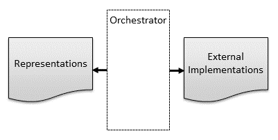
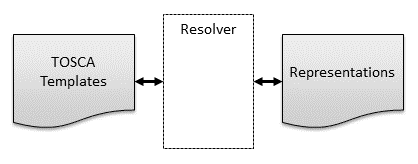
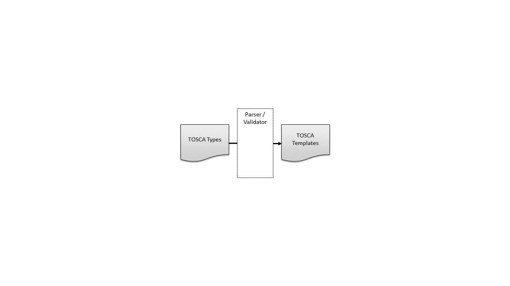
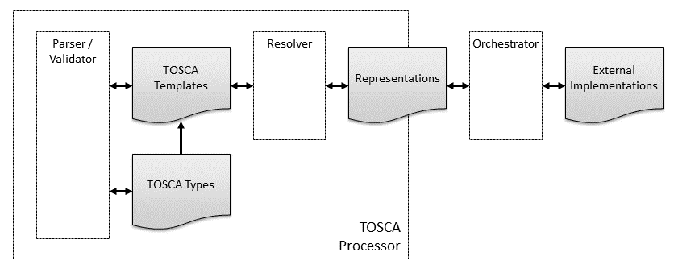
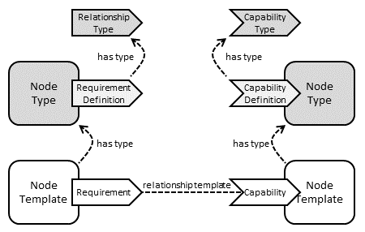
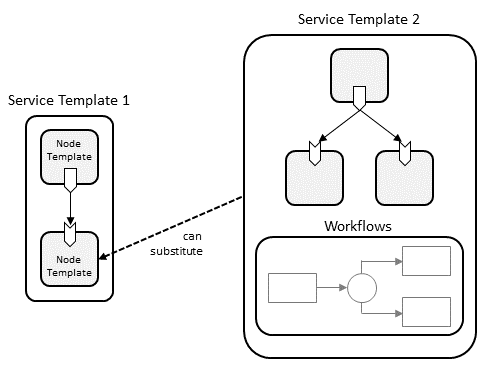
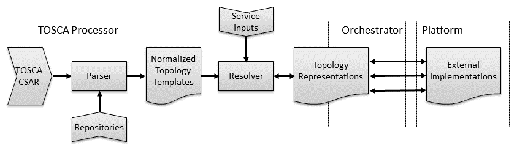
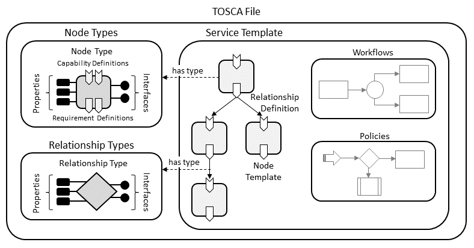

https://docs.oasis-open.org/tosca/TOSCA/v2.0/cs01/TOSCA-v2.0-cs01.md
(Authoritative)
https://docs.oasis-open.org/tosca/TOSCA/v2.0/cs01/TOSCA-v2.0-cs01.html
https://docs.oasis-open.org/tosca/TOSCA/v2.0/cs01/TOSCA-v2.0-cs01.pdf
https://docs.oasis-open.org/tosca/TOSCA/v2.0/csd07/TOSCA-v2.0-csd07.md
(Authoritative)
https://docs.oasis-open.org/tosca/TOSCA/v2.0/csd07/TOSCA-v2.0-csd07.html
https://docs.oasis-open.org/tosca/TOSCA/v2.0/csd07/TOSCA-v2.0-csd07.pdf
https://docs.oasis-open.org/tosca/TOSCA/v2.0/TOSCA-v2.0.md
(Authoritative)
https://docs.oasis-open.org/tosca/TOSCA/v2.0/TOSCA-v2.0.html
https://docs.oasis-open.org/tosca/TOSCA/v2.0/TOSCA-v2.0.pdf
OASIS Topology and Orchestration Specification for Cloud Applications (TOSCA) TC
Chris Lauwers (lauwers@ubicity.com), Individual Member
Chris Lauwers (lauwers@ubicity.com), Individual
Member
Calin Curescu (calin.curescu@ericsson.com),
Ericsson
This specification replaces or supersedes:
Topology and Orchestration Specification for Cloud Applications Version 1.0. Edited by Derek Palma and Thomas Spatzier. OASIS Standard. Latest version: http://docs.oasis-open.org/tosca/TOSCA/v1.0/TOSCA-v1.0.html.
TOSCA Simple Profile in YAML Version 1.3. Edited by Matt Rutkowski, Chris Lauwers, Claude Noshpitz, and Calin Curescu. Latest stage: https://docs.oasis-open.org/tosca/TOSCA-Simple-Profile-YAML/v1.3/TOSCA-Simple-Profile-YAML-v1.3.html.
This specification is related to:
The Topology and Orchestration Specification for Cloud Applications (TOSCA) provides a language for describing application components and their relationships by means of a service topology, and for specifying the lifecycle management procedures for creation or modification of services using orchestration processes. The combination of topology and orchestration enables not only the automation of deployment but also the automation of the complete service lifecycle management. The TOSCA specification promotes a model-driven approach, whereby information embedded in the model structure (the dependencies, connections, compositions) drives the automated processes.
This document was last revised or approved by the OASIS Topology and Orchestration Specification for Cloud Applications (TOSCA) TC on the above date. The level of approval is also listed above. Check the "Latest stage" location noted above for possible later revisions of this document. Any other numbered Versions and other technical work produced by the Technical Committee (TC) are listed at https://groups.oasis-open.org/communities/tc-community-home2?CommunityKey=f9412cf3-297d-4642-8598-018dc7d3f409#technical.
TC members should send comments on this specification to the TC's email list. Any individual may submit comments to the TC by sending email to Technical-Committee-Comments@oasis-open.org. Please use a Subject line like "Comment on TOSCA".
This specification is provided under the RF on Limited Terms of the OASIS IPR Policy, the mode chosen when the Technical Committee was established. For information on whether any patents have been disclosed that may be essential to implementing this specification, and any offers of patent licensing terms, please refer to the Intellectual Property Rights section of the TC's web page (https://www.oasis-open.org/committees/tosca/ipr.php).
Note that any machine-readable content (Computer Language Definitions) declared Normative for this Work Product is provided in separate plain text files. In the event of a discrepancy between any such plain text file and display content in the Work Product's prose narrative document(s), the content in the separate plain text file prevails.
The key words "MUST", "MUST NOT", "REQUIRED", "SHALL", "SHALL NOT", "SHOULD", "SHOULD NOT", "RECOMMENDED", "NOT RECOMMENDED", "MAY", and "OPTIONAL" in this document are to be interpreted as described in BCP 14 [RFC2119] and [RFC8174] when, and only when, they appear in all capitals, as shown here.
When referencing this specification the following citation format should be used:
[TOSCA-v2.0]
TOSCA Version 2.0. Edited by Chris Lauwers and Calin Curescu. 5 December 2024. OASIS Committee Specification 01. https://docs.oasis-open.org/tosca/TOSCA/v2.0/cs01/TOSCA-v2.0-cs01.md. Latest stage: https://docs.oasis-open.org/tosca/TOSCA/v2.0/TOSCA-v2.0.md
Copyright © OASIS Open 2024. All Rights Reserved.
Distributed under the terms of the OASIS IPR Policy.
The name "OASIS" is a trademark of OASIS, the owner and developer of this specification, and should be used only to refer to the organization and its official outputs.
For complete copyright information please see the full Notices section in Appendix E.
The Topology and Orchestration Specification for Cloud Applications (TOSCA) provides a language for describing components and their relationships by means of a service topology, and for specifying the lifecycle management procedures for creation or modification of services using orchestration processes. The combination of topology and orchestration enables not only the automation of deployment but also the automation of the complete service lifecycle management. The TOSCA specification promotes a model-driven approach, whereby information embedded in the model structure (the dependencies, connections, compositions) drives the automated processes.
The content in this section is non-normative.
This version of the specification includes significant changes from TOSCA 1.3. In particular:
TOSCA v2.0 removes the Simple Profile type definitions from the standard. These type definitions are now managed as an open source project in the TOSCA Discussion github repository.
Rather than bundling Profiles with the TOSCA standard, TOSCA v2.0 provides support for user-defined domain-specific profiles as follows:
It allows collections of type definitions to be bundled together into named profiles.
It supports importing profiles using their profile name.
TOSCA v2.0 formalizes support for in-life operation of a running service.
It formalizes the role of a representation model and clarifies how to create representation models from service templates.
It documents how to create multiple node representations from the same node template and multiple relationships from the same requirement assignment.
It defines an operational model that provides guidance for updating and/or upgrading a running service and for responding to notifications about state changes or errors.
TOSCA v2.0 introduces a new TOSCA Path syntax that allows a defined traversal of an arbitrary graph of nodes and relationships to an attribute or property.
TOSCA v2.0 significantly enhances support for functions. It formalizes function syntax, it extends the set of built-in functions, and it introduces support for user-defined custom functions.
TOSCA v2.0 harmonizes constraint syntax, filter syntax, and condition syntax using Boolean functions.
TOSCA v2.0 addresses shortcomings of the v1.3 substitution mapping grammar.
TOSCA v2.0 simplifies and extends the CSAR file format.
TOSCA v2.0 includes a broad set of syntax clarifications, including but not limited to:
The service template is renamed TOSCA file and service template is redefined.
Grammar for relationship types, requirement definitions, and requirement assignments has been extended and clarified.
Short notation for entry_schema and
key_schema has been documented
Within this document we use monospace font sections to denote code snippets, primarily for TOSCA (YAML), but also for other textual file formats (e.g. CSAR meta files). For example:
MyMap:
property1: value
property2: [ value1, value2 ]Within this document we use angle brackets (<...>)
with snake case names in monospace font to denote specification
placeholders: values that must be provided by service template and
profile authors. These are used both in the explanatory language of the
specification as well as in the TOSCA (YAML) code snippets.
We use snake case in order to avoid spaces that could introduce rendering problems due to malformed code parsing.
The names in the angle brackets are a brief description of the value
and sometimes also hint at the type of value when appropriate and
helpful. Examples: <relationship_template_name>,
<node_filter_def>,
<directives_list>.
Note that if you copy a TOSCA code snippet that includes this notation you must replace the placeholders with your own content.
Also note that while some placeholders are for specific YAML types (e.g. strings, numbers, booleans), some may allow for complex values (sequences and maps), and indeed allow for nested complex values. Refer to the explanations for details.
Variations:
<foo> | <bar>: placeholder for one of
several kinds of value. Each kind has a different meaning, use, or rule,
and is often (but not always) of a different data type.
There can be multiple pipes | if more than two kinds of
value are possible. Example:
<node_template_name> | <tuple_of_node_template_and_index> | <node_type_name>.
[ <foo_1>, <foo_2>, ... ]: placeholder
for a YAML sequence of placeholders of the same kind. Note that in some
cases this may mean "one or more", but in other cases an empty sequence
is also possible. See the explanatory text for rules.
The sequence may also appear in long YAML notation:
- <foo_1>
- <foo_2>
- ...Note that elements may have more than one kind, noted with a
| as above. Example:
[ <foo_1> | <bar_1>, <foo_2> | <bar_2>, ... ]
Placeholders for YAML map entries always appear nested in the long YAML notation:
key:
<foo_1>
<foo_2>
...<foo_*> is used to refer to any or all of the
placeholders in the sequence or map notations.
In the TOSCA examples included in this specification we adhere to a few conventions.
Note that TOSCA parser should not normally enforce these conventions and you are generally free to use other conventions in your service templates and profiles. However, we encourage authors to adopt our conventions if possible in order to encourage consistent readability within the TOSCA ecosystem.
TOSCA keynames: snake case. Future versions of TOSCA, as
well as forked variants, will continue to use this convention when
introducing new keynames. Examples: service_template,
node_filter, valid_relationship_types.
In this document we use monospace font for all TOSCA keynames in order to clearly differentiate the language specification from user values.
TOSCA value names: dash case (also called kebab case). This includes names of node templates, properties, attributes, inputs, operations, capabilities, relationships, metadata keys, repository names, artifacts names, etc. Dash case is preferred in order to differentiate these names from keynames. Examples: "control-plane", "max-bandwidth", "source-url", "deployment-host", "connection-pool-size".
TOSCA entity type names: camel case. This includes all TOSCA entity types: nodes, relationships, capabilities, artifacts, data, etc. Examples: "Server", "BlockStorage", "OperatingSystem", "VirtualLink". All words in the name should be capitalized, including prepositions. Examples: "AddressAndPort", "NetworkOrFile". Acronyms and abbreviations should be treated as words, except when the name is just a single acronym. Examples: "HttpEndpoint", "TcpOrUdp", "TCP", "DBMS".
TOSCA relationship type names: prefer fragments that appear between nouns, which usually are verbs in present simple form and may include a preposition. Examples: "Includes", "Rejects", "DependsOn", "LinksTo", "RunAt", "FromSource".
TOSCA capability type names: these are commonly -able adjectives or other typifying, characterizing, or modifying words. Examples: "Bindable", "Linkable", "Scalable", "Host", "DataSource".
TOSCA primitive data type names: we prefer single
lower-case whole words: string, integer,
float, boolean. Note that previous versions of
TOSCA also had types with the "scalar-unit." prefix, however we now
prefer to to use normal camel case type names for these. See scalar for more examples.
As primitive data type names are part of the language specification, they are represented in monospace font.
TOSCA function names: snake case. This includes the
built-in functions as well as custom functions. Examples:
$greater_than, $has_any_key,
$my_custom_function.
As function names are part of the language specification, they are represented in monospace font.
The following terms are used throughout this specification and have the following definitions when used in context of this document.
| Term | Definition |
|---|---|
| External implementation | An external implementation is a component in the real world that can be used or managed by an Orchestrator. External implementations can consist of physical resources deployed in the real world as well as logical or virtual components provisioned or configured on those resources. |
| System | A collection of one or more external implementations that is designed to work together to deliver a specific mission. |
| Service | A system that can be deployed, provisioned, or configured on-demand by an Orchestrator. |
| Topology | A topology defines the structure of a system. Topologies define the external implementations that make up the system as well as the interactions or other dependencies between these components. |
| Representation | A representation is a model maintained by an Orchestrator that represents external implementations. Representations capture those aspects of external implementations that are relevant for management purposes. |
| Service representation | A model that represents a system of one or more external implementations. Service representations model the topology of systems as directed graphs that consist of node representations and relationship representations. |
| Node representation | Node representations are the vertices in a service representation graph. They represent external implementations. |
| Relationship representation | Relationship representations are the edges in a service representation graph. They represent the interactions or other dependencies between the external implementations in a system. |
| Template | Templates are blueprints that capture the design of external implementations. Representations are created from templates. |
| Service template | A template that captures the design of a entire system or service. Service templates consist of node templates from which node representations can be created. Node templates can include requirements (and associated relationship templates) from which relationship representations can be created. Service templates can also define the actions required to create or configure external implementations based on these node and relationship representations. |
| Node template | A template that captures the design of an individual component. Node templates define values for the configurable properties of components, specify observable runtime state, and define requirements and capabilities that specify how components interact. Node representations are created from node templates. |
| Relationship template | A template that captures the design of interactions between components. Relationship representations are created from relationship templates. |
Defined in this document:
Used by this specification:
Used as examples:
The Topology and Orchestration Specification for Cloud Applications (TOSCA) is a domain-specific language (DSL) for automating Lifecycle Management of large complex systems.
The TOSCA language allows service designers to describe system components and their relationships by means of a service topology, and to specify the lifecycle management procedures for the creation and modification of services using orchestration processes. The combination of topology and orchestration enables not only the automation of deployment but also the automation of the complete service lifecycle management (including scaling, patching, upgrading, monitoring, etc.).
The content in this section is non-normative.
Large systems such a cloud applications, telecommunications networks, and software services are becoming increasingly more difficult to manage. This challenge is the result of a recent technology trends such as the adoption of cloud-native architectures that build systems as collections of microservices, the disaggregation of large hardware appliances, the decoupling of hardware and software, and the adoption of edge deployments that move application functionality closer to the end-user.
As a result of the above technology trends, large systems typically involve a wide variety of technologies and include components from multiple vendors. This results in management systems based on vendor-specific tools, dedicated component management systems, and special-purpose controllers, each of which manages only a small subset of the system. To make matters worse, these tools often use incompatible interfaces or data schemas, resulting in integration nightmares. As the number of components grows—because the scale of the system increases and disaggregation becomes the norm—so will the number of required management tools.
Management of such systems can be greatly simplified if the creation and lifecycle management of application, infrastructure, and network services can be fully automated and supported across a variety of deployment environments. TOSCA was expressly designed to address the complexity associated with managing large systems by providing a language for specifying an information model and automating the lifecycle management of large complex systems. The goal of TOSCA is to define a language that is agnostic to specific technological and commercial ecosystems and that supports the design and operation of large systems without being tied to specific technologies or specific vendors. This enables a uniform management approach that can be used for all parts of the system and can integrate components across all layers of the technology stack.
The capabilities offered by TOSCA will facilitate higher service continuity, reduce service disruption and manual mitigation, increase interoperability, avoid lock-in, and achieve the intended orchestration. Ultimately, this will benefit the consumers, developers, and providers of more and more complex and heterogeneous networks, systems, and cloud-native applications.
The TOSCA specification promotes a model-driven management approach, whereby TOSCA processors maintain service models (digital twins) for all system components under management. In a model-driven approach, all management actions are performed on service models first and then propagated to the external real-world entities by the management system. Similarly, changes to external resources are reflected into models first and then handled by management system.
TOSCA's model-driven management approach is what enables its use for all Lifecycle Management Phases: information embedded in the model structure (the dependencies, connections, compositions) drives the automated processes. Specifically, it allows service models to be used:
As desired state for Moves, Adds, Changes, and Deletions (MACDs)
As context for handling faults and events using Closed Loop Automation
In addition, changing or augmenting the model also automatically adapts the LCM / orchestration behavior. Without the context provided by service models, lifecycle management cannot be fully automated.
TOSCA models systems as graphs, where the vertices represent the components of the system and the edges represents relationships, dependencies, and other interactions between these components.
The use of graphs enables declarative orchestration, where system designers can simply create descriptions ("models") of their systems, and delegate to the orchestrator the task of translating these descriptions into the commands required to realize the systems being described. The use of graphs enables this as follows:
Relationships in a TOSCA graph encode dependencies that allow an orchestrator to automatically determine the sequencing between the management operations on invoked on various components in the system, thereby avoiding the need for human-defined workflows. Implementing lifecycle or other management operations on the service can be achieved by traversing the graph.
Relationships in a TOSCA graph allow an orchestrator to automatically determine which system components may be affected by a component failure or by a change to an external resource. The orchestrator can then determine corrective actions that restore the system as a whole to its nominal state, rather than just fixing individual components.
Declarative management is often also referred to as desired state or intent-based orchestration.
TOSCA models are based on service templates that are created by service designers. Service templates consist of node templates and relationship templates that have associated node types and relationship types. Types in TOSCA represent reusable components that can be used as building blocks from which services are constructed, thereby promoting modularity and reuse.
In addition, TOSCA allows modular designs whereby service templates describe only parts of a system rather than a complete end-to-end system definition. Composition of partial system descriptions into complete system models can be done by an orchestrator at deployment time. This enables automation of placement decisions, resource allocation, and system integration.
TOSCA's modularity features allow some service design decisions to be made by an orchestrator at deployment time rather than by a service designer at service design time.
TOSCA also allows for the definition of abstract components that hide technology and vendor-specific implementation details, via mechanisms such as derivation of types and substitution of nodes. The choice of how to implement abstract components can be left to the orchestrator at deployment time. This further increases the value of TOSCA as a technology and vendor-neutral technology language orchestration. TOSCA supports the use of policies to guide the service design decisions made by orchestrators at deployment time.
Since the fundamental abstraction defined by the TOSCA language is a graph, TOSCA is not tied to any specific application domain. For example, TOSCA can be used to specify automated lifecycle management of the following:
Infrastructure-as-a-Service Clouds: automate the deployment and management of workloads in IaaS clouds such as OpenStack, Amazon Web Services, Microsoft Azure, Google Cloud, and others.
Cloud-Native Applications: deploy containerized applications, micro-services, and service meshes, for example by interfacing to orchestration platforms such as Kubernetes.
Network Function Virtualization: define the management of Virtual Network Functions and their composition into complex network services.
Software Defined Networking: support on-demand creation of network services (for example SD-WAN).
Functions-as-a-Service: define software applications without any deployment or operational considerations.
IoT and Edge computing: deploy many very similar copies of a service at the network edge.
Process Automation: support open and interoperable process control architectures.
This list is by no means intended to be exhaustive and only serves to demonstrate the breadth of application domains that can benefit from TOSCA's automated lifecycle management capabilities.
As stated above, the TOSCA language assumes a model-driven management paradigm. Using model-driven management, a model representing the managed external components is maintained and all management operations are performed on this model first and any resulting changes to the model are then propagated to the external components. Similarly, any status changes or errors experienced by the external components are reflected in the model first before they are handled by the management system. The model maintained by the management system must capture all aspects of the external components that are relevant for the purpose of managing those components.
External components under management can consist of physical resources deployed in the real world as well as logical or virtual components provisioned or configured on those resources. In the context of TOSCA, we will refer to the physical or virtual components under management as external implementations, and we will refer to the models as representations. Note that the TOSCA language does not standardize any object models or schemas for representations. It presumes the existence of such models, but the model details are implementation specific.
A model-driven management system must include a component that is responsible for keeping the representations and the external implementations synchronized. In the context of this specification, we will refer to this component as the orchestrator. An orchestrator may perform this synchronization task based on workflows, policies, or other mechanisms that are defined using statements expressed in the TOSCA language, in which case we will refer to the component as a TOSCA orchestrator. Alternatively, an orchestrator may also perform this task based on domain-specific knowledge that is built-in to the orchestrator rather than being defined using TOSCA. This specification allows for either approach.
The following diagram shows how external implementations are modeled using representations, and how the Orchestrator synchronizes the two.
Figure 1: Representations and Implementations

TOSCA representations don't just track individual components and their management aspects; they also capture how the various components interact, with the goal of providing complete system functionality. TOSCA accomplishes this by modeling the topology of systems as graphs where nodes in the graph represent the components under management and vertices in the graph represent containment, dependencies, interactions, or other relationships between these components. In this specification, we use the term service representation to refer to a graph that models the topology of an entire system or subsystem, and we use the terms node representation and relationship representation respectively to model the nodes and vertices in a service representation graph.
Information about how node and relationship representations are organized in service representation graphs is captured in designs (a.k.a blueprints) that are created by service designers and expressed in the TOSCA language. In this specification, we refer to those designs as service templates and we use the term resolver to refer to the management component that instantiates service representations based on service templates. TOSCA service templates define service elements and their relationships which results in the service representations to be created as graphs. Service templates consist of node templates from which node representations are created, and relationship templates from which relationship representations are created. Note that while TOSCA does not standardize representations, it does standardize the grammar for defining templates.
The use of templates supports reuse of service designs while at the same time allowing for service-specific variability. Specifically, node templates and relationship templates can use TOSCA functions to specify that configuration values need to be provided as template inputs to each deployment, or that configuration values need to be retrieved at deployment time from other node or relationship representations in the service representation graph. At deployment time, TOSCA resolvers evaluate these functions to generate the values to be used when creating new service representations. TOSCA also includes grammar for creating multiple node representations from the same node template and for creating multiple relationship representations from the same relationship template. TOSCA supports modular designs where different deployments can combine sub-system representations created from different service templates into deployment-specific system representations.
The following diagram shows how representations are created from templates by a resolver:
Figure 2: TOSCA Templates and Representations

To allow for design-time validation of service templates, all TOSCA templates defined by those service templates have associated TOSCA types. TOSCA types define schemas and constraints with which TOSCA templates have to comply. For example, a TOSCA node type defines configurable properties that must be provided for the associated component, it defines the runtime attributes that are expected to be available for the component, and it specifies allowed and required interactions with other components. A TOSCA-based management system must include a TOSCA parser/validator that checks if the templates used in a TOSCA file are valid for the types with which they are associated. This allows many kinds of errors to be flagged at service design time rather than at service deployment time.
The following diagram shows how templates are created from and validated against TOSCA type definitions:
Figure 3: TOSCA Types and TOSCA Templates

The use of types in TOSCA also provides the additional benefits of abstraction, information hiding, and reuse. TOSCA types can be organized in a type hierarchy where one or more type definitions can inherit from another type, each derived type may then be refined. This promotes reuse. The base type may be more generic and the derived types may be more concrete which promotes abstraction. TOSCA node types and TOSCA relationship types define an externally visible management façade for entities of that type while hiding internal implementation details. This management façade defines interfaces that can be used by an orchestrator to interact with the external implementations represented by the entity. When node types and relationship types are packaged together with internal implementation artifacts for their interfaces, they become reusable building blocks that can greatly facilitate the creation of end-to-end services. TOSCA types that define such reusable building blocks are typically organized in domain-specific TOSCA profiles.
The following figure summarizes the various concepts introduced in this section. When a TOSCA implementation implements multiple TOSCA processing modules such as parsing, validating, and resolving, such an implementation is commonly referred to as a TOSCA processor.
Figure 4: Summary of Core TOSCA Concepts

Note that this diagram is only intended to highlight concepts used in this specification, not to suggest software architectures or implementations. Nor is this diagram intended to be comprehensive or exclusive. Other kinds of processors and modules may qualify as implementations of TOSCA, for example:
TOSCA translator: A tool that translates TOSCA files into documents that use another language, such as Kubernetes Helm charts or Amazon CloudFormation templates.
TOSCA template generator: A tool that generates a TOSCA file. An example of generator is a modeling tool capable of generating or editing a system design expressed using TOSCA.
TOSCA files are files describing TOSCA service templates, TOSCA types, or a combination thereof.
In order to support in a certain environment the execution and management of the lifecycle of a cloud application, all corresponding artifacts have to be available in that environment. This means that beside the TOSCA file of the cloud application, the deployment artifacts and implementation artifacts have to be available in that environment. To ease the task of ensuring the availability of all of these, this specification defines a corresponding archive format called CSAR (Cloud Service ARchive).
A CSAR is a container file, i.e. it contains multiple files of
possibly different file types. These files are typically organized in
several subdirectories, each of which contains related files (and
possibly other subdirectories etc.). The organization into
subdirectories and their content is specific for a particular cloud
application. CSARs are zip or tar files, typically compressed. A CSAR
may contain a file called TOSCA.meta that describes the
organization of the CSAR.
The TOSCA language introduces a YAML-based grammar for automating the lifecycle management of application, infrastructure, and network services. The language defines a metamodel for specifying both the structure of a service as well as its management aspects. Using TOSCA statements expressed in a TOSCA file, service designers create a service template that defines the structure of a service. Interfaces, operations, and workflows define how service elements can be created and terminated as well as how they can be managed during their whole lifetimes. Policies specify operational behavior of the service such as quality-of-service objectives, performance objectives, and security constraints, and allow for closed-loop automation.
The content in this section is non-normative.
Within a TOSCA file, a service template defines the topology model of a service as a directed graph. Each node in this graph is represented by a node template. A node template specifies the presence of an entity of a specific node type as a component of a service. A node type defines the semantics of such a component, including the configurable properties of the component (via property definitions), its runtime state (via attribute definitions) and the operations (via interface definitions) available to manipulate the component. In a service template, a node template assigns values to the properties defined in the corresponding node type. An orchestrator updates attribute values as a result of performing lifecycle management operations or in response to notifications about changes in component state.
For example, consider a service that consists of an some computing application, a database and some computing resource to run them on. A service template defining that service would include one node template of the node type for the particular software application, another node template of node type database management system or a more specific derivative (MariaDB,perhaps), and a third node template of node type compute or more likely a more specific derivative. The DBMS node type defines properties like the IP address of an instance of this type, an operation for installing the database application with the corresponding IP address, and an operation for shutting down an instance of this DBMS. A constraint in the node template can specify a range of IP addresses available when making a concrete application server available.
Node templates may include one or more relationship templates to other node templates in the service template. These relationship templates represent the edges in the service topology graph and model dependencies and other interactions between components. Note that in this specification, relationship templates are more frequently referred to as requirements for reasons that will be explained below. Relationship templates in TOSCA are unidirectional: the node template that includes the relationship template is implicitly defined as the source node of that relationship template and the relationship template explicitly specifies its target node. Each relationship template refers to a relationship type that defines the semantics of the relationship. Just like node types, relationship types define properties, attributes, and interfaces. Node types and relationship types are typically defined separately for reuse purposes and organized into profiles.
In the example above, a relationship can be established from the application server node template to the database node template with the meaning depends on, and from both the application and DBMS node templates to the compute node template with meaning deployed on.
We discussed earlier how relationship templates are used to link node templates together into a service topology graph. However, it may not always be possible to define all node templates for a given service topology within a single service template. For example, modular design practices may dictate that different service sub-components be modelled using separate service templates. This may result in relationships across multiple service templates. Additionally, relationships may need to target components that already exist and do not need to be instantiated by an orchestrator. For example, relationships may reference physical resources that are managed in a resource inventory. Service templates may not include node templates for these resources.
TOSCA accommodates both service template internal and external relationships using requirements and capabilities of node templates. Requirements express that a component depends on a feature provided by another component, or that the component has certain requirements against the hosting environment such as for the allocation of certain resources or the enablement of a specific mode of operation. Capabilities represent features exposed by components that can be targeted by requirements of other components. A requirement defined in one node template is fulfilled by establishing a relationship to a corresponding capability defined in a second node template. If a requirement explicitly specifies a target node template defined in the same service template, it acts as a relationship template. A requirement that does not explicitly specify a target node template is referred to as a dangling requirement. For simplicity, this specification uses the term requirement for both relationship templates and dangling requirements.
All mandatory dangling requirements must be fulfilled by the TOSCA processor at service deployment time. While dangling requirements are defined in the context of node templates, fulfilling dangling requirements is done in the context of node representations. This means that when finding candidates for fulfilling a dangling requirement, the TOSCA processor must consider node representations rather than the templates from which these representations were created. When fulfilling requirements, template directives to the TOSCA processor can be used to specify if the target candidates are template-internal node representations, or external representations created from multiple service templates, or representations for external resources managed in an inventory. Thus, requirement fulfillment may result in relationships that are established across service template boundaries.
Requirements and capabilities are modelled by annotating node types with requirement definitions and capability definitions respectively. Capability definitions themselves have associated capability types that are defined as reusable entities so that those definitions can be used in the context of several node types. Just like node types and relationship types, capability types can define properties and attributes. Requirement definitions are effectively relationship definitions that specify the relationship type that will be used when creating the relationship that fulfils the requirement.
The following figure summarizes the various TOSCA abstractions used for defining requirements and capabilities:
Figure 5: Requirements and Capabilities

TOSCA provides support for decomposing service components using its substitution mapping feature. This feature allows for the definition of abstract service designs that consist of generic components that are largely independent of specific technologies or vendor implementations. Technology or vendor-specific implementation details can be defined for each generic component using substituting service templates that describe the internals of that component.
For example, a service template for a business application that is hosted on an application server tier might focus on defining the structure and manageability behavior of the business application itself. The internals of the application server tier hosting the application can be provided in a separate service template built by another vendor specialized in deploying and managing application servers. This approach enables separation of concerns as well as re-use of common infrastructure templates.
Figure 6: Node Decomposition

From the point of view of a service template (e.g. the business application service template from the example above) that uses another service template, the other service template (e.g. the application server tier) looks just like a node template. During deployment, however, the node representation created from this node template can be substituted by a service created from the second service template if it exposes the same external façade (i.e. properties, capabilities, requirements, etc.) as the node for which it is a substitution. Thus, a substitution by any service template that has the same façade as the substituted node becomes possible, allowing for a hierarchical decomposition of service representations. This concept also allows for providing alternative substitutions that can be selected by a TOSCA processor at service deployment time. For example there might exist two service templates, one for a single node application server tier and another for a clustered application server tier, and the appropriate option can be selected on a deployment-by-deployment basis.
Both node types and relationship types may define lifecycle operations that define the actions an orchestration engine can invoke when instantiating a service from a service template or when managing a deployed service. For example, a node type for some software product might provide a "create" operation to handle the creation of an instance of a component at runtime, or a "start" or "stop" operation to allow an orchestration engine to start or stop the software component.
Operations that are related to the same management mission (e.g. lifecycle management) are grouped together in interface definitions in node and relationship types. Just like other TOSCA entities, interfaces have a corresponding interface type that defines the group of operations that are part of the interface, the input parameters that are required by those operations, and any output parameters returned by the operations. Interface types can also define notifications that represent external events that are generated by the external implementations and received by the orchestrator.
The implementations of interface operations can be provided as TOSCA artifacts. An artifact represents the content needed to provide an implementation for an interface operation. A TOSCA artifact could be an executable (e.g. a script, an executable program, an image), a configuration file or data file, or something that might be needed so that another executable can run (e.g. a library). Artifacts can be of different types, for example Ansible playbooks or Python scripts. The content of an artifact depends on its artifact type. Typically, descriptive metadata (such as properties) will also be provided along with the artifact. This metadata might be needed by an orchestrator to properly process the artifact, for example by describing the appropriate execution environment.
A deployed service is an instance of a service template. More precisely, a service is deployed by first creating a service representation based on the service template describing the service and then orchestrating the external implementations modelled by those representations. If TOSCA orchestration is used, the external implementations are created by running workflows that invoke interface operations defined in the types of the nodes and relationships in the representation graph. TOSCA workflows can often be generated automatically by the orchestrator by using the relationships in the service representation graph to determine the order in which external implementations must be created. For example, during the instantiation of a two-tier application that includes a web application that depends on a database, an orchestration engine would first invoke the "create" operation on the database component to install and configure the database, and it would then invoke the "create" operation of the web application to install and configure the application (which includes configuration of the database connection).
Interface operations invoked by workflows must use actual values for the various properties in the node templates and relationship templates in the service template. These values are tracked in the node representations and relationship representations in the service representation graph. They can be provided as inputs passed in by users as triggered by human interactions with the TOSCA processor. Alternatively, the templates can specify default values for some properties, or use TOSCA functions to retrieve those values from other entities in the service representation graph.
For example, the application server node template will be instantiated by installing an actual application server at a concrete IP address considering the specified range of IP addresses. Next, the process engine node template will be instantiated by installing a concrete process engine on that application server (as indicated by the "hosted-on" relationship template). Finally, the process model node template will be instantiated by deploying the process model on that process engine (as indicated by the "deployed-on" relationship template).
Non-functional behavior or quality-of-services are defined in TOSCA by means of policies. A policy can express such diverse things like monitoring behavior, payment conditions, scalability, or continuous availability, for example.
A node template can be associated with a set of policies collectively expressing the non-functional behavior or quality-of-services that each instance of the node template will expose. Each policy specifies the actual properties of the non-functional behavior, like the concrete payment information (payment period, currency, amount etc.) about the individual instances of the node template.
These properties are defined by a policy type. Policy types might be defined in hierarchies to properly reflect the structure of non-functional behavior or quality-of-services in particular domains. Furthermore, a policy type might be associated with a set of node types the non-functional behavior or quality-of-service it describes.
Policy templates provide actual values of properties of the types defined by policy types. For example, a policy template for monthly payments for customers located in the USA will set the "payment-period" property to "monthly" and the "currency" property to "USD", leaving the "amount" property open. The "amount" property will be set when the corresponding policy template is used for a policy within a node template. Thus, a policy template defines the invariant properties of a policy, while the policy sets the variant properties resulting from the actual usage of a policy template in a node template.
The content in this section is normative unless otherwise labeled except for:
TOSCA is designed to support all three phases of the service lifecycle:
Day 0—Service Design: Service designers use TOSCA to model services as topology graphs that consist of nodes and relationships. Nodes model the components of which a service is composed, and relationships model dependencies between these service components.
Day 1—Service Deployment: TOSCA can also be used to define mechanisms for deploying TOSCA service topologies on external platforms.
Day 2—Service Management: TOSCA can enable run-time management of services by providing support for updating and/or upgrading deployed services and by providing service assurance functionality.
This section presents a TOSCA functional architecture and an associated operational model that supports the three service lifecycle phases outlined above. Note that this functional architecture is not intended to prescribe how TOSCA must be implemented. Instead, it aims to provide users of TOSCA with a mental model of how TOSCA implementations are expected to process TOSCA files.
Note that it is not mandatory for compliant TOSCA implementations to four kinds of TOSCA abstractions defined in Section 2.4 support all three service lifecycle phases. Some implementations may use TOSCA only for service design and delegate orchestration and ongoing lifecycle management functionality to external (non-TOSCA) orchestrators. Other implementations may decide to use TOSCA for all three phases of the service lifecycle. However, a complete architecture must anticipate all three lifecycle phases and must clearly distinguish between the different types of TOSCA abstractions introduced in the section TOSCA language abstractions.
The following Figure shows the TOSCA functional architecture defined in this section. It illustrates how the various TOSCA entities are used by the different functional blocks and how they are related.
Figure 7: TOSCA Functional Architecture

The functional architecture defines the following three blocks:
TOSCA Processor: This functional block defines functionality that must be provided by all TOSCA implementations. TOSCA processors convert TOSCA-based service definitions into service representations that can be processed by an Orchestrator.
Orchestrator: This functional block creates external implementations on various resource platforms based on the service representations created by a TOSCA processor. The orchestration functionality can itself be defined using TOSCA or can be provided by external (non-TOSCA) orchestration platforms.
Platform: In the context of a TOSCA architecture, platforms represent external cloud, networking, or other infrastructure resources on top of which service entities can be created.
The remainder of this section describes each of these functional blocks in more detail.
At the core of a compliant TOSCA implementation is a TOSCA Processor that can create service representations from TOSCA service templates. A TOSCA Processor contains the following functional blocks:
A TOSCA parser performs the following functions:
Accepts a single TOSCA file plus imported TOSCA files (files
without a service_template)
Can (optionally) import these files from one or more repositories, either individually or as complete profiles
Outputs valid normalized node templates. Note that normalized node templates may include unresolved (dangling) requirements.
A resolver creates service representations based on normalized service templates. It performs the following functions:
Creating Node Representations based on Normalized Node Templates.
Either one-to-one or one-to-many if multiplicity is involved.
Node templates with a "select" directive create a node in the local representation graph that is a reference to the selected node (from the local or a remote representation graph).
Node templates with a "substitute" directive create a node in the local representation graph that is associated to a remote representation graph created from the substitution template.
The resolver assigns values to node properties and attributes in node representations based on values or functions defined in the corresponding node templates.
Some property and attribute values cannot be initialized since they either depend on other uninitialized properties or attributes or need to access other node representations via relationships that have not been yet initialized.
Creating Relationships that Connect Node Representations
Some relationships can be created directly based on target node templates specified in node template requirements.
Other relationships are created by fulfilling dangling requirements
If a requirement uses a node_filter that refers to uninitialized properties or attributes, then the fulfillment of this requirement is postponed until all referred properties or attributes are initialized.
A circular dependency signifies a erroneous template and shall report an error
After a relationship is created, properties and attributes that depend on it to be initialized will be initialized.
At the end of this process all mandatory requirements must be satisfied and all relationships are added to the representation graph. An unsatisfied non-optional requirement results in an error.
Substitution Mapping
When substitution is directed for a node, the resolver creates a new service representation based on the substituting template, basically creating a service that represents the internals of the substituted node.
The substituting service is initialized from the properties of the substituted node and the workflows of the substituting service act as operations for the substituted node (that is, the behavior of the node is substituted by the substituting service).
This is defined via substitution mapping rules.
An orchestrator performs the following actions:
(Continuously) turns node representations into one or more node implementations
(Continuously) updates node representation attribute values (error if they do not adhere to TOSCA type validation clauses or property definition validation clauses)
(Continuously) reactivates the resolver: outputs may change attribute values, which can require refulfillment of dangling requirements or resubsitution of substituted nodes.
(Optionally) changes the node representations themselves for day 2 transformations.
During the lifetime of a service there can be several actions or events that change the representation graph of the running service.
We can identify the several situations that mandate the change of the representation graph, for example:
Update:
Upgrade:
Runtime failures:
Change in dependencies
For the service to reach the new desired runtime state, operations that are associated with the creation, deletion, and modification of nodes and relationships in the representation graph need to be performed.
We can visualize (and the orchestrator can perform) these restorative actions via graph traversals on the "old" and "new" representation graph.
First let's categorize the nodes and relationships in the "old" and "new" representation graphs in the following four categories:
Unchanged: These are nodes and relationships that appear in both the "old" and "new" representation graphs and have the same property values. Given that a template can be upgraded, we correlate the same nodes and relationships via their symbolic node names and requirement names.
Modified: These are nodes and relationships that appear in both the "old" and "new" representation graphs and have different property values.
Obsolete: These are nodes and relationships that appear in the "old" representation graph but not in the "new" representation graph.
Novel: These are nodes and relationships that do not appear in the "old" representation graph but appear in the "new" representation graph.
We then perform deletions of the obsolete nodes by traversing the representation graph in reverse dependency order as follows:
We start in parallel with all nodes that have no incoming dependency relationship
we perform operations associated with deleting on all adjacent relationships to this node that are in the "obsolete" category.
we perform operations associated with deleting on the node itself if it is in the "obsolete" category.
we move to nodes that have no incoming dependency relationship to nodes that have not been processed yet.
After we have processed the deletion of the obsolete elements we traverse the "new" representation graph in dependency order to perform the modifications and creations:
we start in parallel with the nodes that have no outgoing dependency relationship
we perform operations associated with creation resp. modification on the node itself if it is in the "novel" resp. "modified" category
we perform operations associated with creation resp. modification on all adjacent relationships in the "novel" resp. "modified" category if the node on the other side of the relationship has been processed.
we move to nodes that have no outgoing dependency relationship to nodes that have not been processed yet.
After this we can consider the service to be in the new desired runtime state, and the "old" representation graph can be discarded and the "new" representation graph becomes the current representation graph of the service.
Note that this graph traversal behavior should be associated with the relevant interface types that are defined in a TOSCA profile, where it should be specified which relationship types form the dependency relationships, which operation(s) are associated with the deletion, modification, and creation of the nodes and relationships when the representation graph changes.
The content in this section is normative unless otherwise labeled except for:
This section defines concepts used in support of the modeling functionality of the TOSCA Version 2.0 specification. Specifically, it introduces grammar for defining TOSCA types and templates as defined in the Chapter TOSCA Core Concepts, it introduces the concepts of entity definitions and entity assignments, and presents rules for type derivation and entity refinement.
TOSCA templates are defined in TOSCA files and expressed using statements in the TOSCA language. All TOSCA templates are typed using TOSCA types that are also defined in TOSCA files and expressed in the TOSCA language. Not only do types promote reuse, they also simplify the design of TOSCA templates by allowing relevant TOSCA entities to use and/or modify definitions already specified in the types.
TOSCA type definitions consist of pairs of keynames and associated values that specify information relevant to the type. While all TOSCA types share a number of common keynames, each type definition has its own set of keynames with their own syntax and semantics. TOSCA supports node types, relationship types, capability types, interface types, artifact types, policy types, group types, and data types.
Some keynames in TOSCA type definitions are used to specify TOSCA entity definitions that declare the presence of those entities in the context of the type being defined. For example, most TOSCA type definitions include property definitions and attribute definitions. Node types and relationship types also include interface definitions, and node types have requirement definitions and capability definitions. Interface types can include parameter definitions that specify required inputs and expected outputs for interface operations and notifications.
Just like type definitions, entity definitions consist of pairs of
keynames and values. Each entity definition has it own syntax, semantics
and set of keynames, but all entity definitions share a
type keyname that references the TOSCA type of the entity
being defined. Other keynames in entity definitions are used to further
define or refine definitions already specified in the corresponding
entity type. TOSCA supports capability definitions,
requirement definitions, interface definitions,
policy definitions, group definitions, property
definitions, attribute definitions, and parameter
definitions.
The service templates introduced in the section on Reuse and Modularity are defined in TOSCA files and expressed using statements in the TOSCA language. Service templates define directed graphs that consist of node templates and requirements. Node templates specify a node type used for the template and then add additional information using pairs of keynames and associated values. Service templates may include other templates as well such as relationship templates, groups, policies etc.
Node types specified in node templates will typically include definition of entities, many node templates will use keynames to specify additional information for those entity definitions. Such information is referred to as an entity assignment. In general for each entity definition in the type of a template, the template can include a corresponding entity assignment that provides template-specific information about the entity. For example, node templates can include property assignments that assign template-specific values for the properties defined using property definitions in the node type. Property assignments can be provided as fixed values, but more often they will be specified using a TOSCA function that retrieve input values or that retrieve property or attribute values from other entities in a service representation graph. Entity assignments make sure that the service template can be used to generate a complete representation of the system under management.
The TOSCA type system supports inheritance which means that types can be derived from a parent type. A parent type can in turn be derived from its own parent type. There is no limit to the depth of a chain of derivations. Inheritance is a useful feature in support of abstraction. For example, base node types can be used to define generic components without specifying technology or vendor-specific details about those components. Concrete derived node types can the be used to define technology-specific or vendor-specific specializations of the generic types.
The TOSCA specification includes type derivation rules that
describe which keyname definitions are inherited from the parent type
and which definitions are intrinsic to the type declaration and
are not inherited. An example of an intrinsic definition is version, all
type definitions include a version keyname the value of
which is not inherited from a parent type.
Except for keynames that are explicitly flagged as intrinsic to each type definition, derived types inherit all the definitions of their parent type. Specifically, derived types inherit all entity definitions from their parent. In addition, these entity definitions can be expanded or modified.
Expansion of entity definitions is done through entity augmentation. Derived types use entity augmentation to add entity definitions to those already defined in the parent type. Augmentation rules pertaining to an entity describe how derived types can add to the entity definitions in the inherited parent type.
Modification of entity definitions is done through entity refinement. Derived types use entity refinement to further constrain or otherwise specialize entities already defined in the parent type. Refinement rules pertaining to an entity describe how such entity definitions that are inherited from the parent type during a type derivation can be expanded or modified.
The main reason for augmentation and refinement rules is to create a framework useful for a consistent TOSCA type profile creation. The intuitive idea is that a derived type follows to a large extent the structure and behavior of a parent type, otherwise it would be better to define a new "not derived" type.
The guideline regarding the derivation rules is that a node of a derived type should be usable instead of a node of the parent type during the selection and substitution mechanisms. These two mechanisms are used by TOSCA templates to connect to TOSCA nodes and services defined by other TOSCA templates:
The selection mechanism allows a node representation created a-priori from another service template to be selected for usage (i.e., building relationships) by node representations created from the current TOSCA template.
The substitution mechanism allows a node representation to be decomposed by a service created simultaneously from a substituting template.
A single TOSCA file may be reused by including it in one or more other TOSCA file. Each file may be separately maintained and use it's own naming scheme. The resolution of naming scheme conflicts is discussed later in this document.
The TOSCA metamodel includes complex definitions used in types (e.g., node types, relationship types, capability types, data types, etc.), definitions and refinements (e.g., requirement definitions, capability definitions, property and parameter definitions, etc.) and templates (e.g., service template, node template, etc.) all of which include their own list of reserved keynames that are sometimes marked as mandatory. If a keyname is marked as mandatory it MUST be defined in that particular definition context. In some definitions, certain keynames may be mandatory depending on the value of other keynames in the definition. In that case, the keyname will be marked as conditional and the condition will be explained in the description column. Note that in the context of type definitions, types may be used to derive other types, and keyname definitions MAY be inherited from parent types (according to the derivation rules of that type entity). A derived type does not have to provide a keyname definition if this has already been defined in a parent type.
Except where explicitly noted, all multi-line TOSCA grammar elements support the following keynames:
| Keyname | Mandatory | Type | Description |
|---|---|---|---|
metadata |
no | map of metadata | Defines a section used to declare additional information about the element being defined. |
description |
no | str | Declares a description for the TOSCA element being defined. |
Grammar for these keynames is described here and may not be repeated for each entity definition.
metadata
This optional keyname is used to associate domain-specific metadata
with a TOSCA element. The metadata keyname allows a
declaration of a map of keynames with values that can use all types
supported by the [YAML-1.2]
chapter 10 recommended schemas as follows:
metadata:
<metadata_name_1>: <metadata_value_1>
<metadata_name_2>: <metadata_value_2>
...Specifically, the following YAML types can be used for metadata values: "!!map", "!!seq", "!!str", "!!null", "!!bool", "!!int", "!!float".
The following shows an example that uses metadata to
track revision status of a TOSCA file:
metadata:
creation-date: '2024-04-14'
date-updated: '2024-05-01'
status: developmental Data provided within metadata, wherever it appears, MAY be ignored by TOSCA Orchestrators and SHOULD NOT affect runtime behavior.
description
This optional keyname provides a means to include single or multiline descriptions within a TOSCA element as a YAML string value, as follows:
description: <description_string>Standard YAML block and flow formats are supported for the description string. Simple descriptions are treated as a single literal that includes the entire contents of the line that immediately follows the description keyname:
description: This is an example of a single line description (no folding). The following shows a multiline flow example:
description: "A multiline description
using a quoted string"The YAML folded format may also be used for multiline descriptions, which folds line breaks as space characters:
description: >
This is an example of a multi-line description using YAML. It permits for line
breaks for easier readability...
if needed. However, (multiple) line breaks are folded into a single space
character when processed into a single string value.The content in this section is normative unless otherwise labeled except:
A TOSCA file can contain definitions of reusable building blocks for use in cloud applications, complete models of cloud applications, or both. This section describes the top-level TOSCA keynames—along with their grammars—that are allowed to appear in a TOSCA file.
The major entities that can be defined in a TOSCA file are depicted in Figure 8.
Figure 8: Structural Elements of a TOSCA File

The following is the list of recognized keynames for a TOSCA file:
| Keyname | Mandatory | Type | Description |
|---|---|---|---|
tosca_definitions_version |
yes | str | Defines the version of the TOSCA specification used in this TOSCA file. |
description |
no | str | Declares a description for this TOSCA file and its contents. |
metadata |
no | map of metadata | Defines a section used to declare additional information. Domain-specific TOSCA profile specifications may define keynames that are mandatory for their implementations. |
dsl_definitions |
no | N/A | Defines reusable YAML aliases (i.e., YAML alias anchors) for use throughout this TOSCA file. |
artifact_types |
no | map of artifact types | Declares a map of artifact type definitions for use in this TOSCA file and/or external TOSCA files. |
data_types |
no | map of data types | Declares a map of TOSCA data type definitions for use in this TOSCA file and/or external TOSCA files. |
capability_types |
no | map of capability types | Declares a map of capability type definitions for use in this TOSCA file and/or external TOSCA files. |
interface_types |
no | map of interface types | Declares a map of interface type definitions for use in this TOSCA file and/or external TOSCA files. |
relationship_types |
no | map of relationship types | Declares a map of relationship type definitions for use in this TOSCA file and/or external TOSCA files. |
node_types |
no | map of node types | Declares a map of node type definitions for use in this TOSCA file and/or external TOSCA files. |
group_types |
no | map of group types | Declares a map of group type definitions for use in this TOSCA file and/or external TOSCA files. |
policy_types |
no | map of policy types | Declares a map of policy type definitions for use in this TOSCA file and/or external TOSCA files. |
repositories |
no | map of repository definitions | Declares a map of external repositories that contain artifacts that are referenced in this TOSCA file along with the addresses used to connect to them in order to retrieve the artifacts. |
functions |
no | map of function definitions | Declares a map of function definitions for use in this TOSCA file and/or external TOSCA files. |
profile |
no | str | The profile name that can be used by other TOSCA files to import the type definitions in this document. |
imports |
no | seq of import definitions | Declares a list of import statements pointing to external TOSCA files or well-known profiles. For example, these may be file locations or URIs relative to the TOSCA file within the same TOSCA CSAR file. |
service_template |
no | service template definition | Defines a template from which to create a mode/representation of an application or service. Service templates consist of node templates that represent the application's or service's components, as well as relationship templates representing relations between these components. |
The following rules apply:
The key tosca_definitions_version MUST be the first
line of each TOSCA file.
TOSCA files do not have to define a service_template
and MAY contain simply type definitions, repository definitions,
function definitions, or other import statements and be imported for use
in other TOSCA files. However, a TOSCA file that defines a
profile MUST NOT define a
service_template.
The remainder of this chapter provides detailed descriptions of the keynames and associated grammars used in a TOSCA file definition.
The mandatory tosca_definitions_version keyname provides
a means to specify the TOSCA version used within the TOSCA file as
follows:
tosca_definitions_version: <tosca_version> It is an indicator for the version of the TOSCA grammar that MUST be used to parse the remainder of the TOSCA file. TOSCA uses the following version strings for the various revisions of the TOSCA specification:
| Version String | TOSCA Specification |
|---|---|
| tosca_2_0 | TOSCA Version 2.0 |
| tosca_simple_yaml_1_3 | TOSCA Simple Profile in YAML Version 1.3 |
| tosca_simple_yaml_1_2 | TOSCA Simple Profile in YAML Version 1.2 |
| tosca_simple_yaml_1_1 | TOSCA Simple Profile in YAML Version 1.1 |
| tosca_simple_yaml_1_0 | TOSCA Simple Profile in YAML Version 1.0 |
The version for this specification is tosca_2_0. The
following shows an example tosca_definitions_version in a
TOSCA file created using the TOSCA Version 2.0 specification:
tosca_definitions_version: tosca_2_0Note that it is not mandatory for TOSCA Version 2.0 implementations to support older versions of the TOSCA specifications.
The optional dsl_definitions keyname provides a section
where template designers can define YAML-style macros for use elsewhere
in the TOSCA file. DSL definitions use the following grammar:
dsl_definitions:
<dsl_definition_1>
<dsl_definition_2>
...The grammar for each <dsl_def> is as follows:
<anchor_block>: &<anchor>
<anchor_definitions>where <anchor_block> defines a set of reusable
YAML definitions (the <anchor_definitions>) for which
<anchor> can be used as an alias elsewhere in the
document.
An example of defining and using a DSL definition, a YAML anchor, is
given in scalar.
TOSCA provides a type system to describe reusable building blocks to construct a service template (i.e. for the nodes, relationship, group and policy templates, and the data, capabilities, interfaces, and artifacts used in the node and relationship templates). TOSCA types are reusable TOSCA entities and are defined in their specific sections in the TOSCA file.
In this section, we present the definitions of common keynames that are used by all TOSCA type definitions. Type-specific definitions for the different TOSCA type entities are presented further in the document:
The following keynames are used by all TOSCA type entities in the same way. This section serves to define them at once.
| Keyname | Mandatory | Type | Description |
|---|---|---|---|
derived_from |
no | str | An optional parent type name from which this type derives. |
version |
no | version | An optional version for the type definition. |
metadata |
no | map of metadata | Defines a section used to declare additional information. |
description |
no | str | An optional description for the type. |
The common keynames in type definitions have the following grammar:
<type_name>:
derived_from: <parent_type_name>
version: <version_number>
metadata:
<metadata_name_1>: <metadata_value_1>
<metadata_name_2>: <metadata_value_2>
...
description: <type_description>In the above grammar, the placeholders that appear in angle brackets have the following meaning:
<parent_type_name>: represents the optional
parent type name.
<version_number>: represents the optional
version number for the type.
<type_description>: represents the optional
description string for the type.
<metadata_name_*>,
<metadata_value_*>: represents the optional metadata
map of string.
To simplify type creation and to promote type extensibility TOSCA allows the definition of a new type (the derived type) based on another type (the parent type). The derivation process can be applied recursively, where a type may be derived from a long list of ancestor types (the parent, the parent of the parent, etc). Unless specifically stated in the derivation rules, when deriving new types from parent types the keyname definitions are inherited from the parent type. Moreover, the inherited definitions may be refined according to the derivation rules of that particular type entity. For definitions that are not inherited, a new definition MUST be provided (if the keyname is mandatory) or MAY be provided (if the keyname is not mandatory). If not provided, the keyname remains undefined. For definitions that are inherited, a refinement of the inherited definition is not mandatory even for mandatory keynames (since it has been inherited). A definition refinement that is exactly the same as the definition in the parent type does not change in any way the inherited definition. While unnecessary, it is not wrong.
The following are some generic derivation rules used during type derivation (the specific rules of each TOSCA type entity are presented in their respective sections):
If not refined, usually a keyname/entity definition, is inherited unchanged from the parent type, unless explicitly specified in the rules that it is "not inherited".
New entities (such as properties, attributes, capabilities, requirements, interfaces, operations, notification, parameters) may be added during derivation.
Already defined entities that have a type may be redefined to have a type derived from the original type.
New validation clause is added to already defined keynames/entities (i.e. the defined validation clause does not replace the validation clauses of the parent type but are added to them).
Some definitions must be totally flexible, so they will overwrite the definition in the parent type.
Some definitions must not be changed at all once defined (i.e. they represent some sort of "signature" fundamental to the type).
During type derivation the common keynames in type definitions use the following rules:
derived_from: obviously, the definition is not
inherited from the parent type. If not defined, it remains undefined and
this type does not derive from another type. If defined, then this type
derives from another type, and all its keyname definitions must respect
the derivation rules of the type entity.
version: the definition is not inherited from the
parent type. If undefined, it remains undefined.
metadata: the definition is not inherited from the
parent type. If undefined, it remains undefined.
description: the definition is not inherited from
the parent type. If undefined, it remains undefined.
TOSCA supports eight different types of types. These types can be defined in a TOSCA file using the grammars described in this section.
Artifact types can be defined in a TOSCA file using the optional
artifact_types keyname using the following grammar:
artifact_types:
<artifact_type_def_1>
<artifact_type_def_2>
...The following code snippet shows an example artifact type definition:
artifact_types:
MyFile:
derived_from: foobar:FileA detailed description of the artifact type definition grammar is provided in the Artifacts chapter.
Data types can be defined in a TOSCA file using the optional
data_types keyname using the following grammar:
data_types:
<data_type_def_1>
<data_type_def_2>
...The following code snippet shows an example of data type definition:
data_types:
# A complex datatype definition
SimpleContactInfo:
properties:
name:
type: string
email:
type: string
phone:
type: string
# datatype definition derived from an existing type
FullContactInfo:
derived_from: SimpleContactInfo
properties:
street-address:
type: string
city:
type: string
state:
type: string
postal-code:
type: stringA detailed description of the data type definition grammar is provided in the Data Type section.
Capability types can be defined in a TOSCA file using the optional
capability_types keyname using the following grammar:
capability_types:
<capability_type_def_1>
<capability_type_def_2>
...The following code snippet shows example capability type definitions:
capability_types:
MyGenericFeature:
properties:
property-1:
type: string
# more details ...
MyFirstCustomFeature:
derived_from: MyGenericFeature
properties:
an-integer:
type: integer
# more details ...
TransactSQL:
derived_from: MyGenericFeature
properties:
sql-statement:
type: string
# more details ...A detailed description of the capability type definition grammar is provided in the Capability Type section.
Interface types can be defined in a TOSCA file using the optional
interface_types keyname using the following grammar:
interface_types:
<interface_type_def_1>
<interface_type_def_2>
...The following code snippet shows an example interface type definition:
interface_types:
Signal:
operations:
signal-begin-receive:
description: Operation to signal start of some message processing.
signal-end-receive:
description: Operation to signal end of some message processed.A detailed description of the interface type definition grammar is provided in the Interface Type section.
Relationship types can be defined in a TOSCA file using the optional
relationship_types keyname using the following grammar:
relationship_types:
<relationship_type_def_1>
<relationship_type_def_2>
...The following code snippet shows example relationship type definitions:
relationship_types:
HostedOn:
properties:
property-1:
type: string
# more details ...
MyCustomClientServer:
derived_from: HostedOn
properties:
another-property:
type: string
# more details ...
MyCustomConnectionType:
properties:
connection-type:
type: string
# more details ...A detailed description of the relationship type definition grammar is provided in the Interface Type section.
Node types can be defined in a TOSCA file using the optional
node_types keyname using the following grammar:
node_types:
<node_type_def_1>
<node_type_def_2>
...The following code snippet shows example node type definitions:
node_types:
Database:
description: A generic node type for all databases
WebApplication:
description: A generic node type
MyWebApplication:
derived_from: WebApplication
properties:
my-port:
type: integer
MyDatabase:
derived_from: Database
capabilities:
SQL:
type: TransactSQLA detailed description of the node type definition grammar is provided in the Node Type section.
Group types can be defined in a TOSCA file using the optional
group_types keyname using the following grammar:
group_types:
<group_type_def_1>
<group_type_def_2>
...The following code snippet shows an example group type definition:
group_types:
MyScalingGroup:
derived_from: foobar:MyGroupA detailed description of the group type definition grammar is provided in the Group Type section.
Policy types can be defined in a TOSCA file using the optional
policy_types keyname using the following grammar:
policy_types:
<policy_type_def_1>
<policy_type_def_2>
...The following code snippet shows an example policy type definition:
policy_types:
MyScalingPolicy:
derived_from: foobar:ScalingA detailed description of the policy type definition grammar is provided in the Policy Type section.
A repository definition defines an external repository that
contains TOSCA files and/or artifacts that are referenced or imported by
this TOSCA file. Repositories are defined using the optional
repositories keyname as follows:
repositories:
<repository_def_1>
<repository_def_2>
...The following is the list of recognized keynames for a TOSCA repository definition:
| Keyname | Mandatory | Type | Description |
|---|---|---|---|
description |
no | str | Declares a description for the repository being defined. |
metadata |
no | map of metadata | Defines a section used to declare additional information. |
url |
yes | str | The URL or network address used to access the repository. |
These keynames can be used to define a repository using a grammar as follows:
<repository_name>:
description: <repository_description>
metadata:
<metadata_name_1>: <metadata_value_1>
<metadata_name_2>: <metadata_value_2>
...
url: <repository_address>In the above grammar, the placeholders that appear in angle brackets have the following meaning:
<repository_name>: represents the mandatory
symbolic name of the repository as a string
<repository_description>: contains an optional
description of the repository.
<metadata_name_*>,
<metadata_value_*>: contains an optional map of
metadata using YAML types
<repository_address>: represents the mandatory
URL to access the repository as a string.
If only the url needs to be specified, repository
definitions can also use a single-line grammar as follows:
<repository_name>: <repository_address>The following example show repository definitions using both multiline as well as single-line grammars.
repositories:
my-project:
description: My project's code repository in GitHub
url: https://github.com/my-project/
external-repo: https://foo.barA function definition defines an custom function that can be
used within this TOSCA file. Function definitions may include one or
more function signatures as well as function implementations.
Functions are defined using the optional functions keyname
as follows:
functions:
<function_def_1>
<function_def_2>
...The following example shows the definition of a square root function:
functions:
sqrt:
signatures:
- arguments:
- type: integer
validation: { $greater_or_equal: [ $value, 0 ] }
result:
type: float
implementation: scripts/sqrt.py
- arguments:
- type: float
validation: { $greater_or_equal: [ $value, 0.0 ] }
result:
type: float
implementation: scripts/sqrt.py
description: >
This is a square root function that defines two signatures:
the argument is either integer or float and the function
returns the square root as a float.A TOSCA profile is a named collection of TOSCA type definitions, repository definitions, artifacts, and function definitions that logically belong together. One can think of TOSCA profiles as platform libraries exposed by the TOSCA processor and made available to all services that use that processor. Profiles in TOSCA are similar to libraries in traditional computer programming languages. They are intended to define collections of domain-specific components that can be used by service designers to compose complex service templates. Entities defined in TOSCA profiles are used as follows:
Types defined in a TOSCA profile provide reusable building blocks on which services can be composed.
Artifacts defined in a TOSCA profile can provide implementations for the TOSCA types defined in the profile.
TOSCA implementations can organize supported profiles in a catalog to allow other service templates to import those profiles by profile name. This avoids the need for every service that uses those profiles to include the profile type definitions in their service definition packages.
TOSCA files that define profiles can be bundled together with other TOSCA files in the same CSAR package. For example, a TOSCA profile that defines more abstract node types can be packaged together with TOSCA files that define substituting service templates for those types.
A TOSCA file defines a TOSCA Profile using the profile
keyname as follows:
profile: <profile_name> Using this grammar, the profile keyname assigns a
profile name to the collection of types, repositories, and
functions defined in this TOSCA file. The specified
<profile_name> can be an arbitrary string value that
defines the name by which other TOSCA files can import this profile.
TOSCA does not place any restrictions on the value of the profile name
string. However, we encourage a Java-style reverse-domain notation with
version as a best-practice convention. For example, the following
profile statement is used to define Version 2.0 of a set of definitions
suitable for describing cloud computing in an example company:
profile: com.example.tosca_profiles.cloud_computing:2.0 The following defines a domain-specific profile for Kubernetes:
profile: io.kubernetes:1.30TOSCA parsers MUST process profile definitions according to the following rules:
TOSCA files that define a profile (i.e., that contain a
profile keyname) MUST NOT also define a service
template.
If the parser encounters the profile keyname in a
TOSCA file, then the corresponding profile name will be applied to all
types defined in that file as well as to types defined in any imported
TOSCA files.
If one of those imported files itself contains also defines the
profile keyname—and that profile name is different from the
name of the importing profile, then that profile name overrides the
profile name value from that point in the import tree onward,
recursively.
Version 1.x of the TOSCA specification included a collection of normative type definitions for building cloud applications. This collection of type definitions was defined as the TOSCA Simple Profile. Implementations of TOSCA Version 1.x were expected to include implementations for the types defined in the TOSCA Simple Profile, and service templates defined using TOSCA Version 1.x implicitly imported the corresponding TOSCA Simple Profile version.
Starting with TOSCA Version 2.0, the TOSCA Simple Profile type definitions are no longer part of the TOSCA standard and support for the TOSCA Simple Profile is no longer mandatory. Instead, the definition of the TOSCA Simple Profile has been moved to an OASIS Open Github repository with the goal of being maintained by the TOSCA community and governed as an open-source project. In addition, TOSCA Version 2.0 removes the implicit import of the TOSCA Simple Profile. Service templates that want to continue to use the TOSCA Simple Profile type definitions must explicitly import that profile.
Eliminating mandatory support for the TOSCA Simple Profile makes it easier for TOSCA to be used for additional application domains. For example, the European Telecommunications Standards Institute (ETSI) has introduced a TOSCA profile for Network Functions Virtualization defines Virtualized Network Function Descriptors (VNFDs), Network Service Descriptors (NSDs) and a Physical Network Function Descriptors (PNFDs).
TOSCA Profiles are likely to evolve over time and profile designers will release different versions of their profiles. For example, the TOSCA Simple Profile has gone through minor revisions with each release of the TOSCA Version 1 standard. It is expected that profile designers will use a version qualifier to distinguish between different versions of their profiles, and service template designers must use the proper string name to make sure they import the desired versions of these profiles.
When multiple versions of the same profile exist, it is possibly that service templates could mix and match different versions of a profile in the same service definition. The following code snippets illustrate this scenario:
Assume a profile designer creates version 1 of a base profile that defines (among other things) a "Host" capability type and a corresponding "HostedOn" relationship type as follows:
tosca_definitions_version: tosca_2_0
profile: org.base:v1
capability_types:
Host:
description: Hosting capability
relationship_types:
HostedOn:
valid_capability_types: [ Host ]Now let's assume a different profile designer creates a platform-specific profile that defines (among other things) a "Platform" node type. The Platform node type defines a capability of type "Host". Since the "Host" capability is defined in the "org.base:v1" profile, that profile must be imported as shown in the snippet below:
tosca_definitions_version: tosca_2_0
profile: org.platform
imports:
- profile: org.base:v1
namespace: p1
node_types:
Platform:
capabilities:
host:
type: p1:HostAt some later point in time, the original profile designer updates the "org.base" profile to Version 2. The updated version of this profile just adds a "Credential" data type (in addition to defining the "Host" capability type and the "HostedOn" relationship type), as follows:
tosca_definitions_version: tosca_2_0
profile: org.base:v2
capability_types:
Host:
description: Hosting capability
relationship_types:
HostedOn:
valid_capability_types: [ Host ]
data_types:
Credential:
properties:
key:
type: stringFinally, let's assume a service designer creates a template for a service that is to be hosted on the platform defined in the "org.platform" profile. The template introduces a "Service" node type that has a requirement for the platform's "Host" capability. It also has a credential property of type "Credential" as defined in "org.base:v2":
tosca_definitions_version: tosca_2_0
imports:
- profile: org.base:v2
namespace: p2
- profile: org.platform
namespace: pl
node_types:
Service:
properties:
credential:
type: p2:Credential
requirements:
- host:
capability: p2:Host
relationship: p2:HostedOn
service_template:
node_templates:
service:
type: Service
properties:
credential:
key: password
requirements:
- host: platform
platform:
type: pl:PlatformThis service template is invalid, since the "platform" node template
does not define a capability of a type that is compatible with the
valid_capability_types specified by the "host" requirement
in the "service" node template. TOSCA grammar extensions are needed to
specify that the "Host" capability type defined in "org.base:v2" is the
same as the "Host" capability type defined in "org.base:v1".
The example in this section illustrates a general version compatibility issue that exists when different versions of the same profile are used in a TOSCA service.
Modern software projects typically use modular designs that divide large systems into smaller subsystems (modules) that together achieve complete system functionality. TOSCA includes a number of features in support of functionality, including the ability for a TOSCA file to import TOSCA definitions from another TOSCA file. For example, a first TOSCA file could contain reusable TOSCA type definitions (e.g., node types, relationship types, artifact types, etc.), function definitions, or repository definitions created by a domain expert. A system integrator could create a second TOSCA file that defines a service template comprised of node templates and relationship templates that use those types. TOSCA supports this scenario by allowing the second TOSCA file to import the first TOSCA file, thereby making the definitions in the first file available to the second file. This mechanism provides an effective way for companies and organizations to define domain-specific types and/or describe their software applications for reuse in other TOSCA files.
Import definitions are used within a TOSCA file to uniquely
identify and locate other TOSCA files that have type, repository, and
function definitions to be imported (included) into this TOSCA file.
Import definitions are defined in a TOSCA file using the optional
imports keyname as follows:
imports:
- <import_def_1>
- <import_def_2>
- ...The value of the imports keyname consists of a list of
import definitions that identify the TOSCA files to be imported. The
following is the list of recognized keynames for a TOSCA import
definition:
| Keyname | Mandatory | Type | Description |
|---|---|---|---|
url |
conditional | str | The url that references a TOSCA file to be imported. An import statement must include either a URL or a profile, but not both. |
profile |
conditional | str | The profile name that references a named type profile to be imported. An import statement must include either a URL or a profile, but not both. |
repository |
conditional | str | The optional symbolic name of the repository definition where the imported file can be found as a string. The repository name can only be used when a URL is specified. |
namespace |
no | str | The optional name of the namespace into which to import the type definitions from the imported template or profile. |
description |
no | str | Declares a description for the import definition. |
metadata |
no | map of metadata | Defines a section used to declare additional information about the import definition. |
These keynames can be used to import individual TOSCA files using the following grammar:
imports:
- url: <file_uri>
repository: <repository_name>
namespace: <namespace_name>The following grammar can be used for importing TOSCA profiles:
imports:
- profile: <profile_name>
namespace: <namespace_name>In the above grammars, the placeholders that appear in angle brackets have the following meaning:
<file_uri>: contains the URL that references
the service template file to be imported as a string.
<repository_name>: represents the optional
symbolic name of the repository definition where the imported file can
be found as a string
<profile_name>: the name of the well-known
profile to be imported.
<namespace_name>: represents the optional name
of the namespace into which type definitions will be imported. The
namespace name can be used to form a namespace-qualified name that
uniquely references type definitions from the imported file or profile.
If no namespace name is specified, type definitions will be imported
into the root namespace.
If only the <file_uri> needs to be specified,
import definitions can also use a single-line grammar as follows:
imports:
- <file_uri_1>
- <file_uri_2>TOSCA processors and tooling MUST handle import statements as follows:
If the profile keyname is used in the import definition,
then the TOSCA processor SHOULD attempt to import the profile by
name:
If <profile_name> represents the name of a
profile that is known to the TOSCA processor, then it SHOULD cause that
profile's type definitions to be imported.
If <profile_name> is not known, the import
SHOULD be considered a failure.
If the url keyname is used, the TOSCA processor SHOULD
attempt to import the file referenced by <file_uri>
as follows:
If the <file_uri> includes a URL scheme (e.g.
"file:" or "https:") then <file_uri> is considered to
be a network accessible resource. If the resource identified by
<file_URL> represents a valid TOSCA file, then it
SHOULD cause that TOSCA file to be imported.
<repository_name> (using
the repository key), then that import definition SHOULD be considered
invalid.If the <file_uri> does not include a URL
scheme, it is considered a relative path URL. The TOSCA processor SHOULD
handle such a <file_uri> as follows:
If the import definition also specifies a
<repository_name> (using the repository
keyname), then <file_uri> refers to the path name of
a file relative to the root of the named repository
If the import definition does not specify a
<profile_name> then <file_uri>
refers to a TOSCA file located in the repository that contains the TOSCA
file that includes the import definition. If the importing TOSCA file is
located in a CSAR file, then that CSAR file should be treated as the
repository in which to locate the TOSCA file that must be imported.
If <file_uri> starts with a leading slash
("/") then <file_uri> specifies a path name starting
at the root of the repository.
If <file_uri> does not start with a leading
slash, then <file_uri> specifies a path that is
relative to the importing document's location within the repository.
Double dot notation ("../") can be used to refer to parent directories
in a file path name.
If <file_uri> does not reference a valid TOSCA
file file, then the import SHOULD be considered a failure.
The first example shows how to use an import definition import a well-known profile by name:
# Importing a profile
imports:
- profile: org.oasis-open.tosca.simple:2.0The next example shows an import definition used to import a network-accessible resource using the https protocol:
# Absolute URL with scheme
imports:
- url: https://myorg.org/tosca/types/mytypes.yamlThe following shows an import definition used to import a TOSCA file located in the same repository as the importing file. The file to be imported is referenced using a path name that is relative to the location of the importing file. This example shows the short notation:
# Short notation supported
imports:
- ../types/mytypes.yaml The following shows the same example but using the long notation:
# Long notation
imports:
- url: ../types/mytypes.yamlThe following example mixes short-notation and long-notation import definitions:
# Short notation and long notation supported
imports:
- relative_path/my_defns/my_typesdefs_1.yaml
- url: my_defns/my_typesdefs_2.yaml
repository: my-company-repo
namespace: mycompanyThe following example shows how to import TOSCA files using absolute path names (i.e. path names that start at the root of the repository):
# Root file
imports:
- url: /base.yamlAnd finally, the following shows how to import TOSCA files from a repository that is different than the repository that contains the importing TOSCA file:
# External repository
imports:
- url: types/mytypes.yaml
repository: my-repositoryWhen importing TOSCA files or TOSCA profiles, there exists a possibility for name collision. For example, an imported file may define a node type with the same name as a node type defined in the importing file.
For example, let say we have two TOSCA files, A and B, both of which contain a node type definition for "MyNode":
TOSCA File B
tosca_definitions_version: tosca_2_0
description: TOSCA File B
node_types:
MyNode:
properties:
first-property:
type: integerTOSCA File A
tosca_definitions_version: tosca_2_0
description: TOSCA File A
imports:
- url: /templates/TOSCAFileB.yaml
node_types:
MyNode:
properties:
# omitted here for brevity
capabilities:
# omitted here for brevity
service_template:
node_templates:
my-node:
type: MyNodeAs you can see, TOSCA file A imports TOSCA file B which results in duplicate definitions of the MyNode node type. In this example, it is not clear which type is intended to be used for the my_node node template.
To address this issue, TOSCA uses the concept of namespaces:
Each TOSCA file defines a root namespace for all type definitions defined in that file. Root namespaces are unnamed.
When a TOSCA file imports other TOSCA files, it has two options:
It can import any type definitions from the imported TOSCA files into its root namespace.
Or it can import type definitions from the imported TOSCA files
into a separate named namespace. This is done using the
namespace keyname in the associated import definition. When
using types imported into a named namespace, those type names must be
qualified by using the namespace name as a prefix.
The following snippets update the previous example using namespaces to disambiguate between the two "MyNode" type definitions. This first snippet shows the scenario where the "MyNode" definition from TOSCA file B is intended to be used:
tosca_definitions_version: tosca_2_0
description: TOSCA file A
imports:
- url: TOSCAFileB.yaml
namespace: fileB
node_types:
MyNode:
properties:
first-property:
type: string
service_template:
node_templates:
my-node:
type: fileB:MyNode
properties:
first-property: 100
# An integer as defined in FileB, not a string as defined in this fileThe second snippet shows the scenario where the "MyNode" definition from TOSCA file A is intended to be used:
tosca_definitions_version: tosca_2_0
description: TOSCA file A
imports:
- url: TOSCAFileB.yaml
namespace: fileB
node_types:
MyNode:
properties:
first-property:
type: string
service_template:
node_templates:
my-node:
type: MyNode
properties:
first-property: One HundredIn many scenarios, imported TOSCA files may in turn import their own TOSCA files, and introduce their own namespaces to avoid name collisions. In those scenarios, nested namespace names are used to uniquely identify type definitions in the import tree.
The following example shows a mytypes.yaml TOSCA file that imports a Kubernetes profile into the "k8s" namespace. It defines a "SuperPod" node type that derives from the "Pod" node type defined in that Kubernetes profile:
tosca_definitions_version: tosca_2_0
description: mytypes.yaml
imports:
- profile: io.kubernetes:1.30
namespace: k8s
node_types:
MyNode: {}
SuperPod:
derived_from: k8s:PodThe "mytypes.yaml" file is then imported into the main.yaml TOSCA file, which defines both a node template of type "SuperPod" as well as a node template of type "Pod". Nested namespace names are used to identify the "Pod" node type from the Kubernetes profile:
tosca_definitions_version: tosca_2_0
description: main.yaml
imports:
- url: mytypes.yaml
namespace: my
service_template:
node_templates:
my-node:
type: my:MyType
pod:
type: my:k8s:PodWithin each namespace (including the unnamed root namespace), names must be unique. This means that duplicate local names (i.e., within the same TOSCA file SHALL be considered an error. These include, but are not limited to duplicate names found for the following definitions:
repositories)data_types)node_types)relationship_types)capability_types)artifact_types)interface_types)policy_types)group_types)functions)This section defines the service template of a TOSCA file. The main
ingredients of the service template are node templates representing
components of the application and relationship templates representing
links between the components. These elements are defined in the nested
node_templates section and the nested
relationship_templates sections, respectively. Furthermore,
a service template allows for defining input parameters, output
parameters, workflows as well as grouping of node templates and
associated policies.
The following is the list of recognized keynames for a TOSCA service template:
| Keyname | Mandatory | Type | Description |
|---|---|---|---|
description |
no | str | The optional description for the service template. |
metadata |
no | map of metadata | Defines a section used to declare additional information about this service template. |
inputs |
no | map of parameter definitions | An optional map of input parameters (i.e., as parameter definitions) for the service template. |
outputs |
no | map of parameter definitions | An optional map of output parameters (i.e., as parameter definitions) for the service template. |
node_templates |
yes | map of node templates | A mandatory map of node template definitions for the service template. |
relationship_templates |
no | map of relationship templates | An optional map of relationship templates for the service template. |
groups |
no | map of group definitions | An optional map of group definitions whose members are node templates defined within this same service template. |
policies |
no | seq of policy definitions | An optional list of policy definitions for the service template. |
substitution_mappings |
no | substitution_mapping | An optional declaration that exports the service template as an implementation of a Node type. This also includes the mappings between the external node type's capabilities and requirements to existing implementations of those capabilities and requirements on node templates declared within the service template. |
workflows |
no | map of workflow definitions | An optional map of workflow definitions for the service template. |
The overall grammar of the service_template section is shown below. Detailed grammar definitions are provided in subsequent subsections.
service_template:
description: <template_description>
metadata:
<metadata_name_1>: <metadata_value_1>
<metadata_name_2>: <metadata_value_2>
...
inputs:
<input_parameter_def_1>
<input_parameter_def_2>
...
outputs:
<output_parameter_def_1>
<output_parameter_def_2>
...
node_templates:
<node_template_def_1>
<node_template_def_2>
...
relationship_templates:
<relationship_template_def_1>
<relationship_template_def_2>
...
groups:
<group_def_1>
<group_def_2>
...
policies:
- <policy_def_1>
- <policy_def_2>
- ...
substitution_mappings:
<substitution_mappings>
workflows:
<workflow_def_1>
<workflow_def_2>
...In the above grammar, the placeholders that appear in angle brackets have the following meaning:
<input_parameter_def_*>: represents the
optional map of input parameter definitions for the service
template.
<output_parameter_def_*>: represents the
optional map of output parameter definitions for the service
template.
<node_template_def_*>: represents the
mandatory map of node template definitions for the service
template.
<group_def_*>: represents the optional map of
group definitions whose members are node templates that also are defined
within this service template.
<policy_def_*>: represents the optional
ordered list of policy definitions for the service template.
<substitution_mappings>: defines how services
created from this template can substitute other nodes.
<workflow_def_*>: represents the optional map
of imperative workflow definitions for the service template.
Note that duplicate template names within a service template SHALL be considered an error. These include, but are not limited to duplicate names found for the following template types:
inputs)outputs)node_templates)relationship_templates)groups)policies)workflows)More detailed explanations for each of the service template grammar's keynames appears in the sections below.
The inputs section of a service template provides a
means to define parameters using TOSCA parameter definitions, their
allowed values via validation clauses and default values. Input
parameters defined in the inputs section of a service template can be
mapped to properties of node templates or relationship templates within
the same service template and can thus be used for parameterizing the
instantiation of the service template.
When deploying a service from the service template, values must be provided for all mandatory input parameters that have no default value defined. If no input is provided, then the default value is used.
The grammar of the inputs section is as follows:
inputs:
<parameter_def_1>
<parameter_def_2>
...The following code snippet shows a simple inputs example
without any validation clause:
inputs:
foo-name:
type: string
description: Simple string parameter without a validation clause.
default: barThe following is an example of input parameter definitions with a validation clause:
inputs:
site-name:
type: string
description: String parameter with validation clause.
default: Headquarters
validation: { $greater_or_equal: [ { $length: [ $value] }, 9 ] }The node_templates section of a service template lists
the node templates that describe the components that are used to compose
applications.
The grammar of the node_templates section is a
follows:
node_templates:
<node_template_def_1>
<node_template_def_2>
...The following code snippet shows an example of a
node_templates section:
node_templates:
my-webapp:
type: WebApplication
my-database:
type: DatabaseThe relationship_templates section of a service template
lists the relationship templates that describe the relations between
components that are used to compose cloud applications. Note that the
explicit definition of relationship templates is optional, since
relationships between nodes get implicitly defined by referencing other
node templates in the requirements sections of node
templates.
The grammar of the relationship_templates section is as
follows:
relationship_templates:
<relationship_template_def_1>
<relationship_template_def_2>
...The following code snippet shows an example of a
relationship_templates section:
relationship_templates:
my-connects-to:
type: ConnectsTo
properties:
connect-speed: 1000000
interfaces:
configure:
inputs:
speed: { $get_attribute: [ SELF, connect-speed ] } The outputs section of a service template provides a
means to define the output parameters that are available from a deployed
TOSCA service. It allows for exposing attributes defined in node
templates or relationship templates within the containing
service_template to users of a service.
The grammar of the outputs section is as follows:
outputs:
<parameter_def_1>
<parameter_def_2>
...The following code snippet shows an example of the
outputs section:
outputs:
server-address:
description: The first private IP address for the provisioned server.
value: { $get_attribute: [ node5, networks, private, addresses, 0 ] }The workflows section of a service template allows for
declaring imperative workflows that can operate on entities in the
service template.
The grammar of the workflows section is as follows:
workflows:
<workflow_def_1>
<workflow_def_2>
...The following example shows the definition of a workflow:
workflows:
scaling-workflow:
steps:The groups section of a service template allows for
grouping node representations created from one or more node templates
within a TOSCA service template. This grouping can then be used to apply
policies to the group.
The grammar of the groups section is as follows:
groups:
<group_def_1>
<group_def_2>
...The following example shows the definition of three "Compute" nodes
in the node_templates section of a
service_template as well as the grouping of two of the
"Compute" nodes in group "servers":
node_templates:
server1:
type: Compute
# more details ...
server2:
type: Compute
# more details ...
server3:
type: Compute
# more details ...
groups:
# server2 and server3 are part of the same group
servers:
type: MyScaling
members: [ server2, server3 ]The policies section of a service template allows for
declaring policies that can be applied to entities in the service
template.
The grammar of the policies section is as follows:
policies:
- <policy_def_1>
- <policy_def_2>
- ...The following example shows the definition of a placement policy:
policies:
- my-placement:
type: PlacementThe substitution_mappingssection of a service template
declares this service template as a candidate for substituting nodes
marked with the "substitute" directive in other service templates.
The grammar of a substitution_mapping is as follows:
substitution_mappings:
<substitution_mapping>The following code snippet shows an example substitution mapping:
service_template:
inputs:
cpus:
type: integer
validation: { $less_than: [ $value, 5 ] }
substitution_mappings:
node_type: MyService
properties:
num-cpus: cpus
capabilities:
bar: [ my-worker, worker-bar ]
requirements:
- foo: [ my-worker, worker-foo ]
node_templates:
my-worker:
type: Worker
properties:
rate: 100
cpus: { $get_input: [ cpus] }
requirements:
- worker-foo: {}The content in this section is normative unless otherwise labeled except:
A node type is a reusable entity that defines the structure of observable properties and attributes of a node, the capabilities and requirements of that node, as well as its supported interfaces and the artifacts it uses.
A node type definition is a type of TOSCA type definition and as a result supports the common keynames listed in the section Common Keynames in Type Definitions. In addition, the node type definition has the following recognized keynames:
| Keyname | Mandatory | Type | Description |
|---|---|---|---|
properties |
no | map of property definitions | An optional map of property definitions for the node type. |
attributes |
no | map of attribute definitions | An optional map of attribute definitions for the node type. |
capabilities |
no | map of capability definitions | An optional map of capability definitions for the node type. |
requirements |
no | seq of requirement definitions | An optional list of requirement definitions for the node type. |
interfaces |
no | map of interface definitions | An optional map of interface definitions supported by the node type. |
artifacts |
no | map of artifact definitions | An optional map of artifact definitions for the node type. |
These keynames can be used according to the following grammar:
<node_type_name>:
derived_from: <parent_node_type_name>
version: <version_number>
metadata:
<metadata_name_1>: <metadata_value_1>
<metadata_name_2>: <metadata_value_2>
...
description: <node_type_description>
properties:
<property_def_1>
<property_def_2>
...
attributes:
<attribute_def_1>
<attribute_def_2>
...
capabilities:
<capability_def_1>
<capability_def_2>
...
requirements:
- <requirement_def_1>
- <requirement_def_2>
- ...
interfaces:
<interface_def_1>
<interface_def_2>
...
artifacts:
<artifact_def_1>
<artifact_def_1>
...In the above grammar, the placeholders that appear in angle brackets have the following meaning:
<node_type_name>: represents the mandatory
symbolic name of the node type being declared.
<parent_node_type_name>: represents the name
(string) of the node type from which this node type definition derives
(i.e. its parent type). Parent node types names can be qualified using a
namespace prefix.
<property_def_*>: represents the optional map
of property definitions for the node type.
<attribute_def_*>: represents the optional map
of attribute definitions for the node type.
<capability_def_*>: represents the optional
map of capability definitions for the node type.
<requirement_def_*>: represents the optional
list of requirement definitions for the node type. Note that
requirements are intentionally expressed as a list of TOSCA Requirement
definitions that SHOULD be resolved (processed) in sequence by TOSCA
processors. Requirement names must be unique within the context of a
node type definition.
<interface_def_*>: represents the optional map
of interface definitions supported by the node type.
<artifact_def_*>: represents the optional map
of artifact definitions for the node type
During node type derivation, the keynames follow these rules:
properties: existing property definitions may be
refined; new property definitions may be added.
attributes: existing attribute definitions may be
refined; new attribute definitions may be added.
capabilities: existing capability definitions may be
refined; new capability definitions may be added.
requirements: existing requirement definitions may
be refined; new requirement definitions may be added.
interfaces: existing interface definitions may be
refined; new interface definitions may be added.
artifacts: existing artifact definitions (identified
by their symbolic name) may be redefined; new artifact definitions may
be added.
note that an artifact is created for a specific purpose and corresponds to a specific file (with e.g. a path name and checksum); if it cannot meet its purpose in a derived type then a new artifact should be defined and used.
thus, if an artifact defined in a parent node type does not correspond anymore with the needs in the child node type, its definition may be completely redefined; thus, an existing artifact definition is not refined, but completely overwritten.
The following code snippet shows an example node type definition:
MyApp:
derived_from: SoftwareComponent
description: My company's custom application
properties:
my-app-password:
type: string
description: Application password
validation: { $greater_or_equal: [ {$length: [ $value ] }, 10 ] }
attributes:
my-app-port:
type: integer
description: Application port number
requirements:
- some-database:
capability: Endpoint.Database
node: Database
relationship: ConnectsToA node template specifies the occurrence of one or more instances of a component of a given type in an application or service. A node template defines application-specific values for the properties, relationships, or interfaces defined by its node type.
The following is the list of recognized keynames for a TOSCA node template definition:
| Keyname | Mandatory | Type | Description |
|---|---|---|---|
type |
yes | str | The mandatory name of the node type on which the node template is based. |
description |
no | str | An optional description for the node template. |
metadata |
no | map of metadata | Defines a section used to declare additional information. |
directives |
no | seq of strs | An optional list of directive values to provide processing instructions to orchestrators and tooling. |
properties |
no | map of property assignments | An optional map of property value assignments for the node template. |
attributes |
no | map of attribute assignments | An optional map of attribute value assignments for the node template. |
requirements |
no | seq of requirement assignments | An optional list of requirement assignments for the node template. |
capabilities |
no | map of capability assignments | An optional map of capability assignments for the node template. |
interfaces |
no | map of interface assignments | An optional map of interface assignments for the node template. |
artifacts |
no | map of artifact definitions | An optional map of artifact definitions for the node template. |
count |
no | non-negative integer | An optional keyname that specifies how many node representations must be created from this node template. If not defined, the assumed count value is 1. |
node_filter |
no | node filter | The optional filter definition that TOSCA orchestrators will use to select an already existing node if this node template is marked with the "select" directive. |
copy |
no | str | The optional (symbolic) name of another node template from which to copy all keynames and values into this node template. |
These keynames can be used according to the following grammar:
<node_template_name>:
type: <node_type_name>
description: <node_template_description>
directives: [ <directive_1>, <directive_2>, ... ]
metadata:
<metadata_name_1>: <metadata_value_1>
<metadata_name_2>: <metadata_value_2>
...
properties:
<property_assignment_1>
<property_assignment_2>
...
attributes:
<attribute_assignment_1>
<attribute_assignment_2>
...
requirements:
- <requirement_assignment_1>
- <requirement_assignment_2>
- ...
capabilities:
<capability_assignment_1>
<capability_assignment_2>
...
interfaces:
<interface_assignment_1>
<interface_assignment_2>
...
artifacts:
<artifact_def_1>
<artifact_def_2>
...
count: <node_count_value>
node_filter: <node_filter_def>
copy: <source_node_template_name>In the above grammar, the placeholders that appear in angle brackets have the following meaning:
<node_template_name>: represents the mandatory
symbolic name of the node template being defined.
<node_type_name>: represents the name of the
node type on which the node template is based.
<directive_*>: represents the optional list of
processing instruction values (as strings) for use by tooling and
orchestrators. Valid directives supported by this version of the
standard are "create", "select", and "substitute". If no directives are
specified, "create" is used as the default value.
<property_assignment_*>: represents the
optional map of property assignments for the node template that provide
values for properties defined in its declared node type.
<attribute_assignment_*>: represents the
optional map of attribute assignments for the node template that provide
values for attributes defined in its declared node type.
<requirement_assignment_*>: represents the
optional list of requirement assignments for the node template for
requirement definitions provided in its declared node type.
<capability_assignment_*>: represents the
optional map of capability assignments for the node template for
capability definitions provided in its declared node type.
<interface_assignment_*>: represents the
optional map of interface assignments for the node template interface
definitions provided in its declared node type.
<artifact_def_*>: represents the optional map
of artifact definitions for the node template that augment or replace
those provided by its declared node type.
<node_count_value>: represents the number of
node representations that must be created from this node template. If
not specified, a default value of 1 is used.
<node_filter_def>: represents the optional
node filter TOSCA orchestrators will use for selecting a matching node
template.
<source_node_template_name>: represents the
optional (symbolic) name of another node template from which to copy all
keynames and values into this node template. Note that he source node
template provided as a value on the copy keyname MUST NOT
itself use the copy keyname (i.e., it must itself be a
complete node template description and not copied from another node
template).
The following code snippet shows an example node template definition:
node_templates:
mysql:
type: DBMS.MySQL
properties:
root-password: { $get_input: my-mysql-rootpw }
port: { $get_input: my-mysql-port }
requirements:
- host: db-server
interfaces:
standard:
operations:
configure: scripts/my_own_configure.shAs described in the section above, a node template supports the following 3 directives used by the TOSCA resolver to populate nodes in the representation graph:
"create" is the default directive, assumed if no directives are defined. The resolver is creating the node based on the node template with the specified properties, attributes, and interface implementations.
"select" is the directive that specifies that a node from a representation graph external to this service should be selected and added into this service representation graph. The node is not duplicated and its properties, attributes, interfaces and outgoing relationships cannot be changed. Nevertheless, this node can become the target of incoming relationships within this representation graph. The symbolic name of the node is an alias by which this node is accessible in this representation graph.
The only keyname that is relevant for the resolver if the
"select" directive is used is the node_filter, which is
used to select a suitable node. All the others (e.g. property
assignments, interface implementations, requirements, etc.) are
ignored.
As the node_filter is only relevant for the "select"
directive, it should not be present if the "select" directive is not
present. Note that if the node_filter is missing then the
selection will be based solely on the node type.
A detailed description of the node_filter is given
in the Node Filter Definition
Section.
"substitute" is the directive that specifies that this node's realization and behavior should be realized by an internal service created from a substitution template.
A node representation for the substituted node will be created and added to the representation graph of the top-level service, and can be accessed in the top-level service via its symbolic name as any other node representation. Within the the top-level service scope none of the substitution service details are visible.
A service is created from the substitution template having its own representation graph and associated to the substituted node in the top-level service.
The properties of the substituted node may become inputs to the substitution service if such a substitution mapping is defined.
The attributes of the substituted node will receive the output values of the substitution service if such substitution mapping is defined. Otherwise their value will remain undefined.
As the behavior of the substituted node is deferred to the substitution service, any implementation of the interfaces in the node template are ignored. To connect a behavior to the interface operations and notifications they or must be mapped to workflows in the substitution service (which then provide the "implementation").
A detailed description of the substitution mechanism is given in the Substitution Section.
Note that several directives can be specified in a list. The TOSCA
resolver will attempt to use them in the right sequence. If not possible
to fulfill the first in the list, it will try with the second, and so
on. For example directives: select, substitute, create
means that first the resolver will try to find a node that matches the
node_filter within its available scope. If not found, it
will try to find a suitable substitution template that matches this
node. If not found, it will finally try to create a new node from the
node template definition.
A relationship type is a reusable entity that defines the structure of observable properties and attributes of a relationship as well as its supported interfaces.
A relationship type definition is a type of TOSCA type definition and as a result supports the common keynames listed in the section Common Keynames in Type Definitions. In addition, the relationship type definition has the following recognized keynames:
| Keyname | Mandatory | Definition/Type | Description |
|---|---|---|---|
properties |
no | map of property definition | An optional map of property definitions for the relationship type. |
attributes |
no | map of attribute definitions | An optional map of attribute definitions for the relationship type. |
interfaces |
no | map of interface definitions | An optional map of interface definitions supported by the relationship type. |
valid_capability_types |
no | seq of strs | An optional list of one or more names of capability types that are valid targets for this relationship. If undefined, all capability types are valid. |
valid_target_node_types |
no | seq of strs | An optional list of one or more names of node types that are valid targets for this relationship. If undefined, all node types are valid targets. |
valid_source_node_types |
no | seq of strs | An optional list of one or more names of node types that are valid sources for this relationship. If undefined, all node types are valid sources. |
These keynames can be used according to the following grammar:
<relationship_type_name>:
derived_from: <parent_relationship_type_name>
version: <version_number>
metadata:
<metadata_name_1>: <metadata_value_1>
<metadata_name_2>: <metadata_value_2>
...
description: <relationship_description>
properties:
<property_def_1>
<property_def_2>
...
attributes:
<attribute_def_1>
<attribute_def_2>
...
interfaces:
<interface_def_1>
<interface_def_2>
...
valid_capability_types: [ <capability_type_name_1>, <capability_type_name_2>, ... ]
valid_target_node_types: [ <target_node_type_name_1>, <target_node_type_name_2>, ... ]
valid_source_node_types: [ <source_node_type_name_1>, <source_node_type_name_2>, ... ]In the above grammar, the placeholders that appear in angle brackets have the following meaning:
<relationship_type_name>: represents the
mandatory symbolic name of the relationship type being declared as a
string.
<parent_relationship_type_name>: represents
the name (string) of the relationship type from which this relationship
type definition derives (i.e., its "parent" type). Parent node type
names can be qualified using a namespace prefix.
<property_def_*>: represents the optional map
of property definitions for the relationship type.
<attribute_def_*>: represents the optional map
of attribute definitions for the relationship type.
<interface_def_*>: represents the optional map
of interface definitions supported by the relationship type.
<capability_type_name_*>: represents the
optional list of valid target capability types for the relationship.
Target capability type names can be qualified using a namespace prefix.
If undefined, the valid target types are not restricted at all (i.e.,
all capability types are valid).
<target_node_type_name_*>: represents the
optional list of valid target node types for the relationship. Target
node type names can be qualified using a namespace prefix. If undefined,
the valid types are not restricted at all (i.e., all node types are
valid).
<source_node_type_name_*>: represents the
optional list of valid source node types for the relationship. Source
node type names can be qualified using a namespace prefix. If undefined,
the valid types are not restricted at all (i.e., all node types are
valid).
During relationship type derivation the keyname definitions follow these rules:
properties: existing property definitions may be
refined; new property definitions may be added.
attributes: existing attribute definitions may be
refined; new attribute definitions may be added.
interfaces: existing interface definitions may be
refined; new interface definitions may be added.
valid_capability_types: A derived type is only
allowed to further restrict the list of valid capability types, not to
expand it. This means that if valid_capability_types is
defined in the parent type, each element in the derived type's list of
valid capability types must either be in the parent type list or derived
from an element in the parent type list; if
valid_target_types is not defined in the parent type then
no derivation restrictions need to be applied.
valid_target_node_types: same derivation rules as
for valid_capability_types
valid_source_node_types: same derivation rules as
for valid_capability_types
The following code snippet shows an example relationship type definition:
AppDependency:
derived_from: DependsOn
valid_capability_types: [ SomeAppFeature ]A relationship template specifies the occurrence of a relationship of a given type between nodes in an application or service. A relationship template defines application-specific values for the properties, relationships, or interfaces defined by its relationship type.
TOSCA allows relationships between nodes to be defined inline using requirement assignments within node templates or out-of-band using relationship templates as defined in this section. While the use of requirement assignments is more common, the use of relationship templates decouples relationship definitions from specific node templates, allowing reuse of these relationship templates by multiple node templates. Relationship templates are local within a service template and so have a limited scope.
Note that relationship template grammar is underspecified currently and needs further work.
The following is the list of recognized keynames for a TOSCA relationship template definition:
| Keyname | Mandatory | Type | Description |
|---|---|---|---|
type |
yes | str | The mandatory name of the relationship type on which the relationship template is based. |
description |
no | str | An optional description for the relationship template. |
metadata |
no | map of metadata | Defines a section used to declare additional information. |
properties |
no | map of property assignments | An optional map of property assignments for the relationship template. |
attributes |
no | map of attribute assignments | An optional map of attribute assignments for the relationship template. |
interfaces |
no | map of interface assignments | An optional map of interface assignments for the relationship template. |
copy |
no | str | The optional (symbolic) name of another relationship template from which to copy all keynames and values into this relationship template. |
These keynames can be used according to the following grammar:
<relationship_template_name>:
type: <relationship_type_name>
description: <relationship_type_description>
metadata:
<metadata_name_1>: <metadata_value_1>
<metadata_name_2>: <metadata_value_2>
...
properties:
<property_assignment_1>
<property_assignment_2>
...
attributes:
<attribute_assignment_1>
<attribute_assignment_2>
...
interfaces:
<interface_assignment_1>
<interface_assignment_2>
...
copy: <source_relationship_template_name>In the above grammar, the placeholders that appear in angle brackets have the following meaning:
<relationship_template_name>: represents the
mandatory symbolic name of the relationship template being
declared.
<relationship_type_name>: represents the name
of the relationship type the relationship template is based
upon.
<relationship_template_description>:
represents the optional description string for the relationship
template.
<property_assignment_*>: represents the
optional map of property assignments for the relationship template that
provide values for properties defined in its declared relationship
type.
<attribute_assignment_*>: represents the
optional map of attribute assignments for the relationship template that
provide values for attributes defined in its declared relationship
type.
<interface_assignment_*>: represents the
optional map of interface assignments for the relationship template for
interface definitions provided by its declared relationship
type.
<source_relationship_template_name>:
represents the optional (symbolic) name of another relationship template
to copy into (all keynames and values) and use as a basis for this
relationship template.
<source_relationship_template_name>:
represents the optional (symbolic) name of another relationship template
from which to copy all keynames and values into this relationship
template. Note that he source relationship template provided as a value
on the copy keyname MUST NOT itself use the
copy keyname (i.e., it must itself be a complete
relationship template description and not copied from another
relationship template).
The following code snippet shows an example relationship template definition:
relationship_templates:
storage-attachment:
type: AttachesTo
properties:
location: /my_mount_pointThe content in this section is normative unless otherwise labeled except:
A capability type is a reusable entity that describes the properties and attributes of a capability that a node type can declare to expose. Requirements that are declared as part of one node can be fulfilled by the capabilities declared by another node.
A capability type definition is a type of TOSCA type definition and as a result supports the common keynames listed in the section Common Keynames in Type Definitions. In addition, the capability type definition has the following recognized keynames:
| Keyname | Mandatory | Type | Description |
|---|---|---|---|
properties |
no | map of property definitions | An optional map of property definitions for the capability type. |
attributes |
no | map of attribute definitions | An optional map of attribute definitions for the capability type. |
valid_source_node_types |
no | seq of strs | An optional list of one or more valid names of node types that are supported as valid sources of any relationship established to the declared capability type. If undefined, all node types are valid sources. |
valid_relationship_types |
no | seq of strs | An optional list of one or more valid names of relationship types that are supported as valid types of any relationship established to the declared capability type. If undefined, all relationship types are valid. |
These keynames can be used according to the following grammar:
<capability_type_name>:
derived_from: <parent_capability_type_name>
version: <version_number>
metadata:
<metadata_name_1>: <metadata_value_1>
<metadata_name_2>: <metadata_value_2>
...
description: <capability_description>
properties:
<property_def_1>
<property_def_2>
...
attributes:
<attribute_def_1>
<attribute_def_2>
...
valid_source_node_types: [ <node_type_name_1>, <node_type_name_2>, ... ]
valid_relationship_types: [ <relationship_type_name_1>, <relationship_type_name_2>, ... ]In the above grammar, the placeholders that appear in angle brackets have the following meaning:
<capability_type_name>: represents the
mandatory name of the capability type being declared as a
string.
<parent_capability_type_name>: represents the
name of the capability type from which this capability type derives
(i.e., its parent type). Parent capability type names can be qualified
using a namespace prefix.
<property_def_*>: represents the optional map
of property definitions for the capability type.
<attribute_def_*>: represents the optional map
of attribute definitions for the capability type.
<node_type_name_*>: represents the optional
list of one or more type names for nodes that are allowed to establish a
relationship to a capability of this capability type; if undefined, the
valid source types are not restricted at all (i.e. all node types are
valid).
<relationship_type_name_*>: represents the
optional list of one or more type names for relationship that are
allowed to be established to a capability of this capability type; if
undefined, the valid types are not restricted at all (i.e. all
relationship types are valid).
During capability type derivation the keyname definitions follow these rules:
properties: existing property definitions may be
refined; new property definitions may be added.
attributes: existing attribute definitions may be
refined; new attribute definitions may be added.
valid_source_node_types: A derived type is only
allowed to further restrict the list of valid source node types, not to
expand it. This means that if valid_source_node_types is
defined in the parent type, each element in the derived type's list of
valid source node types must either be in the parent type list or
derived from an element in the parent type list; if
valid_source_node_types is not defined in the parent type
then no derivation restrictions need to be applied.
valid_relationship_types: same derivations rules as
for valid_source_node_types.
The following code snippet shows an example capability type definition:
MyFeature:
description: A custom feature of my company's application
properties:
my-feature-setting:
type: string
my-feature-value:
type: integer
valid_source_node_types:
- MyCompanyNodesA capability definition defines a typed set of data that a node can expose and that is used to describe a relevant feature of the component described by the node that can be used to fulfill a requirement exposed by another node. A capability is defined as part of a node type definition and may be refined during node type derivation.
The following is the list of recognized keynames for a TOSCA capability definition:
| Keyname | Mandatory | Type | Description |
|---|---|---|---|
type |
yes | str | The mandatory name of the capability type on which this capability definition is based. |
description |
no | str | The optional description of the Capability definition. |
metadata |
no | map of metadata | Defines a section used to declare additional information. |
properties |
no | map of property refinements | An optional map of property refinements
for the capability definition. The referred properties must have been
defined in the capability type definition referred to by the
type keyname. New properties may not be added. |
attributes |
no | map of attribute refinements | An optional map of attribute refinements
for the capability definition. The referred attributes must have been
defined in the capability type definition referred by the
type keyname. New attributes may not be added. |
valid_source_node_types |
no | seq of strs | An optional list of one or more valid
names of node types that are supported as valid sources of any
relationship established to the declared capability type. If undefined,
all node types are valid sources. If
valid_source_node_types is defined in the capability type,
each element in this list must either be or derived from an element in
the list defined in the type. |
valid_relationship_types |
no | seq of strs | An optional list of one or more valid
names of relationship types that are supported as valid types of any
relationship established to the declared capability type. If undefined,
all relationship types are valid. If
valid_relationship_types is defined in the capability type,
each element in this list must either be or derived from an element in
the list defined in the type. |
Note that the occurrences keyname that was present in
previous versions of TOSCA is deprecated in TOSCA 2.0. By default, the
number of occurrences is UNBOUNDED, i.e. any number of
relationships can be created with a certain capability as a target. To
constrain the creation of a relationship to a target capability, the new
allocation keyname is used within a requirement
assignment.
These keynames can be used according to the following grammar:
<capability_definition_name>:
type: <capability_type>
description: <capability_description>
properties:
<property_refinement_1>
<property_refinement_2>
...
attributes:
<attribute_refinement_1>
<attribute_refinement_2>
...
valid_source_node_types: [ <node_type_name_1>, <node_type_name_2>, ... ]
valid_relationship_types: [ <relationship_type_name_1>, <relationship_type_name_2>, ... ]In the above grammar, the placeholders that appear in angle brackets have the following meaning:
<capability_definition_name>: represents the
symbolic name of the capability as a string. Capability symbolic names
SHALL be unique; it is an error if a capability name is found to occur
more than once.
<capability_type>: represents the mandatory
name of a capability type on which the capability definition is
based.
<property_refinement_*>: represents the
optional map of property refinements for properties already defined in
the capability type; new properties may not be added.
<attribute_refinement_*>: represents the
optional map of attribute refinements for attributes already defined in
the capability type; new attributes may not be added.
<node_type_name_*>: represents the optional
list of one or more node type names for nodes that are allowed to
establish a relationship to this capability.
valid_source_node_types is defined in the capability
type, each element in this list MUST either be in that list or derived
from an element in that list; if valid_source_node_types is
not defined in the capability type then no restrictions are
applied.<relationship_type_name_*>: represents the
optional list of one or more relationship type names for relationships
that are allowed to be established to this capability
valid_relationship_types is defined in the
capability type, each element in this list MUST either be in that list
or derived from an element in that list; if
valid_relationship_types is not defined in the capability
type then no restrictions are applied.The following single-line grammar may be used when only the capability type needs to be declared, without further refinement of the definitions in the capability type:
<capability_definition_name>: <capability_type> The following code snippet shows an example capability definition:
some-capability:
type: MyCapabilityTypeName
properties:
limit:
default: 100The following shows a capability definition using single-line grammar:
some-capability: MyCapabilityTypeNameIf a node type defines a capability with the same name as a capability that is already defined in one of its parent node types, then that capability definition is considered a capability refinement rather than a capability definition. Capability refinements adhere to the following refinement rules for the supported keynames:
type: in a capability refinement, the
type keyname is no longer mandatory. If the type is
omitted, the type of the refined capability definition will be used. If
the type is specified, it must be derived from (or the same as) the type
in the capability definition in the parent node type
definition.
description: a new definition is unrestricted and
will overwrite the one inherited from the capability definition in the
parent node type definition.
properties: not applicable to the definitions in the
parent node type but to the definitions in the capability type referred
by the type keyname (see grammar above for the
rules).
attributes: not applicable to the definitions in the
parent node type but to the definitions in the capability type referred
by the type keyname (see grammar above for the
rules).
valid_source_node_types: not applicable to the
definitions in the parent node type but to the definitions in the
capability type referred by the type keyname (see grammar
above for the rules).
valid_relationship_types: not applicable to the
definitions in the parent node type but to the definitions in the
capability type referred by the type keyname (see grammar
above for the rules).
A capability assignment allows node template authors to assign values to properties and attributes for a capability definition that is part of the node template's type definition.
The following is the list of recognized keynames for a TOSCA capability assignment:
| Keyname | Mandatory | Type | Description |
|---|---|---|---|
properties |
no | map of property assignments | An optional map of property assignments for the capability definition. |
attributes |
no | map of attribute assignments | An optional map of attribute assignments for the capability definition. |
directives |
no | An optional list of directive values to provide processing instructions to orchestrators and tooling. |
Note that the occurrences keyname that was present in
previous versions of TOSCA is deprecated in TOSCA 2.0. By default, the
number of occurrences is UNBOUNDED, i.e. any number of
relationships can be created with a certain capability as a target. To
constrain the creation of a relationship to a target capability, the new
allocation keyname is used within a requirement
assignment.
These capability definition keynames can be used according to the following grammar:
<capability_definition_name>:
properties:
<property_assignment_1>
<property_assignment_2>
...
attributes:
<attribute_assignment_1>
<attribute_assignment_2>
...
directives: [ <directive_1>, <directive_2>, ... ]In the above grammars, the placeholders that appear in angle brackets have the following meaning:
<capability_definition_name>: represents the
symbolic name of the capability as a string.
<property_assignment_*>: represents the
optional map of property assignments that provide values for properties
defined in the Capability definition.
<attribute_assignment_*>: represents the
optional map of attribute assignments that provide values for attributes
defined in the Capability definition.
<directive_*>: represents the optional list of
strings that defines if this capability allows relationships from source
nodes created within this service template (internal) or from
source nodes created outside this service template as available to the
TOSCA environment (external) or if it should use a combination
of the above. Valid values for the strings are as follows:
internal: relationships to this capability can be
created from source nodes created within this template.
external: relationships to this capability can be
created from source nodes created outside this template as available to
the TOSCA environment.
The order of the strings in the list defines which scope should be attempted first when fulfilling the assignment.
If no directives are defined, the default value is left to the particular implementation.
The following code snippet shows an example capability assignment:
node_templates:
my-node:
type: MyNodeType
capabilities:
my-feature:
properties:
limit: 100The requirement definition describes a requirement of a TOSCA node that needs to be fulfilled by a matching capability declared by another TOSCA node. A requirement is defined as part of a node type definition and may be refined during node type derivation.
The following is the list of recognized keynames for a TOSCA requirement definition:
| Keyname | Mandatory | Type | Description |
|---|---|---|---|
description |
no | str | The optional description of the requirement definition. |
metadata |
no | map of metadata | Defines a section used to declare additional information. |
relationship |
yes | relationship definition | The mandatory keyname used to define the relationship created as a result of fulfilling the requirement. |
node |
no | str | The optional keyname used to provide the name of a valid node type that contains the capability definition that can be used to fulfill the requirement. |
capability |
yes | str | The mandatory keyname used to specify the
capability type for capabilities that can be used to fulfill this
requirement. If the requirement definition defines a target node type,
the capability keyname can also be used instead to specify
the symbolic name of a capability defined by that target node type. |
node_filter |
no | node filter | The optional filter definition that TOSCA orchestrators will use to select a type-compatible target node that can fulfill this requirement at runtime. |
count_range |
no | seq of 2 ints (see note) | The optional minimum required and maximum allowed number of relationships created by the requirement. If this key is not specified, the implied default of [ 0, UNBOUNDED ] will be used. Note: the value UNBOUNDED is also supported to represent any positive integer. |
The relationship keyname in a requirement definition
specifies a relationship definition that provides information
needed by TOSCA Orchestrators to construct a relationship to the TOSCA
node that contains the matching target capability. Relationship
definitions support the following keynames:
| Keyname | Mandatory | Type | Description |
|---|---|---|---|
type |
yes | str | The mandatory keyname used to provide the name of the relationship type used for the relationship. |
description |
no | str | The optional description of the relationship definition. |
metadata |
no | map of metadata | Defines a section used to declare additional information. |
properties |
no | map of property refinements | An optional map of property refinements
for the relationship definition. The referred properties must have been
defined in the relationship type definition referred by the
type keyname. New properties may not be added. |
attributes |
no | map of attribute refinements | An optional map of attribute refinements
for the relationship definition. The referred attributes must have been
defined in the relationship type definition referred by the
type keyname. New attributes may not be added. |
interfaces |
no | map of interface refinements | The optional keyname used to define interface refinements for interfaces defined by the relationship type. |
The keynames supported by requirement definitions and relationship definitions can be used according to the following grammar:
<requirement_definition_name>:
description: <requirement_description>
capability: <capability_type_name> | <capability_symbolic_name>
node: <node_type_name>
relationship:
type: <relationship_type_name>
properties:
<property_refinement_1>
<property_refinement_2>
...
attributes:
<attribute_refinement_1>
<attribute_refinement_2>
...
interfaces:
<interface_refinement_1>
<interface_refinement_2>
...
node_filter: <node_filter_def>
count_range: [ <min_count>, <max_count> ]If the relationship definition only needs to specify the relationship type without refining properties, attributes, or interfaces then as a convenience the following short-hand grammar can also be used:
<requirement_definition_name>:
description: <requirement_description>
capability: <capability_symbolic_name> | <capability_type_name>
node: <node_type_name>
relationship: <relationship_type_name>
node_filter: <node_filter_def>
count_range: [ <min_count>, <max_count> ]In the above grammars, the placeholders that appear in angle brackets have the following meaning:
<requirement_definition_name>: represents the
mandatory symbolic name of the requirement definition as a string.
Requirement definition names SHALL be unique within a node type
definition; it is an error if the same requirement name occurs more than
once.
<capability_type_name>: represents the
mandatory name of a capability type that can be used to fulfill the
requirement.
<capability_symbolic_name>: represents the
mandatory symbolic name of the capability definition within the target
node type; a capability_symbolic_name is only allowed if a
node_type_name is provided.
<node_type_name>: represents the optional name
of a node type that contains either a capability of type
<capability_type_name> or a capability named
<capability_symbolic_name> that can be used to
fulfill the requirement.
<relationship_type_name>: represents the
mandatory name of a relationship type to be used to construct a
relationship from this requirement definition (i.e. in the source node)
to a matching capability definition (in a target node).
<property_refinement_*>: represents the
optional map of property refinements for properties already defined in
the relationship type; new properties may not be added.
<attribute_refinement_*>: represents the
optional map of attribute refinements for attributes already defined in
the relationship type; new attributes may not be added.
<interface_refinement_*>: represents
refinements for one or more already declared interface definitions in
the relationship type (as declared on the type keyname)
<node_filter_def>: represents the optional
node filter TOSCA orchestrators will use to fulfill the requirement when
selecting a target node, or to verify that the specified node template
fulfills the requirement (if a node template was specified during
requirement assignment).
<min_count>, <max_count>:
represents the optional range between a minimum required and maximum
allowed count of the requirement
this range constrains how many relationships from this requirement towards target capabilities (in target nodes) are created, and that number MUST be within the range specified here.
If the count_range keyname is not present, then a
default declaration will be assumed as follows:
count_range: [ 0, UNBOUNDED ]If a node type defines a requirement with the same name as a requirement that is already defined in one of its parent node types, then that requirement definition is considered a requirement refinement rather than a requirement definition. Requirement refinements adhere to the following refinement rules for the supported keynames:
description: a new definition is unrestricted and
will overwrite the one inherited from the requirement definition in the
parent node type definition.
capability: the type of the capability must be
derived from (or the same as) the capability type in the requirement
definition in the parent node type definition.
capability keyname definition MUST remain unchanged in any
subsequent refinements or during assignment.node: must be derived from (or the same as) the node
type in the requirement definition in the parent node type definition;
if node is not defined in the parent type then no restrictions are
applied;
node keyname must also
contain a capability definition that fulfills the requirement set via
the capability keyname above.relationship: must be derived from (or the same as)
the relationship type in the requirement definition in the parent node
type definition.
node_filter: a new definition is unrestricted and
will be considered in addition (i.e. logical and) to the
node_filter definition in the parent node type definition;
further refinements may add further node filters.
count_range: the new range MUST be within the range
defined in the requirement definition in the parent node type
definition.
A requirement assignment is used by node template authors to provide assignments for the corresponding requirement definition in the node template's node type. This includes specifying target nodes, either by providing symbolic names of target nodes or by providing selection criteria for TOSCA orchestrators to find candidate nodes that can be used to fulfill the requirement. In addition, requirement assignments must uniquely identify the specific target capability in the target node for the requirement. Requirement assignments must also assign values to properties and attributes defined in the relationship definition that is part of the requirement definition, and provide values for the input parameters defined by the relationship definition's interfaces.
Note that several requirement assignments in a node template can have
the same symbolic name, each referring to different counts of the
corresponding requirement definition. The number of instances a
particular assignment allows is set via the count keyname.
Nevertheless, the sum of the count values for all of the requirement
assignments with the same symbolic name MUST be within the range of
count_range specified by the corresponding requirement
definition.
The following is the list of recognized keynames for a TOSCA requirement assignment:
| Keyname | Mandatory | Type | Description |
|---|---|---|---|
node |
no | str or 2-entry list | The optional keyname used to identify the
target node of the requirement: - This can either be the symbolic name of a node template, where the TOSCA processor will select a node representation created from that template. If the count of the node template is 1 then the potential target is unique, otherwise the processor can select from several node representations. - It can also be a 2-entry list, where the first entry is a string denoting the symbolic name of a node template, while the second entry is an index, thus uniquely identifying the node representation when multiple representations are created from the same node template. The index is a non-negative integer, with 0 being the first index. Note that functions like $node_index or $relationship_index may be
used to match the target index withe the source/relationship index. More
information on multiplicity and node and relationship indexes can be
found in Chapter
14. - Finally, it can also be the name of a node type that the TOSCA processor will use to select a type-compatible target node to fulfill the requirement. |
capability |
no | str | The optional keyname used to identify the target capability of the requirement. This can either be the name of a capability defined within a target node or the name of a target capability type that the TOSCA orchestrator will use to select a type-compatible target node to fulfill the requirement at runtime. |
relationship |
conditional | relationship assignment or str | The conditional keyname used to provide values for the relationship definition in the corresponding requirement definition. This keyname can also be overloaded to define a symbolic name that references a relationship template defined elsewhere in the service template. |
allocation |
no | allocation block | The optional keyname that allows the inclusion of an allocation block. The allocation block contains a map of property assignments that semantically represent allocations from the property with the same name in the target capability. The allocation acts as a capacity filter for the target capability in the target node. When the requirement is resolved, a capability in a node is a valid target for the requirement relationship if for each property of the target capability, the sum of all existing allocations plus the current allocation is less than or equal to the property value. |
count |
no | non-negative integer | An optional keyname that sets the cardinality of the requirement
assignment, that is how many relationships must be established from
this requirement assignment. If not defined, the default count for an
assignment is 1. Note that there can be multiple requirement assignments
for a requirement with a specific symbolic name. The sum of all count
values of assignments for a requirement with a specific symbolic name
must be within the count_range defined in the requirement
definition. Moreover, the sum of all count values of non-optional
assignments for a requirement with a specific symbolic name must also be
within the count_range defined in the requirement
definition. |
node_filter |
no | node filter | The optional filter definition that TOSCA orchestrators will use to select a type-compatible target node that can fulfill the requirement at runtime. |
directives |
no | seq of strs | An optional list of directive values to provide processing instructions to orchestrators and tooling. |
optional |
no | bool | Describes if the fulfillment of this requirement assignment is optional (true) or not (false). If not specified, the requirement assignment must be fulfilled, i.e. the default value is false. Note also, that non-optional requirements have precedence, thus during a service deployment, the optional requirements for all nodes should be resolved only after the non-optional requirements for all nodes have been resolved. |
The relationship keyname in a requirement assignment
typically specifies a relationship assignment that provides
information needed by TOSCA Orchestrators to construct a relationship to
the TOSCA node that is the target of the requirement. Relationship
assignments support the following keynames:
| Keyname | Mandatory | Type | Description |
|---|---|---|---|
type |
no | str | The optional keyname used to provide the name of the relationship type for the requirement assignment's relationship. |
properties |
no | map of property assignments | An optional map of property assignments for the relationship. |
attributes |
no | map of attribute assignments | An optional map of attribute assignments for the relationship. |
interfaces |
no | map of interface assignments | An optional map of interface assignments for the corresponding interface definitions in the relationship type. |
The keynames supported by requirement assignments and relationship assignments can be used according to the following grammar:
<requirement_name>:
capability: <capability_symbolic_name> | <capability_type_name>
node: <node_template_name> | <tuple_of_node_template_and_index> | <node_type_name>
relationship:
type: <relationship_type_name>
properties:
<property_assignment_1>
<property_assignment_2>
...
attributes:
<attribute_assignment_1>
<attribute_assignment_2>
...
interfaces:
<interface_assignment_1>
<interface_assignment_2>
...
node_filter: <node_filter_def>
count: <count_value>
directives: [ <directive_1>, <directive_2>, ... ]
optional: <is_optional>
allocation:
<allocation_property_assignment_1>
<allocation_property_assignment_2>
...In some cases, the relationship keyname in a requirement
assignment is only used to refine the type of the relationship and does
not assign properties, attributes, or interfaces. In that case, a
single-line relationship assignment grammar can be used where
the string value of the relationship keyname refers to the
symbolic name of the type of the relationship. This single-line
relationship assignment grammar is shown here:
<requirement_name>:
capability: <capability_symbolic_name> | <capability_type_name>
node: <node_template_name> | <tuple_of_node_template_and_index> | <node_type_name>
relationship: <relationship_type_name>
node_filter: <node_filter_def>
count: <count_value>
directives: [ <directive_1>, <directive_2>, ... ]
optional: <is_optional>
allocation:
<allocation_property_assignment_1>
<allocation_property_assignment_2>
...As stated in the description of the supported keynames for
requirement assignments, the relationship keyname in a
requirement assignment can also be overloaded to specify the symbolic
name of a relationship template to use for creating the relationship to
the target node when fulfilling the requirement. In that case, the
following single-line grammar is used for the relationship
keyname:
<requirement_name>:
capability: <capability_symbolic_name> | <capability_type_name>
node: <node_template_name> | <tuple_of_node_template_and_index> | <node_type_name>
relationship: <relationship_template_name>
node_filter: <node_filter_def>
count: <count_value>
directives: [ <directive_1>, <directive_2>, ... ]
optional: <is_optional>
allocation:
<allocation_property_assignment_1>
<allocation_property_assignment_2>
...When single-line grammar is used for the relationship
keyname in a requirement assignment, TOSCA Processors MUST first try to
resolve the value of the relationship keyname as the
symbolic name of a relationship type. If no relationship type with that
name is found, the Processor MUST then try to find a relationship
template with that name. If no such relationship template is found, the
grammar must be determined to be in error.
And finally, to simplify requirement assignment grammar, the following single-line grammar may be used if only a concrete node template for the target node needs to be assigned:
<requirement_name>: <node_template_name>In the above grammars, the placeholders that appear in angle brackets have the following meaning:
<requirement_name>: represents the symbolic
name of a requirement assignment as a string.
<capability_symbolic_name>: represents the
optional name of the capability definition within the target node type
or node template;
if the capability in the requirement definition was specified
using the symbolic name of a capability definition in a target node
type, then the capability keyname definition MUST remain
unchanged in any subsequent refinements or during assignment.
if the capability in the requirement definition was specified
using the name of a capability type, then the capability definition
referred here by the <capability_symbolic_name> must
be of a type that is the same as or derived from the said capability
type in the requirement definition.
<capability_type_name>: represents the
optional name of a capability type definition within the target node
type or node template this requirement needs to form a relationship
with;
may not be used if the capability in the requirement definition was specified using the symbolic name of a capability definition in a target node type.
otherwise the <capability_type_name> must be
of a type that is the same as or derived from the type defined by the
capability keyname in the requirement definition.
<node_template_name>: represents the optional
name of a node template that contains the capability that fulfills this
requirement;
in addition, the node type of the node template must be of a type
that is the same as or derived from the type defined by the
node keyname (if the node keyname is defined)
in the requirement definition,
note that if the template has count > 1 there are
several target node representation candidates,
in addition, the node representation created from the template
must fulfill the node filter requirements of the
node_filter (if a node_filter is defined) in
the requirement definition.
<tuple_of_node_template_and_index>: represents
an optional 2-entry list, where the first entry is the name of a node
template, and the second entry is an index;
<node_type_name>: represents the optional name
of a node type that contains the capability that fulfills this
requirement;
<node_type_name> must be of a
type that is the same as or derived from the type defined by the
node keyname (if the node keyname is defined)
in the requirement definition.<relationship_template_name>: represents the
optional name of a relationship template to be used when relating the
requirement to the capability in the target node.
relationship keyname (if the relationship
keyname is defined) in the requirement definition.<relationship_type_name>: represents the
optional name of a relationship type that is compatible with the
capability type in the target node;
<relationship_type_name> must be
of a type that is the same as or derived from the type defined by the
relationship keyname in the requirement definition.<property_assignment_*>: within the
relationship declaration, it represents the optional map of property
assignments for the declared relationship.
<attribute_assignment_*>: within the
relationship declaration, it represents the optional map of attribute
assignments for the declared relationship.
<interface_assignment_*>: represents the
optional map of interface assignments for the declared relationship used
to provide parameter assignments on inputs and outputs of interfaces,
operations and notifications or changing the implementation
definition.
<allocation_property_assignment_*>: within the
allocation declaration, it represents the optional map of property
assignments that semantically represent allocations from the
property with the same name in the target capability. Syntactically
their form is the same as for a normal property assignments.
<node_filter_def>: represents the optional
node filter TOSCA orchestrators will use to fulfill the requirement for
selecting a target node; if a node template was specified during
requirement assignment, the TOSCA orchestrator verifies that the
specified node template fulfills the node filter.
node_filter does not replace the
node_filter definition in the requirement definition, it is
applied in addition to that.<count_value>: represents the optional
cardinality of this requirement assignment, that is how many
relationships are to be established from this requirement assignment
specification.
count is not defined, the default
<count_value> for an assignment is 1.<directive_*>: represents the optional list of
strings that defines if this requirement needs to be fulfilled using
target nodes created within this service template only, target nodes
created outside this service template only, or both. Valid values for
the strings are as follows:
"internal": this requirement is fulfilled using target nodes created within this template.
"external": this requirement is fulfilled using target nodes created outside this template as available to the TOSCA environment.
The order of the strings in the list defines which directive should be attempted first when fulfilling the assignment.
If no directives are defined, the default value is left to the particular implementation.
<is_optional>: represents the optional boolean
value specifying if this requirement assignment is optional or not.
If <is_optional> is false, the assignment MUST
be fulfilled.
If <is_optional> is true, the assignment
SHOULD be fulfilled, but if not possible the service deployment is still
considered valid.
The default value for <is_optional> is
false.
Non-optional requirements have precedence, thus during a service deployment, the optional requirements for all nodes should be fulfilled only after the non-optional requirements for all nodes have been fulfilled.
The following code snippet shows an example requirement assignment. It defines a web application node template named "my-application" of type "WebApplication" that declares a requirement named "host" that needs to be fulfilled by any node that derives from the node type "WebServer":
service_template:
node_templates:
my-application:
type: WebApplication
requirements:
- host:
node: WebServerIn this case, it is assumed that the "WebApplication" type defines a "host" requirement that uses relationship type "HostedOn" to relate to the target node. The "host" requirement also specifies a capability type of "Container" to be the specific target of the requirement in the target node.
The following example targets a "WebServer" created from the "tomcat-server" template that has the same multiplicity index as the actual "my-application" node.
my-application:
type: WebApplication
count: 3
requirements:
- host:
node: [ tomcat-server, $node_index ]The following example shows a requirement named "database" that
describes a requirement for a connection to a capability of type
"Endpoint.Database" in a node template called my-database.
However, the connection requires a custom relationship type
("CustomDbConnection") declared on the relationship
keyname.
service_template:
node_templates:
my-database:
type: Database
my-application:
type: WebApplication
requirements:
- database:
node: my-database
capability: endpoint
relationship: CustomDbConnectionA node template may include multiple requirement assignments with the same symbolic requirement name. In addition, each of these requirement assignments may define their own count value, and some requirement assignments may be marked as optional. This section specifies rules for handling requirement counts:
The sum of all count values for requirement assignments with a
specific symbolic name MUST be within the count_range
defined in the corresponding requirement definition.
Moreover, the sum of all count values for non-optional
requirement assignments with a specific symbolic name MUST also be
within the count_range defined in the requirement
definition.
If a node template does not define an explicit requirement
assignment for a requirement defined in its corresponding node type, an
implicit requirement assignment will be created automatically
if the lower bound of the count_range in the requirement
definition is greater than zero
The automatically created requirement assignments use the same
values for the capability, node,
relationship, and node_filter keynames as
defined in the corresponding requirement definition.
Additionally, the <count_value> is assumed to
be equal to the <min_count> value of the requirement
definition in the corresponding node type.
The following example illustrates requirement assignment count rules. It uses the types defined in the following code snippet:
capability_types:
Service:
description: >-
Ability to provide service.
relationship_types:
ServedBy:
description: >-
Connection to a service.
node_types:
Client:
requirements:
- service:
capability: Service
relationship: ServedBy
node: Server
count_range: [ 1, 4 ]
Server:
capabilities:
service:
type: ServiceIn this example, the "Client" node type defines a "service"
requirement with a count_range of "[ 1, 4 ]". This means
that a client can have up to four "service" connections to "Server"
nodes, but only one of those is non-optional.
Any service template that uses the "Client" node type must specify
the correct number of requirement assignments, i.e, the number of
non-optional requirements must be greater than or equal to the lower
bound of the count_range and he total number of requirement
assignments (optional as well as non-optional) must be less than or
equal to the upper bound of the count range.
The following shows a valid service template that uses
Client and Server nodes:
tosca_definitions_version: tosca_2_0
imports:
- types.yaml
service_template:
node_templates:
server1:
type: Server
server2:
type: Server
server3:
type: Server
client:
type: Client
directives: [ substitute ]
requirements:
- service: server1
- service: server2
- service: server3In this example, the requirement assignments specify the target nodes directly, but it is also valid to leave requirements dangling as in the following example:
tosca_definitions_version: tosca_2_0
imports:
- types.yaml
service_template:
node_templates:
server1:
type: Server
server2:
type: Server
server3:
type: Server
client:
type: Client
directives: [ substitute ]
requirements:
- service: server1
- service:
optional: true
- service:
optional: trueIn this example, only the first "service" assignment is non-optional. The next two are optional. However, after the orchestrator fulfills the dangling (optional) requirements, the resulting service topology for this second example will likely be identical to the service topology in the first example, since the orchestrator is able to fulfill both of the optional requirements using "server" nodes in this topology.
Note that after requirements have been fulfilled, it no longer
matters whether the requirement were non-optional or optional. All that
matters is that if the service topology is valid, the number of
established relationships is guaranteed to fall within the
count_range specified in the corresponding requirement
definition.
The value of the allocation keyname in a requirement
assignment acts as a capacity filter for the target capability
in the target node. When the requirement is fulfilled, a capability in a
node is a valid target for the requirement if, for each property of the
target capability, the sum of all existing allocations plus the current
allocation is less than or equal to the property value.
The following allocation rules apply:
The sum of allocations from all the incoming relationships for a certain capability property cannot exceed the value of the property.
If the allocation refers (via its name) to a property that does not exist in a capability, then the allocation statement is invalid.
Of course, allocations can be defined only for integer,
float, or scalar property types.
The following example shows a capacity allocation on the properties of a target capability of type "Compute". When this requirement is fulfilled, a node is a valid target and a relationship is created only if both the capacity allocations for "num-cpu" and "mem-size" are fulfilled, that is if the sum of the capacity allocations from all established relationships + current allocation is less or equal to the value of each respective property in the target capability.
So assuming that "num-cpu" property in the target capability of a candidate node has value 4 and the sum of capacity allocations of the other fulfilled requirements to that capability for "num-cpu" is 1 then then there is enough remaining capacity (4 – 1 = 3) to fulfill the current allocation (2), and a relationship to that node is established. Another node with "num-cpu" with value 2 could not be a valid target since 1 (existing) + 2 (current) = 3, and that is larger than the property value which is 2. Of course, similar calculations must be done for the "mem-size" allocation.
service_template:
node_templates:
my-application:
type: WebApplication
requirements:
- host:
node: Compute
allocation:
num-cpu: 2
mem-size: 128 MBA node filter definition may be provided in the following two situations:
Within a node template definition where the "select" directive is
defined. The node_filter is used to select an already
existing node from another service representation graph.
Within requirement definitions or assignments to constrain the allowed set of potential target nodes based upon their properties and their capabilities' properties. This allows TOSCA orchestrators to help find the best fit when selecting among multiple potential target nodes for the expressed requirements. Also, if a node template was specified during requirement assignment it allows TOSCA orchestrators to verify that the specified node template fulfills the requirement.
Node filters are defined using condition clauses as shown in the following grammar:
node_filter: <condition_clause> In the above grammar, the condition_clause represents a Boolean expression that will be used to select (filter) TOSCA nodes that are valid candidates. TOSCA orchestrators use node filters are follows:
Within a node template definition using the "select" directive:
Orchestrators select a external node of the same type as specified in the node template that also fulfills the condition_clause of the node_filter.
Note that the context within which the node filter is evaluated is the potential target node to be selected. Specifically, this means that the SELF value in any TOSCA Path expressions refers to the node.
Within requirement definitions or assignments:
Orchestrators select an initial set of target node candidates based on the target capability type and/or the target node type specified in the requirement definition.
A node in this initial set is a valid target node candidate if, when that node is used as the target node for the requirement, the node filter condition clause evaluates to True.
Note that the context within which the node filter is evaluated is the relationship that is established to the target node as a result of fulfilling the requirement. Specifically, this means that the SELF value in any TOSCA Path expressions refers to the relationship.
The following example shows a node filter that will be used to select a "Compute" node based upon the values of its defined capabilities. Specifically, this filter will select "Compute" nodes that support a specific range of CPUs (i.e., "num-cpus" value between 1 and 4) and memory size (i.e., "mem-size" of 2 or greater) from its declared "host" capability.
service_template:
node_templates:
my-node:
type: Compute
# other details omitted for brevity
requirements:
- host:
node_filter:
$and:
- $in_range:
- $get_property: [ SELF, CAPABILITY, num-cpus ]
- [ 1, 4 ]
- $greater_or_equal:
- $get_property: [ SELF, CAPABILITY, mem-size ]
- 512 MB This section presents how data are handled in TOSCA via properties, attributes, and parameters. As with other entities in TOSCA, all data are typed. TOSCA data types can be divided into built-in data types and user-defined types. Built-in types comprise primitive types, special types, and collection types. Custom (user-defined) types can be user-defined refinements of the built-in types as well as complex data types.
The content in this section is normative unless otherwise labeled except:
The following table summarizes the TOSCA built-in data types. All of these type names are reserved and cannot be used for custom data types. Note, however, that it is possible to derive a custom data type from a primitive type, for example to add a validation clause or to specify a default value.
| Primitive Types | Special Types | Collection Types |
|---|---|---|
string |
timestamp |
list |
integer |
scalar |
map |
float |
||
boolean |
version |
|
bytes |
||
nil |
See also Time
The TOSCA primitive types have been specified to allow for the broadest possible support for implementations. TOSCA types use the following guiding principles:
Because TOSCA files are written in YAML they must support all the literal primitives in YAML. However, it is important to also allow for consistency of representation of external data, e.g. service template inputs and outputs, property and attribute values stored in a database, etc.
Adherence to 64-bit precision to ensure portability of numeric data.
TOSCA parsers shall not automatically convert between primitive types. Thus, care should be taken to use the correct YAML notation for that type. Details will be provided below.
string
A TOSCA string is an array of Unicode runes. (For storing an
arbitrary array of bytes see the bytes
type, below.)
Because TOSCA adheres to 64-bit precision, the minimum length of strings is 0 and the maximum length of strings is 4,294,967,295.
TOSCA does not specify a character encoding. For example, a string could be encoded as UTF-8 or UTF-16. The exact encoding used depends on the implementation.
Be aware that YAML parsers will attempt to parse unquoted character sequences as other types ("!!bool", "!!int", "!!float", etc.) before falling back to the "!!string" type. For example, the unquoted sequence "0.1" would be interpreted as a YAML "!!float". Likewise, the unquoted sequence "nan" would become the "!!float" value of not-a-number. However, in TOSCA a string value MUST be specified in YAML as a "!!str".
A TOSCA parser SHALL NOT attempt to convert other primitive types to strings if a string type is required. This requirement is necessary for ensuring portability, because there is no single, standard representation for the other types, e.g. scientific notations for decimals, the words "true" vs. "True" for booleans, etc. In YAML users should thus add quotation marks around literal strings that YAML would otherwise interpret as other types.
This following example would be invalid if there were no quotation marks around "0.1":
node_types:
Node:
properties:
name:
type: string
service_template:
node_templates:
node:
type: Node
properties:
name: "0.1"Please note:
There are various ways to specify literal "!!string" data in YAML for handling indentation, newlines, as well as convenient support for line folding for multiline strings. All may be used in TOSCA. A TOSCA parser shall not modify the YAML string in any way, e.g. no trimming of whitespace or newlines. [YAML-1.2] chapter 6
The TOSCA functions $concat, $join,
$token, $length, and $matches are
all Unicode-aware. Specifically, the length of a string is a count of
its runes, not the length of the byte array, which may differ according
to the encoding. See String,
List, and Map Functions.
The TOSCA functions that check for equality, $equal
and $valid_values, should work regardless of the Unicode
encoding. For example, comparing two strings that are "!", one of which
is in UTF-8 and is encoded as "0x21", the other which is in UTF-16 and
is encoded as "0x0021", would result in equality. For simplicity,
implementations may standardize on a single encoding, e.g., UTF-8, and
convert all other encodings to it. See Comparison Functions.
Relatedly, although in YAML 1.2 a "!!string" is already defined as a Unicode sequence See [YAML-1.2] section 10.1.1.3, this sequence can be variously encoded according to the character set and encoding of the YAML stream. See [YAML-1.2] chapter 5. The consequence is that a TOSCA string specified in literal YAML may inherit the encoding of the YAML document. Again, implementations may prefer to convert all strings to a single encoding.
TOSCA strings cannot be the null value but can
be empty strings (a string with length zero). See nil, below.
YAML is a streaming format, but TOSCA strings are explicitly not streams and thus do have a size limit. Thus, TOSCA implementations should check against the size limit.
integer
A TOSCA integer is a 64-bit signed integer.
For simplicity, TOSCA does not have integers of other bit widths, nor does it have an unsigned integer type. However, it is possible to enforce most of these variations using data type validation clauses.
For example, this would be a custom data type for unsigned 16-bit integers:
data_types:
UInt16:
derived_from: integer
validation: { $in_range: [ $value, [ 0, 0xFFFF ] ] }YAML allows for the standard decimal notation as well as hexadecimal and octal notations [YAML-1.2] example 2.19. In the above example we indeed used the hexadecimal notation.
Please note:
The JSON schema in [YAML-1.2] chapter 10.2 allows for compatibility with JSON, such that YAML would be a superset of JSON. However, note that the JSON format does not distinguish between integers and floats, and thus many JSON implementations use floats instead of integers.
TOSCA does not specify the endianness of integers and indeed makes no requirements for data representation.
float A TOSCA float is a 64-bit (double-precision) floating-point number [IEEE 754], including the standard values for negative infinity, positive infinity, and not-a-number.
Be aware that YAML parsers will parse numbers with a decimal point as "!!float" even if they could be represented as "!!int", and likewise numbers without a decimal point would always be parsed as "!!int".
A TOSCA parser SHALL NOT attempt to convert a YAML "!!int" to a float except where the int is supplied as the value of a TOSCA property of type float. Type conversion in this exceptional case is to prevent the need for users to add a ".0" suffix to literal integers that must be floats.
Thus following example MUST NOT result in an error:
node_types:
Node:
properties:
speed:
type: float
service_template:
node_templates:
node:
type: Node
properties:
speed: 10Please note:
In addition to decimal, YAML also allows for specifying floats using scientific notation as well as special unquoted words for negative infinity, positive infinity, and not-a-number [YAML-1.2] example 2.20.
TOSCA does not specify how to convert to other precisions nor to other formats, e.g. Bfloat16 and TensorFloat-32.
TOSCA does not specify the endianness of floats and indeed makes no requirements for data representation.
boolean
A TOSCA boolean is a single bit.
Note that in YAML literal booleans can be only either the unquoted all-lowercase words "true" or "false".
A TOSCA parser SHALL NOT attempt to convert these values, nor variations such as "yes" or "True", as quoted strings to booleans, nor shall it attempt to convert integer values (such as 1 and 0) to booleans. This requirement is necessary for ensuring portability as well as clarity.
bytes A TOSCA bytes is an array of arbitrary bytes. Because we adhere to 64-bit precision, the minimum length of bytes is 0 and the maximum length of bytes is 4,294,967,295.
To specify literal bytes in YAML you must use a Base64-encoded "!!string" [RFC 2045 section 6.8]. There exist many free tools to help you convert arbitrary data to Base64.
Example:
node_types:
Node:
properties:
preamble:
type: bytes
service_template:
node_templates:
node:
type: Node
properties:
preamble: "\
R0lGODlhDAAMAIQAAP//9/X17unp5WZmZgAAAOfn515eXvPz7Y6OjuDg4J+fn5\
OTk6enp56enmlpaWNjY6Ojo4SEhP/++f/++f/++f/++f/++f/++f/++f/++f/+\
+f/++f/++f/++f/++f/++SH+Dk1hZGUgd2l0aCBHSU1QACwAAAAADAAMAAAFLC\
AgjoEwnuNAFOhpEMTRiggcz4BNJHrv/zCFcLiwMWYNG84BwwEeECcgggoBADs="Please note:
There is no standard way to represent literal bytes in YAML 1.2. Though some YAML implementations may support the "!!binary" type working draft, to ensure portability TOSCA implementations shall not accept this YAML type.
The TOSCA function $length works differently for the
bytes type vs. the string type. For the latter the length is the count
of Unicode runes, not the count of bytes.
TOSCA bytes values cannot be the null value but
can be empty arrays (a bytes value with length zero). See nil, below.
nil The TOSCA nil type always has the same singleton value. No other type can have this value.
This value is provided literally in YAML via the unquoted all-lowercase word "null".
Example:
node_types:
Node:
properties:
nothing:
type: nil
required: true
service_template:
node_templates:
my-node:
type: Node
properties:
nothing: nullNote that a nil-typed value is distinct from an
unassigned value. For consistency TOSCA requires you to assign
null values even though their value is obvious. Thus, the above example
would be invalid if we did not specify the null value for the property
at the node template.
Following is a valid example of not assigning a value:
node_types:
Node:
properties:
nothing:
type: nil
required: false
service_template:
node_templates:
my-node:
type: Nodetimestamp
The TOSCA timestamp type represents a local instant in time containing two elements: the local notation plus the time zone offset.
TOSCA timestamps are represented as strings following [RFC 3339], which in turn uses a simplified profile of [ISO 8601]. TOSCA adds an exception to RFC 3339: though RFC 3339 supports timestamps with unknown local offsets, represented as the "-0" timezone, TOSCA does not support this feature and will treat the unknown time zone as UTC. There are two reasons for this exception: the first is that many systems do not support this distinction and TOSCA aims for interoperability, and the second is that timestamps with unknown time zones cannot be converted to UTC, making it impossible to apply comparison functions. If this feature is required, it can be supported via a custom data type.
Please note:
It is strongly recommended that all literal YAML timestamps be enclosed in quotation marks to ensure that they are parsed as strings. Otherwise, some YAML parsers might interpret them as the YAML "!!timestamp" type, which is rejected by TOSCA (see below).
The TOSCA functions $equal,
$greater_than, $greater_or_equal,
$less_than, and $less_or_equal all use the
universal instant, i.e. as the local instant is converted to
UTC by applying the timezone offset.
Some YAML implementations may support the "!!timestamp" type working draft, but to ensure portability TOSCA implementations shall not accept this YAML type. Also note that the YAML "!!timestamp" supports a relaxed notation with whitespace, which does not conform to RFC 3339.
RFC 3339 is based on the Gregorian calendar, including leap years and leap seconds, and is thus explicitly culturally biased. It cannot be used for non-Gregorian locales. Other calendar representations can be supported via custom data types.
Time zone information is expressed and stored numerically as an offset from UTC, thus daylight savings and other local changes are not included.
TOSCA does not specify a canonical representation for timestamps. The only requirement is that representations adhere to RFC 3339.
scalar
The TOSCA scalar types can be used to define scalar values along with an associated unit.
TOSCA scalar types are represented as YAML strings and have the following grammar:
<number> <unit>In the above grammar, the placeholders that appear in angle brackets have the following meaning:
<number>: is a mandatory number in YAML
notation preceded by at whitespace. The number may be in any valid YAML
format including hex, octal and scientific as well as float and
integer.
<unit>: is a mandatory string preceeded by at
least one white space. The string represents the name of unit in which
the scalar is measured.
The following additional requirements apply:
The unit string MUST be defined in a concrete scalar type definition.
It SHALL be considered an error if either the scalar or unit portion is missing on a property or attribute declaration using a scalar type.
The scalar type is abstract and cannot be used directly in a valid TOSCA document, rather it must be refined into a concrete scalar type by means of a type definition.
A scalar type definition is a type of TOSCA type definition and as a result supports the common keynames listed in the section Common Keynames in Type Definitions In addition, the scalar type definition has the following recognized keynames:
| Keyname | Mandatory | Type | Description |
|---|---|---|---|
derived_from |
yes | str | The string scalar or the name
of a scalar unit. |
data_type |
no | str | The data type of the number element of the
scalar. Default value if not present is float. |
units |
yes | map of strs to floats or ints | Defines at least one unit string and its
associated multiplier. At least one entry MUST have a multiplier value
of one. The multiplier MUST be an integer or a float. If the
data_type is integer then the multiplier MUST be an
integer. If prefixes is used then the map MUST only contain
one entry which MUST have a multiplier value of one |
canonical_unit |
no | str | Informs the TOSCA processor which of the possible units to use when storing, computing and presenting scalars of this type. MUST be present if 'units has more than one multiplier of one. If not present the unit with multipler of one is the default canonical_unit. |
prefixes |
no | map of strs to floats or ints | Defines at least one prefix and its associated multiplier. Where prefixes are defined they are prepended to the unit to obtain the unit string. This keyname is provided as a convenience so that metric units can use YAML anchor and alias to avoid repeating the table of SI prefixes. |
A concrete scalar type is defined using the following grammar:
<scalar_name>:
derived_from: <scalar_name>
data_type: <data_type_name>
units:
<unit_1>: <unit_multiplier_1>
<unit_2>: <unit_multiplier_2>
...
canonical_unit: <unit_name>
prefixes:
<prefix_1>: <unit_multiplier_1>
<prefix_2>: <unit_multiplier_2>
...In the above grammar, the placeholders that appear in angle brackets have the following meaning:
<scalar_name>: The YAML string
scalar or the name of a TOSCA scalar type.
<data_type_name>: The TOSCA data type of the
scalar. MUST be either TOSCA float, TOSCA
integer or derived from them.
<unit>: The YAML string, with no white space,
of the unit element of the scalar.
<multiplier>: An integer or float which which
MUST be used by a TOSCA processor to convert values with this unit into
values in the canonical unit.
<unit_name>: The name of the unit (including
any prefix) which is to be used as the common unit for calculation and
for presentation of results.
Note that <unit> is case sensitive. Implementors
may guard against word overflow when performing calculations on
multipliers with many digits.
The following gives an example of the use of scalar:
dsl_definitions:
# Defined a reusable set of prefixes taken from ISO80000
iso-prefixes: &ISO80000 # Prefixes for smaller multipliers omitted
μ: 0.0001
m: 0.001
c: 0.01
d: 0.1
"": 1.0 # allows use of the base unit without any prefix
da: 10 # units may be multiple characters
h: 100 # integer multipliers auto-converted to floats
k: 1000
M: 1000000
# Prefixes for larger multipliers omitted
data_types:
PositiveInteger:
derived_from: integer
validation: { $greater_or_equal: [$value, 1] }
Bitrate:
version: "2.0"
description: Data rate allowing multiples of 1024 as well as 1000 but not including prefixes above 10^12
derived_from: scalar
data_type: PositiveInteger
units:
bits/s: 1 # This is the mandatory entry with multiplier one
bps: 1 # A second entry with multiplier one so a canonical_unit is required
kbits/s: 1000 # No prefix defined so unit includes the prefix 'k' and the base unit 'bits/s'
Kibits/s: 1024
Mbits/s: 1000000
Mibits/s: 1048576
Gbits/s: 1000000000
Gibits/s: 1073741824
Tbits/s: 1000000000000
Tibits/s: 1099511627776
canonical_unit: bits/s
Length:
derived_from: scalar
# data_type defaults to float
units:
m: 1.0 # Just one entry which defines the base to which defined prefixes are applied
# Only one unit so no need for canonical_unit
prefixes: *ISO80000 # First use of the YAML anchor and alias
Mass:
derived_from: scalar
units: { g: 1 } # Short notation. Integer automatically converted to float
prefixes: *ISO80000 # Note map of prefixes is used by both Length and Mass by means of YAML anchor and alias
node_types:
Box:
properties:
weight:
type: Mass
height:
type: Length
width:
type: Length
validation: { $less_than: [$value, 15 cm] } # Validation is in centimeters
throughput:
type: Bitrate
service_template:
node_templates:
node:
type: Box
properties:
weight: 10 kg # Automatic conversion to float
height: 0.1 m
width: 125.3 mm # Definition is in millimeters, conversion of units within a scalar is performed by the parser
throughput: 10 Kibits/sDuring scalar type derivation the keyname definitions follow these rules in addition to the rules which apply to all data type derivations:
data_type: The MUST NOT be modified.
units: Entries may be added to the units
map.
cannonical_unit: MUST NOT be added and an existing
value MUST NOT be modified.
prefixes: Entries may be added to an existing
prefixes map.
As examples for scalar definitions, we will recreate the
"scalar-unit" types that existed in previous versions of the TOSCA
specification, such that these might work as drop-in replacements. Note
that our versions here are all case-sensitive.
dsl_definitions:
iso-prefixes: &ISO80000
"": 1
k: 1000
Ki: 1024
M: 1000000
Mi: 1048576
G: 1000000000
Gi: 1073741824
T: 1000000000000
Ti: 1099511627776
data_types:
Bitrate:
description: Replacement for "scalar-unit.bitrate"
derived_from: scalar
data_type: float
units:
bps: 1 # bits per second
Bps: 8 # bytes per second
prefixes: *ISO80000
validation: { $greater_or_equal: [ $value, 0.0 ] }
Frequency:
description: Replacement for "scalar-unit.frequency"
derived_from: scalar
data_type: float
units:
Hz: 1
prefixes: *ISO80000
validation: { $greater_or_equal: [ $value, 0.0 ] }
Size:
description: Replacement for "scalar-unit.size"
derived_from: scalar
data_type: integer
units:
B: 1 # bytes
prefixes: *ISO80000
validation: { $greater_or_equal: [ $value, 0 ] }
Time:
description: Replacement for "scalar-unit.time"
derived_from: scalar
data_type: float
units:
ns: 0.000000001
us: 0.000001
μs: 0.000001
ms: 0.001
s: 1
m: 60
h: 3600
d: 86400
validation: { $greater_or_equal: [ $value, 0.0 ] }version
The TOSCA version type represents a version string.
TOSCA versions provide a normative means to represent a version string which enables the comparison and management of version information over time.
TOSCA version strings have the following grammar:
<major_version>.<minor_version>[.<fix_version>[.<qualifier>[-<build_version>] ] ] In the above grammar, the placeholders that appear in angle brackets have the following meaning:
<major_version>: is a mandatory integer value
greater than or equal to 0 (zero)
<minor_version>: is a mandatory integer value
greater than or equal to 0 (zero).
<fix_version>: is an optional integer value
greater than or equal to 0 (zero).
<qualifier>: is an optional string that
indicates a named, pre-release version of the associated code that has
been derived from the version of the code identified by the combination
<major_version>, <minor_version>
and <fix_version> numbers.
<build_version>: is an optional integer value
greater than or equal to 0 (zero) that can be used to further qualify
different build versions of the code that has the same
<qualifer_string>.
A version value of zero (i.e., "0.0", or "0.0.0") SHALL indicate there no version provided.
When specifying a version string that contains just a major and a minor version number, the version string must be enclosed in quotes to prevent the YAML parser from treating the version as a floating point value.
The TOSCA version type is compatible with the Apache Maven versioning policy [Maven-Version]. It supports version comparison as follows:
When comparing TOSCA versions, all component versions (i.e., major, minor and fix) are compared in sequence from left to right.
TOSCA versions that include the optional qualifier are considered older than those without a qualifier.
TOSCA versions with the same major, minor, and fix versions and have the same qualifier string, but with different build versions can be compared based upon the build version.
Qualifier strings are considered domain-specific. Therefore, this specification makes no recommendation on how to compare TOSCA versions with the same major, minor and fix versions, but with different qualifiers strings and simply considers them different branches derived from the same code.
The following are examples of valid TOSCA version strings:
# basic version strings
basic-version-in-quotes: "6.1"
basic-version-without-quotes: 2.0.1
# version string with optional qualifier
version-with-qualifier: 3.1.0.beta
# version string with optional qualifier and build version
version-with-qualifier-and-build: 1.0.0.alpha-10list The TOSCA list type allows for specifying multiple values.
For example, if an application allows for being configured to listen on
multiple ports, a list of ports could be configured using the
list data type.
Note that all entries in a list must be of the same type. The type (for simple entries) or schema (for complex entries) is defined by the mandatory entry_schema attribute of the respective property definition, attribute definitions, or input or output parameter definitions. Schema definitions can be arbitrarily complex (they may themselves define a list).
TOSCA list values are represented as YAML sequences. They support the square bracket notation as follows:
[ <list_entry_1>, <list_entry_2>, ... ] TOSCA list values also support bulleted list notation as follows:
- <list_entry_1>
- <list_entry_2>
- ...In the above grammars, the placeholders that appear in angle brackets have the following meaning:
<list_entry_*>: represents an element of the
list.The following example shows a list assignment using the square bracket notation:
listen-ports: [ 80, 8080 ]The following example shows the same list assignment using the bulleted list notation:
listen-ports:
- 80
- 8080The following example shows a list declaration with an entry schema based upon a simple integer type (which has an additional validation clause):
properties:
listen-ports:
type: list
entry_schema:
description: listen port entry (simple integer type)
type: integer
validation: { $less_or_equal: [ $value, 128 ] }The following example shows a list declaration with an entry schema based upon a complex type:
properties:
products:
type: list
entry_schema:
description: Product information entry (complex type) defined elsewhere
type: ProductInfomap The TOSCA map type allows for specifying multiple values for a parameter of property as a map. In contrast to the list type, where each entry can only be addressed by its index in the list, entries in a map are named elements that can be addressed by their keys.
Note that entries in a map for one property or parameter must be of the same type. The type (for simple entries) or schema (for complex entries) is defined by the entry_schema attribute of the respective property definition, attribute definition, or input or output parameter definition. In addition, the keys that identify entries in a map must be of the same type as well. The type of these keys is defined by the key_schema attribute of the respective property_definition, attribute_definition, or input or output parameter_definition. If the key_schema is not specified, keys are assumed to be of type string.
TOSCA maps are normal YAML dictionaries. They support the following single-line grammar:
{ <entry_key_1>: <entry_value_1>, <entry_key_2>: <entry_value_2>, ... }In addition, TOSCA maps also support the following multi-line grammar:
<entry_key_1>: <entry_value_1>
<entry_key_2>: <entry_value_2>
...In the above grammars, the placeholders that appear in angle brackets have the following meaning:
<entry_key_*>: the mandatory key for an entry
in the map. While YAML allows arbitrary data to be used as dictionary
keys, TOSCA map keys must be strings.
<entry_value_*>: is the value of the
respective entry in the map
The following example shows the single-line option which is useful for only short maps with simple entries:
# notation option for shorter maps
user-name-to-id: { user1: 1001, user2: 1002 }The next example shows the multi-line option where each map entry is on a separate line; this option is typically useful or more readable if there is a large number of entries, or if the entries are complex.
# notation for longer maps
user-name-to-id:
user1: 1001
user2: 1002The following example shows a declaration of a property of type map with an entry schema definition based upon the built-in string type (which has an additional validation clause):
SomeEntity:
properties:
emails:
type: map
entry_schema:
description: basic email address
type: string
validation: { $less_or_equal: [ { $length: [ $value ] }, 128 ] }The next example shows a map with an entry schema definition for contact information:
SomeEntity:
properties:
contacts:
type: map
entry_schema:
description: simple contact information
type: ContactInfoA data type defines the schema for user-defined data types in TOSCA. User-defined data types comprise derived types that derive from from the TOSCA built-in types and complex types that define collections of properties that each have their own data types.
A data type definition is a type of TOSCA type definition and as a result supports the common keynames listed in the section Common Keynames in Type Definitions . In addition, the data type definition has the following recognized keynames:
| Keyname | Mandatory | Type | Description |
|---|---|---|---|
validation |
no | validation clause | The optional validation clause that must evaluate to True for values of this data type to be valid. |
properties |
no | map of property definitions | The optional map property definitions that comprise the schema for a complex data type in TOSCA. |
key_schema |
conditional | schema definition | For data types that derive from the TOSCA
map data type, the optional schema definition for the keys
used to identify entries in properties of this data type. If not
specified, the key_schema defaults to string. If present,
the key_schema must derive from string. For data types that
do not derive from the TOSCA map data type, the
key_schema is not allowed. |
entry_schema |
conditional | schema definition | For data types that derive from the TOSCA
list or map data types, the mandatory schema
definition for the entries in properties of this data type. For data
types that do not derive from the TOSCA list or
map data type, the entry_schema is not
allowed. |
These keynames can be used according to the following grammar:
<data_type_name>:
derived_from: <existing_type_name>
version: <version_number>
metadata:
<metadata_name_1>: <metadata_value_1>
<metadata_name_2>: <metadata_value_2>
...
description: <datatype_description>
validation: <validation_clause>
properties:
<property_def_1>
<property_def_2>
...
key_schema: <key_schema_def>
entry_schema: <entry_schema_def>In the above grammar, the placeholders that appear in angle brackets have the following meaning:
<data_type_name>: represents the mandatory
symbolic name of the data type as a string.
<existing_type_name>: represents the optional
name of a valid TOSCA built-in type or data type from which this new
data type derives.
<validation_clause>: represents the optional
validation clause that must evaluate to True for values of this data
type to be valid.
<property_def_*>: represents the optional map
of one or more property definitions that provide the schema for the data
type
<property_def_*> are only allowed for complex
type definitions and MAY NOT be added to custom data types
derived_from TOSCA built-in types.<key_schema_def>: if the data type derives
from the TOSCA map type (i.e
<existing_type_name> is a map or derives
from a map), it represents the optional schema definition
for the keys used to identify entry properties of this type.
<entry_schema_def>: if the data type derives
from the TOSCA map or list types (i.e.
<existing_type> name is a list or
map or derives from a list or
map), it represents the mandatory schema definition for the
entries in properties of this type.
The following requirements apply:
A valid datatype definition MUST have either a valid
derived_from declaration or at least one valid property
definition.
A validation clause SHALL be type-compatible with the type
declared by the derived_from keyname.
If a properties keyname is provided, it SHALL
contain one or more valid property definitions.
During data type derivation the keyname definitions follow these rules:
validation: a new validation clause may be defined;
this validation clause does not replace the validation clause defined in
the parent type but is considered in addition to it.
properties: existing property definitions may be
refined; new property definitions may be added.
key_schema: the key_schema definition
may be refined according to schema refinement rules.
entry_schema: the entry_schema
definition may be refined according to schema refinement rules.
The following code snippet shows an example data type definition that derives from the built-in "string" type:
ShortString:
derived_from: string
validation: { $less_or_equal: [ { $length: [ $value ] }, 16 ] }The next example defines a complex data type that represents a phone number:
PhoneNumber:
properties:
country-code:
type: integer
area-code:
type: integer
number:
type: integerThe following example shows a complex data type that derives from and extends a previously defined complex data type:
ExtendPhoneNumber:
derived_from: PhoneNumber
properties:
phone-description:
type: string
validation: { $less_or_equal: [ { $length: [ $value ] }, 128 ] }All entries in a list or map for one
property or parameter must be of the same type. Similarly, all keys for
map entries for one property or parameter must be of the same type as
well. A TOSCA schema definition must be used to specify the type (for
simple entries) or schema (for complex entries) for keys and entries in
TOSCA set types such as the TOSCA list or
map.
If the schema definition specifies a map key, the type of the key schema must be derived originally from the string type (which basically ensures that the schema type is a string with additional validation clause). As there is little need for complex keys this caters to more straight-forward and clear specifications. If the key schema is not defined it is assumed to be string by default.
Schema definitions appear in data type definitions when
derived_from a list or map type
or in parameter, property, or attribute definitions of a
list or map type.
The following is the list of recognized keynames for a TOSCA schema definition:
| Keyname | Mandatory | Type | Description |
|---|---|---|---|
type |
yes | str | The mandatory data type for the key or entry. If this schema definition is for a map key, then the referred type must be derived originally from string. |
description |
no | str | The optional description for the schema. |
validation |
no | validation clause | The optional validation clause that must evaluate to True for the property. |
key_schema |
no | schema definition | When the schema itself is of type map, the optional
schema definition that is used to specify the type of the keys of that
map's entries (if key_schema is not defined it is assumed
to be "string" by default). For other schema types, the
key_schema must not be defined. |
entry_schema |
conditional | schema definition | When the schema itself is of type list or
map, the schema definition is mandatory and is used to
specify the type of the entries in that map or list. For other schema
types, the entry_schema must not be defined. |
These keynames can be used according to the following grammar:
<schema_def>:
type: <schema_type>
description: <schema_description>
metadata:
<metadata_name_1>: <metadata_value_1>
<metadata_name_2>: <metadata_value_2>
...
validation: <schema_validation_clause>
key_schema: <key_schema_def>
entry_schema: <entry_schema_def>The following single-line grammar may be used when only the schema type needs to be declared:
<schema_def>: <schema_type>In the above grammars, the placeholders that appear in angle brackets have the following meaning:
<schema_type>: represents the mandatory type
name for entries of the specified schema
<schema_validation_clause>: represents the
optional validation clause for entries of the specified schema.
<key_schema_def>: if the
<schema_type> is map, it represents the
optional schema definition for the keys of that map's entries.
<entry_schema_def>: if the
<schema_type> is list or
map, it represents the mandatory schema definition for the
entries in that map or list.
A schema definition uses the following definition refinement rules when the containing entity type is derived:
type: must be derived from (or the same as) the type
in the schema definition in the parent entity type definition.
description: a new definition is unrestricted and
will overwrite the one inherited from the schema definition in the
parent entity type definition.
validation: a new definition is unrestricted; this
validation clause does not replace the validation clause defined in the
schema definition in the parent entity type but is considered in
addition to it.
key_schema: may be refined (recursively) according
to schema refinement rules.
entry_schema: may be refined (recursively) according
to schema refinement rules.
A property definition defines a named, typed value and
related data that can be associated with an entity defined in this
specification (e.g., node types, relationship types, capability types,
etc.). Properties are used by template authors to provide configuration
values to TOSCA entities that indicate their desired state when
they are instantiated. The value of a property can be retrieved using
the $get_property function within TOSCA service
templates.
The following is the list of recognized keynames for a TOSCA property definition:
| Keyname | Mandatory | Type | Description |
|---|---|---|---|
type |
yes | str | The mandatory data type for the property. |
description |
no | str | The optional description for the property. |
metadata |
no | map of metadata | Defines a section used to declare additional information. |
required |
no | bool | An optional key that declares a property as required (true) or not (false). Defaults to true. |
default |
no | <must match property type> | An optional key that may provide a value to be used as a default if
not provided by another means. The default keyname SHALL
NOT be defined when property is not required (i.e. the value of the
required keyname is false). |
value |
no | <see below> | An optional key that may provide a fixed value to be used. A property that has a fixed value provided (as part of a definition or refinement) cannot be subject to a further refinement or assignment. That is, a fixed value cannot be changed. |
validation |
no | validation clause | The optional validation clause for the property. |
key_schema |
conditional | schema definition | The schema definition for the keys used to identify entries in
properties of type map (or types that derive from
map). If not specified, the key_schema
defaults to string. For properties of type other than map, the
key_schema is not allowed. |
entry_schema |
conditional | schema definition | The schema definition for the entries in properties of collection
types such as list, map, or types that derive
from list or map. If the property type is a
collection type, entry_schema is mandatory. For other
types, the entry_schema is not allowed. |
Property definitions have the following grammar:
<property_name>:
type: <property_type>
description: <property_description>
required: <property_required>
default: <default_value>
value: <property_value> | <property_value_expression>
status: <status_value>
validation: <validation_clause>
key_schema: <key_schema_def>
entry_schema: <entry_schema_def>
metadata:
<metadata_name_1>: <metadata_value_1>
<metadata_name_2>: <metadata_value_2>
...The following single-line grammar is supported when only a fixed value or fixed value expression needs to be provided to a property:
<property_name>: <property_value> | <property_value_expression>This single-line grammar is equivalent to the following:
<property_name>:
value: <property_value> | <property_value_expression>Note that the short form can be used only during a refinement (i.e. the property has been previously defined).
In the above grammar, the placeholders that appear in angle brackets have the following meaning:
<property_name>: represents the mandatory
symbolic name of the property as a string.
<property_type>: represents the mandatory data
type of the property.
<property_required>: represents an optional
Boolean value (true or false) indicating whether or not the property is
required. If this keyname is not present on a property definition, then
the property SHALL be considered required (i.e., true) by
default.
<default_value>: contains a type-compatible
value that is used as a default value if a value is not provided by
another means (via the fixed value definition or via property
assignment);
<default_value> shall not be defined for
properties that are not required (i.e.
<property_required> is "false") as they will stay
undefined.<property_value> or
<property_value_expression>: contains a
type-compatible value or value expression that may be defined during
property definition or refinement to set and fix the value definition of
the property.
data_type definitions.<validation_clause>: represents the optional
Boolean expression that must evaluate to true for a value of this
property to be valid.
<key_schema_def>: if the
<property_type> is map or derives from
map, represents the optional schema definition for the keys
used to identify entries in that map.
<entry_schema_def>: if the
<property_type> is list or
map, or derives from list or map,
represents the mandatory schema definition for the entries in that map
or list.
A property definition within data, capability, node, relationship, group, policy, and artifact types (including capability definitions in node types) matching the name of a property in the derived entity type uses the following refinement rules to combine the two property definitions together:
type: must be derived from (or the same as) the type
in the property definition in the parent entity type
definition.
description: a new definition is unrestricted and
will overwrite the one inherited from the property definition in the
parent entity type definition.
required: if defined to "false" in the property
definition parent entity type it may be redefined to "true"; note that
if undefined it is automatically considered as being defined to
"true".
default: a new definition is unrestricted and will
overwrite the one inherited from the property definition in the parent
entity type definition (note that the definition of a default value is
only allowed if the required keyname is (re)defined as
"true").
value: if undefined in the property definition in
the parent entity type, it may be defined to any type-compatible value;
once defined, the property cannot be further refined or
assigned.
validation: a new definition is unrestricted; this
validation clause does not replace the validation clause defined in the
property definition in the parent entity type but is considered in
addition to it.
key_schema: if defined in the property definition in
the parent entity type it may be refined according to schema refinement
rules.
entry_schema: if defined in the property definition
in the parent entity type it may be refined according to schema
refinement rules.
The following code snippet shows an example property definition with a validation clause:
properties:
num-cpus:
type: integer
description: Number of CPUs requested for a software node instance.
default: 1
required: true
validation: { $valid_values: [ $value, [ 1, 2, 4, 8 ] ] }The following shows an example of a property refinement. Consider the definition of an Endpoint capability type:
Endpoint:
properties:
protocol:
type: string
required: true
default: tcp
port:
type: PortDef
required: false
secure:
type: boolean
required: false
default: falseThe "Endpoint.Admin" capability type refines the secure property of the "Endpoint" capability type from which it derives by forcing its value to always be true:
# In a capability refinement.
Endpoint.Admin:
derived_from: Endpoint
# Change Endpoint secure indicator to true from its default of false
properties:
secure: true
# Or in a node definition.
node_types:
WebServer:
description: A web server
capabilities:
connection-point:
type: Endpoint
service_template:
node_templates:
my_server:
type: WebServer
capabilities:
connection-point:
properties:
secure: trueA property assignment is used to assign a value to a property within a TOSCA template. A TOSCA property assignment has no keynames. Property assignments have the following grammar:
<property_name>: <property_value> | <property_value_expression>In the above grammar, the placeholders that appear in angle brackets have the following meaning:
<property_name>: represents the name of a
property that will be used to select a property definition with the same
name within on a TOSCA entity (e.g., node template, relationship
template, etc.) which is declared in its declared type (e.g., a node
type, node template, capability type, etc.).
<property_value>,
<property_value_expression>: represent the
type-compatible value to assign to the property. Property values may be
provided as the result of the evaluation of an expression or a
function.
The following requirements apply:
Properties that have a (fixed) value defined during their definition or during a subsequent refinement may not be assigned (as their value is already set).
If a required property has no value defined or assigned, its default value is assigned
A non-required property that is not assigned stays undefined,
thus the default keyname is irrelevant for a non-required
property.
An attribute definition defines a named, typed value that can be associated with an entity defined in this specification (e.g., a node, relationship or capability type). Specifically, it is used to expose the actual state of some a TOSCA entity after it has been deployed and instantiated (as set by the TOSCA orchestrator).
Attribute definitions are very similar to property definitions; however, properties of entities reflect a configuration value that carries the template author's requested or desired value (i.e., desired state) which the orchestrator (attempts to) use when instantiating the entity. Attributes on the other hand reflect the actual value (i.e., actual state) that provides the actual instantiated value. For example, a property can be used to request the IP address of a node using a property (setting); however, the actual IP address after the node is instantiated may by different and made available by an attribute. To allow both the desired state and the actual state to be tracked, TOSCA orchestrators MUST automatically create an attribute for every declared property (with the same symbolic name) to allow introspection of both the desired state (property) and actual state (attribute). If an attribute is reflected from a property, its initial value is the value of the reflected property.
Attribute values can be retrieved via the $get_attribute
function from the representation model and used as values to other
entities within TOSCA service templates. Attribute values an also be set
by output mappings defined in interface operations.
The following is the list of recognized keynames for a TOSCA attribute definition:
| Keyname | Mandatory | Type | Description |
|---|---|---|---|
type |
yes | str | The mandatory data type for the attribute. |
description |
no | str | The optional description for the attribute. |
metadata |
no | map of metadata | Defines a section used to declare additional information. |
default |
no | <must match attribute type> | An optional key that may provide a value to be used as a default if
not provided by another means. This value SHALL be type compatible with
the type declared by the attribute definition's type
keyname. |
validation |
no | validation clause | The optional validation clause for the attribute. |
key_schema |
conditional | schema definition | The schema definition for the keys used to identify entries in attributes of type TOSCA map (or types that derive from map). If not specified, the key_schema defaults to string. For attributes of type other than map, the key_schema is not allowed. |
entry_schema |
conditional | schema definition | The schema definition for the entries in attributes of collection
types such as list, map, or types that derive
from list or map) If the attribute type is a
collection type, entry_schema is mandatory. For other
types, the entry_schema is not allowed. |
Attribute definitions have the following grammar:
attributes:
<attribute_name>:
type: <attribute_type>
description: <attribute_description>
metadata:
<metadata_name_1>: <metadata_value_1>
<metadata_name_2>: <metadata_value_2>
...
default: <default_value>
validation: <attribute_validation_clause>
key_schema: <key_schema_def>
entry_schema: <entry_schema_def>In the above grammar, the placeholders that appear in angle brackets have the following meaning:
<attribute_name>: represents the mandatory
symbolic name of the attribute as a string.
<attribute_type>: represents the mandatory
data type of the attribute.
<default_value>: contains a type-compatible
value that may be used as a default if not provided by another means.
Values for the default keyname MUST be derived or
calculated from other attribute or operation output values (that reflect
the actual state of the instance of the corresponding resource) and not
hard-coded or derived from a property settings or inputs (i.e., desired
state).
<attribute_validation_clause>: represents the
optional validation clause that must evaluate to True for values for the
defined attribute to be valid.
<key_schema_def>: if the
<attribute_type> is map, represents the
optional schema definition for the keys used to identify entries in that
map.
<entry_schema_def>: if the
<attribute_type> is list or
map, represents the mandatory schema definition for the
entries in that map or list.
An attribute definition within data, capability, node, relationship, and group types (including capability definitions in node types) uses the following refinement rules when the containing entity type is derived:
type: must be derived from (or the same as) the type
in the attribute definition in the parent entity type
definition.
description: a new definition is unrestricted and
will overwrite the one inherited from the attribute definition in the
parent entity type definition.
default: a new definition is unrestricted and will
overwrite the one inherited from the attribute definition in the parent
entity type definition.
validation: a new definition is unrestricted; this
validation clause does not replace the validation clause defined in the
attribute definition in the parent entity type but is considered in
addition to it.
key_schema: if defined in the attribute definition
in the parent entity type it may be refined according to schema
refinement rules.
entry_schema: if defined in the attribute definition
in the parent entity type it may be refined according to schema
refinement rules.
The following represents a mandatory attribute definition:
actual_cpus:
type: integer
description: Actual number of CPUs allocated to the node instance.An attribute assignment is used to assign a value to an attribute within a TOSCA template. A TOSCA attribute assignment has no keynames. Attribute assignments have the following grammar:
<attribute_name>: <attribute_value> | <attribute_value_expression> In the above grammar, the placeholders that appear in angle brackets have the following meaning:
<attribute_name>: represents the name of an
attribute that will be used to select an attribute definition with the
same name within on a TOSCA entity (e.g., node template, relationship
template, etc.) which is declared (or reflected from a Property
definition) in its declared type (e.g., a node type, node template,
capability type, etc.).
<attribute_value>,
<attribute_value_expresssion>: represent the
type-compatible value to assign to the attribute. Attribute values may
be provided as the result from the evaluation of an expression or a
function.
Note that attributes that are the target of a parameter mapping assignment cannot also be assigned a value using an attribute assignment.
A parameter definition defines a named, typed value and related data that may be used to exchange values between the TOSCA orchestrator and the external world. Such values may be
inputs and outputs of interface operations and notifications
inputs and outputs of workflows
inputs and outputs of service templates
From the perspective of the TOSCA orchestrator such parameters are either incoming (i.e. transferring a value from the external world to the orchestrator) or outgoing (transferring a value from the orchestrator to the external world). Thus:
outgoing parameters are:
incoming parameters are:
An outgoing parameter definition is essentially the same as a TOSCA property definition, however it may optionally inherit the data type of the value assigned to it rather than have an explicit data type defined.
An incoming parameter definition may define an attribute mapping of the parameter value to an attribute of a node. Optionally, it may inherit the data type of the attribute it is mapped to, rather than have an explicit data type defined for it.
The TOSCA parameter definition has all the keynames of a TOSCA property definition with the following additional or changed keynames:
| Keyname | Mandatory | Type | Description |
|---|---|---|---|
type |
no | str | The data type of the parameter. While this keyname is mandatory for a TOSCA Property definition, it is not mandatory for a TOSCA parameter definition. |
value |
no | <must match parameter type> | The type-compatible value to assign to the parameter. Parameter
values may be provided as the result from the evaluation of an
expression or a function. May only be defined for outgoing parameters.
Mutually exclusive with the mapping keyname. |
mapping |
no | attribute selection format | A mapping that specifies the node or relationship attribute into
which the returned output value must be stored. May only be defined for
incoming parameters. Mutually exclusive with the value
keyname. |
Parameter definitions have the following grammar:
<parameter_name>:
type: <parameter_type>
description: <parameter_description>
metadata:
<metadata_name_1>: <metadata_value_1>
<metadata_name_2>: <metadata_value_2>
...
value: <parameter_value> | <parameter_value_expression>
mapping: <attribute_selection_format>
required: <parameter_required>
default: <parameter_default_value>
validation: <parameter_validation_clause>
key_schema: <key_schema_def>
entry_schema: <entry_schema_def>The following single-line grammar is supported for outgoing parameter definitions when only a fixed value needs to be provided:
<parameter_name>: <parameter_value> | <parameter_value_expression> This single-line grammar is equivalent to the following:
<parameter_name>:
value: <parameter_value> | <parameter_value_expression> The following single-line grammar is supported for incoming parameter definitions when only a parameter to attribute mapping needs to be provided:
<parameter_name>: <attribute_selection_form>This single-line grammar is equivalent to the following:
<parameter_name>:
mapping: <attribute_selection_form>Note that the context of the parameter definition unambiguously determines if the parameter is an incoming or an outgoing parameter.
In the above grammar, the placeholders that appear in angle brackets have the following meaning:
<parameter_name>: represents the mandatory
symbolic name of the parameter as a string.
<parameter_type>: represents the optional data
type of the parameter. Note, this keyname is mandatory for a TOSCA
Property definition, but is not for a TOSCA Parameter
definition.
<parameter_value>,
<parameter_value_expresssion>: represent the
type-compatible value to assign to the parameter. Parameter values may
be provided as the result from the evaluation of an expression or a
function.
once the value keyname is defined, the parameter
cannot be further refined or assigned.
the value keyname is relevant only for
outgoing parameter definitions and SHOULD NOT be defined in
incoming parameter definitions.
<parameter_required>: represents an optional
Boolean value (true or false) indicating whether or not the parameter is
required. If this keyname is not present on a parameter definition, then
the parameter SHALL be considered required (i.e., true) by
default.
<default_value>: contains a type-compatible
value that may be used as a default if not provided by other means.
default keyname SHALL NOT be defined for parameters
that are not required (i.e. <parameter_required> is
"false") as they will stay undefined.<parameter_validation_clause>: represents the
optional validation clause on the parameter definition.
<key_schema_def>: if the
<parameter_type> is map, represents the
optional schema definition for the keys used to identify entries in that
map. Note that if the key_schema is not defined, the
key_schema defaults to string.
<entry_schema_def>: if the
<parameter_type> is list or
map, represents the mandatory schema definition for the
entries in that map or list.
<attribute_selection_format>: a list that
corresponds to a valid attribute selection format; the parameter is
mapped onto an attribute of the containing entity
mapping keyname is relevant only for
incoming parameter definitions and SHOULD NOT be defined in
outgoing parameter definitions.A parameter definition within interface types, interface definitions in node and relationship types, uses the following refinement rules when the containing entity type is derived:
type: must be derived from (or the same as) the type
in the parameter definition in the parent entity type
definition.
description: a new definition is unrestricted and
will overwrite the one inherited from the parameter definition in the
parent entity type definition.
required: if defined to "false" in the parameter
definition parent entity type it may be redefined to "true"; note that
if undefined it is automatically considered as being defined to
"true".
default: a new definition is unrestricted and will
overwrite the one inherited from the parameter definition in the parent
entity type definition (note that the definition of a default value is
only allowed if the required keyname is (re)defined as
"true").
value: if undefined in the parameter definition in
the parent entity type, it may be defined to any type-compatible value;
once defined, the parameter cannot be further refined or assigned
value keyname should be defined only for
outgoing parameters.mapping: if undefined in the parameter definition in
the parent entity type, it may be defined to any type-compatible
attribute mapping; once defined, the parameter cannot be further refined
or mapped
the mapping keyname should be defined only for
incoming parameters.
status: a new definition is unrestricted and will overwrite the one inherited from the parameter definition in the parent entity type definition.
validation: a new definition is unrestricted; this
validation clause does not replace the validation clause defined in the
parameter definition in the parent entity type but is considered in
addition to it.
key_schema: if defined in the parameter definition
in the parent entity type it may be refined according to schema
refinement rules.
entry_schema: if defined in the parameter definition
in the parent entity type it may be refined according to schema
refinement rules.
metadata: a new definition is unrestricted and will
overwrite the one inherited from the parameter definition in the parent
entity type definition.
The following represents an example of an input parameter definition with a validation clause:
inputs:
cpus:
type: integer
description: Number of CPUs for the server.
validation: { $valid_values: [ $value, [ 1, 2, 4, 8 ] ] }The following represents an example of an (untyped) output parameter definition:
outputs:
server-ip:
description: The private IP address of the provisioned server.
value: { $get_attribute: [ my-server, private-address ] }A parameter value assignment is used to assign a value to an outgoing parameter within a TOSCA template. A TOSCA parameter value assignment has no keynames. Parameter value assignments have the following grammar:
<parameter_name>: <parameter_value> | <parameter_value_expression> In the above grammar, the placeholders that appear in angle brackets have the following meaning:
<parameter_name>: represents the symbolic name
of the parameter to assign; note that in some cases, even parameters
that do not have a corresponding definition in the entity type of the
entity containing them may be assigned (see e.g. inputs and outputs in
interfaces).
<parameter_value>,
<parameter_value_expression>: represent the
type-compatible value to assign to the parameter. Parameter values may
be provided as the result from the evaluation of an expression or a
function.
The following requirements apply:
Parameters that have a (fixed) value defined during their definition or during a subsequent refinement may not be assigned (as their value is already set).
If a required parameter has no value defined or assigned, its default value is assigned.
A non-required parameter that has no value assigned it stays
undefined, thus the default keyname is irrelevant for a
non-required parameter.
A parameter mapping assignment is used to define the mapping of an incoming parameter value (e.g. an output value that is expected to be returned by an operation implementation) to an attribute into which the returned incoming parameter value must be stored. A TOSCA parameter value assignment has no keynames. Parameter value assignments use the following grammar:
<parameter_name>: [ <tosca_path>, <attribute_name>, <nested_attribute_name_or_index_or_key_1>, <nested_attribute_name_or_index_or_key_2>, ... ]In the above grammars, the placeholders that appear in angle brackets have the following meaning:
<parameter_name>: represents the symbolic name
of the parameter to assign assign; note that in some cases, even
parameters that do not have a corresponding definition in the entity
type of the entity containing them may be assigned (see e.g. inputs and
outputs in interfaces).
<tosca_path>: used by the TOSCA processor to
traverse the representation graph to reach the attribute into which to
store the output value. Note that while the
<tosca_path> is very powerful, its usage should be
restricted to only reach attributes in the local node or local
relationship or in a local capability.
<attribute_name>: represents the name of the
attribute in the local node or relationship context (i.e., "SELF") into
which to map the value of the incoming parameter referred to by
parameter_name.
<nested_attribute_name_or_index_or_key_*>:
Some TOSCA attributes are complex (i.e. composed as nested structures).
These parameters are used to dereference into the names of these nested
structures when needed. Som attributes are lists or maps. In these
cases, an index or key may be provided to reference a specific entry in
the list or map (identified by the previous parameter).
Note that it is possible for multiple operations to define outputs that map onto the same attribute value. For example, a "create" operation could include an output value that sets an attribute to an initial value, and the subsequent "configure" operation could then update that same attribute to a new value.
It is also possible that a node template assigns a value to an attribute that has an operation output mapped to it (including a value that is the result of calling an intrinsic function). Orchestrators could use the assigned value for the attribute as its initial value. After the operation runs that maps an output value onto that attribute, the orchestrator must then use the updated value, and the value specified in the node template will no longer be used.
Note that parameters that have a mapping defined during their definition or during a subsequent refinement may not be assigned (as their mapping is already set).
A validation clause is a Boolean expression that must evaluate to True if the value for the entity it references is considered valid. Validation clauses have the following grammar:
validation: <validation_clause>In the above grammar, the placeholders that appear in angle brackets have the following meaning:
<validation_clause>: represents a Boolean
expression that must evaluate to True in order for values to be valid.
Any Boolean expression can be used with any function with any degree of
nesting.The Boolean expression used as a validation clause must have a
mechanism for referencing the value to which the expression applies. A
special-purpose function is introduced for this purpose. This function
is named $value and refers to the value used for the data
type or the parameter definition that contains the validation
clause.
The following shows an example of validation clauses used in data
type definitions. They also illustrate the various alternatives for the
$value function syntax:
data_types:
# Full function syntax for the $value function
Count1:
derived_from: integer
validation: { $greater_or_equal: [ { $value: [] }, 0 ] }
# Simple function syntax for the $value function
Count2:
derived_from: integer
validation: { $greater_or_equal: [ $value, 0 ] }
# Full function syntax with arguments
SizeRange:
properties:
low:
type: float
high:
type: float
validation:
$greater_or_equal: [ { $value: [ high ] }, { $value: [ low ] } ]The following shows an example of validation clauses used in property definitions:
node_types:
Scalable:
properties:
minimum-instances:
type: integer
validation: { $greater_or_equal: [ $value, 0 ] }
maximum-instances:
type: integer
validation:
$greater_or_equal:
- $value
- $get_property: [ SELF, minimum-instances ]
default-instances:
type: integer
validation:
$and:
- $greater_or_equal:
- $value
- $get_property: [ SELF, minimum-instances ]
- $less_or_equal:
- $value
- $get_property: [ SELF, maximum-instances ]
required: falseThe content in this section is normative unless otherwise labeled except:
TOSCA supports the use of functions for providing dynamic service data values at runtime. The syntax of a function has two representations:
Any function can be represented by a YAML map with a single key,
where the key is a string starting with a $ (dollar sign)
character and where the remainder of the string represents the function
name. If present, the value in the key-value pair represents the
function arguments.
A function without arguments can alternatively be represented by
a YAML string value, where the string starts with a $
(dollar sign) character and where the remainder of the string represents
the function name. This representation cannot be used in map
keys.
Function names may not contain the $ character as it
will conflict with the escape mechanisms described below.
Therefore, any string starting with a $ (dollar sign)
character will be interpreted as a function call. To allow for strings
starting with \$ character to be specified, the
$ character at the start of the string needs to be escaped
by using $$(two dollar signs) characters instead. For
example:
$$name will represent the literal string
$name
$$$item will represent the literal string
$$item, as only the first $ character is
escaped.
As we could have function calls that return values to be used as keys in a map, hypothetically it is possible that we use the same function call as a YAML key more than once. Because YAML does not allow for duplicate map keys, in such cases we must allow for key variation. This is achieved by adding suffixes after the function name starting with a second $ character. For example, the following is a valid map where the function "keygen" is called three times and the returned values are used as keys in the hint map:
hint:
{ $keygen: [ UUID ] }: 34
{ $keygen$1: [ UUID ] }: 56
{ $keygen$2: [ UUID ] }: 78TOSCA functions may be used wherever a value is expected, such as:
a value for a TOSCA keyname
a value for a parameter or property or attribute, including a value within a complex datatype
a value for the arguments of another function
other places such as in validation clauses, conditions, etc.
TOSCA parsers are expected to evaluate function values at runtime based on the provided function arguments.
The following snippet shows an example of a node template that uses a function to retrieve a security context at runtime:
properties:
context: { $get_security_context: [ { env: staging, role: admin } ] }Nested functions are supported, that is, functions can be used in the arguments of another function. The result of the internal function will be passed as an argument to the outer function:
properties:
nested: { $outer_func: [ { $inner_func: [ iarg1, iarg2 ] }, oarg2 ] }The following snippet shows escaped strings in a map that do not represent function calls:
properties:
prop1:
$$myid1: myval1
myid2: $$myval2
$$myid3: $$myval3The arguments to the functions can be arbitrary TOSCA data, although TOSCA defines a number of built-in functions that define function-specific syntax for providing arguments. In addition, service designers can optionally define custom function signatures definitions for function arguments and function return values as specified in the section Function Definitions.
When parsing TOSCA files, TOSCA parsers MUST identify functions wherever values are specified using the following algorithm:
Does the YAML string start with $?
If yes, is the second character $?
If yes, discard the first $ and stop here
(escape).
If no, is this a key in a YAML map?
If yes, is this the only key in a YAML map?
If yes, this is a function call.
If no, emit a parsing syntax error ("malformed function").
If no, this is a function call without arguments.
$get_input
The $get_input function is used to retrieve the values of parameters declared within the inputs section of a TOSCA service template. It uses the following grammars
$get_input: <input_parameter_name>or
$get_input: [ <input_parameter_name>, <nested_input_parameter_name_or_index_1>, <nested_input_parameter_name_or_index_2>, ... ]Note that the signature shown in the first grammar does not conform to the custom function definition, but it does not have to as it is a TOSCA built-in function.
The $get_input function takes the arguments shown in the
following table:
| Argument | Mandatory | Type | Description |
|---|---|---|---|
<input_parameter_name> |
yes | str | The name of the parameter as defined in the inputs section of the service template. |
<nested_input_parameter_name_or_index_*> |
no | str or int | Some TOSCA input parameters are complex (i.e., composed as nested
structures). These parameters are used to dereference into the names of
these nested structures when needed. Some parameters represent list
types. In these cases, an index may be provided to reference a specific
entry in the list (as identified by the previous parameter) to return.
The index is a non-negative integer. If $get_inputis used
within a node template definition the function $node_index
can retrieve the index of the current node representation among the
nodes created from the same template, and/or if
$get_inputis used within a requirement definition the
function $relationship_index can retrieve the index of the
actual relationship among the relationships created from the same
requirement. More information on multiplicity and node and relationship
indexes can be found in the chapter
Creating Multiple Representations From Templates. |
The following snippet shows an example of the simple
$get_input grammar:
inputs:
cpus:
type: integer
default: 1
node_templates:
my-server:
type: Compute
capabilities:
host:
properties:
num-cpus: { $get_input: cpus }The following template shows an example of the nested get_input grammar. The template expects two input values, each of which has a complex data type. The get_input function is used to retrieve individual fields from the complex input data.
data_types:
NetworkInfo:
properties:
name:
type: string
required: false
gateway:
type: string
required: false
RouterInfo:
properties:
ip:
type: string
external:
type: string
service_template:
inputs:
management-network:
type: NetworkInfo
default: { name: my-net, gateway: '192.168.1.254' }
router:
type: RouterInfo
default: { ip: '192.168.1.1', external: '' }
node_templates:
my-mgmt-net:
type: MgmtNet
properties:
name: { $get_input: [ management-network, name ] }
gateway: { $get_input: [ management-network, gateway ] }
bono-main:
type: vRouter
directives: [ substitute ]
properties:
mgmt-net-name: { $get_input: [ management-network, name ] }
mgmt-cp-v4-fixed-ip: { $get_input: [ router, ip ] }
mgmt-cp-gateway-ip: { $get_input: [ management-network, gateway ] }
mgmt-cp-external-ip: { $get_input: [ router, external ] }
requirements:
- lan-port:
node: HostWithNet
capability: VirtualBind
- mgmt-net: my-mgmt-net$get_property
The $get_property function is used to retrieve property
values of modelable entities in the representation graph. Note that the
get_property function may only retrieve the static values of parameter
or property definitions of a TOSCA application as defined in the TOSCA
service template. The $get_attribute function should be
used to retrieve values for attribute definitions (or property
definitions reflected as attribute definitions) from the representation
graph of the TOSCA application (as realized by the TOSCA
orchestrator).
The $get_property function uses the following
grammar:
$get_property: [ <tosca_path>, <property_name>, <nested_property_name_or_index_1>, <nested_property_name_or_index_2>, ... ]The $get_property function takes the arguments shown in
the following table:
| Argument | Mandatory | Type | Description |
|---|---|---|---|
<tosca_path> |
yes | seq of strs or non-negative ints as defined in tosca_path | Using the <tosca_path> we can traverse the
representation graph to extract information from a certain node or
relationship. We start from a specific node or relationship identified
by its symbolic name (or by the SELF value representing the node or
relationship containing the definition) and then we may further traverse
the relationships and nodes of the representation graph (using a
variable number of steps) until reaching the desired node or
relationship. The syntax is described in the
section TOSCA Path. |
<property_name> |
yes | str | The name of the property definition from which the function will return the value. |
<nested_property_name_or_index_*> |
no | seq of strs or ints | Some TOSCA properties are complex (i.e., composed as nested structures). These parameters are used to dereference into the names of these nested structures when needed. Some properties represent list types. In these cases, an index may be provided to reference a specific entry in the list (as identified by the previous parameter) to return. |
The following example shows how to use the get_property function with an actual node template name:
node_templates:
mysql-database:
type: Database
properties:
name: sql_database1
wordpress:
type: WordPress
description: A WordPress application
interfaces:
configure:
inputs:
wp-db-name: { $get_property: [ mysql-database, name ] }The following example shows how to use the $get_property
function traversing from the relationship to its target node:
relationship_templates:
my-connection:
type: ConnectsTo
interfaces:
configure:
inputs:
targets_value: { $get_property: [ SELF, TARGET, value ] }The following example shows how to use the get_property function using the "SELF" value, and traversing from a wordpress node (via the first relationship of the database_endpoint requirement to the target capability in the target node) and accessing the port property of that capability:
node_templates:
mysql-database:
type: Database
capabilities:
database-endpoint:
properties:
port: 3306
wordpress:
type: WordPress
requirements:
- database-endpoint: mysql-database
interfaces:
WpStandard:
operations:
create:
implementation: wordpress_create.sh
configure:
implementation: wordpress_configure.sh
inputs:
wp-db-port:
$get_property:
- SELF
- RELATIONSHIP
- database-endpoint
- 0
- CAPABILITY
- portThe following example shows how to use the $get_property
function to traverse over two requirement relationships, from the
"wordpress" node to its database node and further to its "DBMS" host to
get its "admin-credential" property:
node_templates:
mysql-database:
type: Database
capabilities:
endpoint:
properties:
port: 3306
wordpress:
type: WordPress
requirements:
- database-endpoint: mysql-database
interfaces:
WpStandard:
operations:
create: wordpress_install.sh
configure:
implementation: wordpress_configure.sh
inputs:
host-dbms-admin-credential:
$get_property:
- SELF
- RELATIONSHIP
- database-endpoint
- TARGET
- RELATIONSHIP
- host
- TARGET
- admin-credential$get_attribute
The $get_attribute function is used within a
representation graph to obtain attribute values from nodes and
relationships that have been created from an application model described
in a service template. The nodes or relationships can be referenced by
their name as assigned in the service template or relative to the
context where they are being invoked.
The get_attribute function uses the following grammar:
$get_attribute: [<tosca_path, <attribute_name>, <nested_attribute_name_or_index_1>, <nested_attribute_name_or_index_2>, ... ]The $get_attribute function takes the arguments shown in
the following table:
| Argument | Mandatory | Type | Description |
|---|---|---|---|
<tosca_path> |
yes | seq of strs or non-negative ints as defined in tosca_path | Using the <tosca_path> we can traverse the
representation graph to extract information from a certain node or
relationship. The syntax is described in the
section TOSCA Path. |
<attribute_name> |
yes | The name of the attribute definition the function will return the value from. | |
<nested_attribute_name_or_index_*> |
no | seq of strs or ints | Some TOSCA attributes are complex (i.e., composed as nested structures). These parameters are used to dereference into the names of these nested structures when needed. Some attributes represent list types. In these cases, an index may be provided to reference a specific entry in the list (as identified by the previous parameter) to return. |
The $get_attribute function is used in the same way as
the equivalent $get_property functions described above.
Please see their examples and replace $get_property with
the $get_attribute function name.
$get_artifact
The $get_artifact function is used to retrieve the
location of artifacts defined by modelable entities in a service
template. It uses the following grammar:
$get_artifact: [ <tosca_path, <artifact_name> ]The $get_artifact function takes the arguments shown in
the following table:
| Argument | Mandatory | Type | Description |
|---|---|---|---|
<tosca_path> |
yes | seq of strs or non-negative ints as defined in tosca_path | Using the <tosca_path> a TOSCA processor can
traverse the representation graph to the node that contains the
artifact. The syntax is described in the section
TOSCA Path. |
<artifact_name> |
yes | str | The name of the artifact definition for which the function will return the location. |
The following example uses a snippet of a WordPress [WordPress] web application to show how to use the get_artifact function with an actual node template name:
node_templates:
wordpress:
type: WordPress
interfaces:
WpStandard:
operations:
create:
implementation: wordpress_install.sh
inputs:
wp-zip: { $get_artifact: [ SELF, zip ] }
artifacts:
zip:
file: wordpress.zip
type: WpZipIn such implementation the TOSCA orchestrator may provide the "wordpress.zip" archive as
a local URL (example: file://home/user/wordpress.zip) or
a remote one (example: http://cloudrepo:80/files/wordpress.zip) where some orchestrator may indeed provide some global artifact repository management features.
$value
This function is used as an argument inside validation functions. It
returns the value of the property, attribute, or parameter for which the
validation clause is defined. The $value function uses the
following grammar:
$value: [<nested_value_name_or_index>, ... ]It takes the arguments shown in the following table:
| Argument | Mandatory | Type | Description |
|---|---|---|---|
<nested_value_name_or_index> |
no | seq of strs or ints | Some TOSCA data are complex (i.e., composed as nested structures). These parameters are used to dereference into the names of these nested structures when needed. Some data represent lists. In these cases, an index may be provided to reference a specific entry in the list (as identified by the previous parameter) to return. |
$node_index
This function is used to return the runtime index of the current node
representation in the list of node representations created from the same
node template. The first index is 0, which is also what
$node_index will return when a single node representation
is created from a node template (i.e. where the default count is 1). The
function should not be used outside a valid node context. The
$node_index function uses the following grammar:
$node_index$relationship_index This function is used to return the runtime index of the current
relationship in the list of relationships created from the same
requirement. The first index is 0. The function should not be used
outside a valid relationship context (i.e. a relationship type
definitiom, or a requirement definition or assignment). The
$relationship_index function uses the following
grammar:
$relationship_index$available_allocation
The $available_allocation function is used to retrieve
the available allocation for capablity properties that can be targeted
by relationships to the capability. The main intended usage is to use
this function within the condition clause in a node_filter
of a node with a select directive; this allows to
select only nodes that have a certain available capacity that
for example can accomodate the expected allocations when used as a
target for a relationship. The $available_allocation
function uses the following grammar:
$available_allocation: [ <tosca_path>, <property_name> ]The $available_allocation function takes the arguments
shown in the following table:
| Argument | Mandatory | Type | Description |
|---|---|---|---|
<tosca_path> |
yes | seq of strs or non-negative ints as defined in tosca_path | Using the <tosca_path> we can traverse the
representation graph to extract information from a certain node or
relationship. In this case the <tosca_path> must lead to a
capability context. |
<property_name> |
yes | str | The name of the capability property definition from which the
function will return the value. In this case it must be a allocatable
property (i.e. of integer, float, or
scalar property types). |
Usage example:
service_template:
node_templates:
my-node:
type: Compute
directives: [ select ]
node_filter:
$and:
- $greater_or_equal:
- $available_allocation: [ SELF, CAPABILITY, host, num-cpus ]
- 3
- $greater_or_equal:
- $available_allocation: [ SELF, CAPABILITY, host, mem-size ]
- 256 MBTOSCA includes a number of functions that return Boolean values. These functions are used in validation expressions and in condition clauses in workflow definitions and policy definitions. They are also used as node filters in requirement definitions and requirement templates and as substitution filters in substitution mappings.
$and The $and function takes two or more Boolean arguments.
It evaluates to true if all its arguments evaluate to true. It evaluates
to false in all other cases. The $and function uses the
following grammar:
$and: [ <boolean_arg1>, <boolean_arg2>, ... ]Note that the evaluation of the arguments in the $and function may stop as soon as a false argument is encountered, and the function may return immediately without evaluating the rest of the arguments.
$or The $or function takes two or more Boolean arguments. It
evaluates to false if all of its arguments evaluate to false. It
evaluates to true in all other cases. The $or function uses the
following grammar:
$or: [ <boolean_arg1>, <boolean_arg2>, ... ]Note that the evaluation of the arguments in the $or
function may stop as soon as a true argument is encountered, and the
function may return immediately without evaluating the rest of the
arguments.
$not The $not function takes one Boolean argument. It
evaluates to true if its argument evaluates to false and evaluates to
false if its argument evaluates to true. The $not function uses the
following grammar:
$not: [ <boolean_arg> ]$xor The $xor function takes two Boolean arguments. It
evaluates to false if both arguments either evaluate to true or both
arguments evaluate to false, and evaluates to true otherwise. The $xor
function uses the following grammar:
$xor: [ <boolean_arg1>, <boolean_arg2> ]This section documents the list of built-in comparison functions.
Note that some implementations may fail the evaluation if the arguments are not of the same type.
Also note that Unicode string comparisons are implementation specific.
$equal
The $equal function takes two arguments that have the
same type. It evaluates to true if the arguments are equal. An
$equal function that uses arguments of different types
SHOULD be flagged as an error. The $equal function uses the
following grammar:
$equal: [ <any_type_arg1>, <any_type_arg2> ]$greater_than
The $greater_than function takes two arguments of
integer, float, string,
timestamp, version, any scalar
type, or their derivations. It evaluates to true if both arguments are
of the same type, and if the first argument is greater than the second
argument and evaluates to false otherwise. The
$greater_than function uses the following grammar:
$greater_than: [ <comparable_type_arg1>, <comparable_type_arg2> ]$greater_or_equal The $greater_or_equal function takes two arguments of
integer, float, string,
timestamp, version, any scalar
type, or their derivations. It evaluates to true if both arguments are
of the same type, and if the first argument is greater than or equal to
the second argument and evaluates to false otherwise. The
$greater_or_equal function uses the following grammar:
$greater_or_equal: [ <comparable_type_arg1>, <comparable_type_arg2> ]$less_than
The $less_than function takes two arguments of
integer, float, string,
timestamp, version, any scalar
type, or their derivations. It evaluates to true if both arguments are
of the same type, and if the first argument is less than the second
argument and evaluates to false otherwise. The $less_than
function uses the following grammar:
$less_than: [ <comparable_type_arg1>, <comparable_type_arg2> ]$less_or_equal
The $less_or_equal function takes two arguments of
integer, float, string,
timestamp, version, any scalar
type, or their derivations. It evaluates to true if both arguments are
of the same type, and if the first argument is less than or equal to the
second argument and evaluates to false otherwise. The
$less_or_equal function uses the following grammar:
$less_or_equal: [ <comparable_type_arg1>, <comparable_type_arg2> ]$valid_values
The $valid_values function takes two arguments. The
first argument is of any type and the second argument is a list with any
number of values of the same type as the first argument. It evaluates to
true if the first argument is equal to a value in the second argument
list and false otherwise. The $valid_values function uses the following
grammar:
$valid_values: [ <any_type_arg1>, <any_type_list_arg2> ]Note that the $valid_values function is equivalent to
the $has_entry function, except with reversed argument
order.
$matches
The $matches function takes two arguments. The first
argument is a general string, and the second argument is a string that
encodes a regular expression pattern. It evaluates to true if the first
argument matches the regular expression pattern represented by the
second argument and false otherwise. The $matches function
uses the following grammar:
$matches: [ <string_type_arg1>, <regex_pattern_arg2> ]Future drafts of this specification will detail the use of regular expressions and reference an appropriate standardized grammar.
Note also that if ones means that the whole string is to be matched,
the regular expression must start with a caret ^ and end
with a $.
$has_suffix
The $has_suffix function takes two arguments. Both
arguments are either of type string or of type list. It evaluates to
true if the second argument is a suffix of the first argument. For lists
this means that the values of the second list are the last values of the
first list in the same order. The $has_suffix function uses
the following grammar:
$has_suffix: [ <string_or_list_type_arg1>, <string_or_list_type_arg2> ]$has_prefix
The $has_prefix function takes two arguments. Both
arguments are either of type string or of tpe list. It evaluates to true
if the second argument is a prefix of the first argument. For lists this
means that the values of the second list are the first values of the
first list in the same order. The $has_prefix function uses
the following grammar:
$has_prefix: [ <string_or_list_type_arg1>, <string_or_list_type_arg2> ]$contains
The $contains function takes two arguments. Both
arguments are either of type string or of type list. It evaluates to
true if the second argument is contained in the first argument. For
strings that means that the second argument is a substring of the first
argument. For lists this means that the values of the second list are
contained in the first list in an uninterrupted sequence and in the same
order. The $contains function uses the following
grammar:
$contains: [ <string_or_list_type_arg1>, <string_or_list_type_arg2> ]$has_entry
The $has_entry function takes two arguments. The first
argument is a list or a map. The second argument is of the type matching
the entry_schema of the first argument. It evaluates to true if the
second argument is an entry in the first argument. For lists this means
that the second argument is a value in the first argument list. For maps
this means that the second argument is a value in any of the key-value
pairs in the first argument map. The $has_entry function
uses the following grammar:
$has_entry: [ <list_or_map_type_arg1>, <any_type_arg2> ]$has_key
The $has_key function takes two arguments. The first
argument is a map. The second argument is of the type matching the
key_schema of the first argument. It evaluates to true if the second
argument is a key in any of the key-value pairs in the first argument
map. The $has_key function uses the following grammar:
$has_key: [ <map_type_arg1>, <any_type_arg2> ]$has_all_entries The $has_all_entries function takes two arguments. The
first argument is a list or a map. The second argument is a list with
the entry_schema matching the entry_schema of the first argument. It
evaluates to true if for all entries in the second argument there is an
equal value entry in the first argument. The
$has_all_entries function uses the following grammar:
$has_all_entries: [ <list_or_map_type_arg1>, <list_type_arg2> ]$has_all_keys
The $has_all_keys function takes two arguments. The
first argument is a map. The second argument is a list with the
entry_schema matching the key_schema of the first argument. It evaluates
to true if for all entries in the second argument there is an equal
value key in the first argument. The $has_all_keys function
uses the following grammar:
$has_all_keys: [ <map_type_arg1>, <list_type_arg2> ]$has_any_entry
The $has_any_entry function takes two arguments. The
first argument is a list or a map. The second argument is a list with
the entry_schema matching the entry_schema of the first argument. It
evaluates to true if there is an entry in the second argument that is
equal to an entry in the first argument. The $has_any_entry
function uses the following grammar:
$has_any_entry: [ <list_or_map_type_arg1>, <list_type_arg2> ]$has_any_key
The $has_any_key function takes two arguments. The first
argument is a map. The second argument is a list with the entry_schema
matching the key_schema of the first argument. It evaluates to true if
there is an entry in the second argument which is equal to a key in the
first argument. The $has_any_key function uses the
following grammar:
$has_any_key: [ <map_type_arg1>, <list_type_arg2> ]$length
The $length function takes an argument of type string,
list, or map. It returns the number of nicode characters in the string,
or the numbers of values in the list, or the number of key-values pairs
in the map. The $length function uses the following
grammar:
$length: [ <string_list_or_map_type_arg> ]$concat
The $concat function takes one or more arguments of
either the type string or the type list with the same type of their
entry_schema. In the case of strings, it returns a string which is the
concatenation of the argument strings. In the case of lists, it returns
a list that contains all the entries of all the argument lists. Order is
preserved both for strings and lists. This function does not recurse
into the entries of the lists. The $concat function uses
the following grammar:
$concat: [<string_or_list_type_arg1>, ... ]The following code snippet shows an example of a $concat
function:
outputs:
server-url:
description: Concatenate the URL for a server from other template values
value: { $concat: [ 'http://',
$get_attribute: [ server, public_address ],
':',
$get_attribute: [ server, port ] ] }$join The $join function takes either one or two arguments
where the first one is of type list of strings and the second (optional)
argument is of type string. It returns a string that is the joining of
the entries in the first argument while adding an optional delimiter
between the strings. The $join function uses the following
grammar:
$join: [ [ <string_1>, <string_2>, ... ] ]
$join: [ [ <string_1>, <string_2>, ... ], <delimiter> ]It takes the arguments shown in the following table:
| Argument | Mandatory | Type | Description |
|---|---|---|---|
<string_*> |
yes | seq of strs or string value expressions | A list of one or more strings (or expressions that result in a list of string values) which can be joined together into a single string. |
<delimiter> |
no | str | An optional delimiter used to join the string in the provided list. |
The following code snippet shows example $join
functions:
outputs:
example1:
# Result: prefix_1111_suffix
value: { $join: [ [ "prefix", '1111', "suffix" ], "_" ] }
example2:
# Result: 9.12.1.10,9.12.1.20
value: { $join: [ { $get_input: my-ips }, "," ] } $token
The $token function is used within a TOSCA service
template on a string to parse out (tokenize) substrings separated by one
or more token characters within a larger string. The $token
function uses the following grammar:
$token: [ <string_with_tokens>, <string_of_token_chars>, <substring_index> ]It takes the arguments shown in the following table:
| Argument | Mandatory | Type | Description |
|---|---|---|---|
<string_with_tokens> |
yes | str | The composite string that contains one or more substrings separated by token characters. |
<string_of_token_chars> |
yes | str | The string that contains one or more token characters that separate substrings within the composite string. |
<substring_index> |
yes | int | The integer indicates the index of the substring to return from the composite string. Note that the first substring is denoted by using the "0" (zero) integer value. |
The following code snippet shows an example use of the
$token function:
outputs:
webserver_port:
description: the port provided at the end of my server's endpoint's IP address
value: { $token: [ $get_attribute: [ my-server, CAPABILITY, data-endpoint, ip-address ], ":", 1 ] }$union
The $union function takes one or more list arguments,
all having the entry schema of the same type. The result is a list that
contains all non-duplicate entries from all the argument lists. By
non-duplicate is meant that no two entries in the result list are equal.
The $union function uses the following grammar:
$union: [ <list_arg1>, <list_arg2>, ... ]The $union function applied to only one list will return
a result where all the duplicate entries of the argument list are
eliminated. Note also that the order of the elements in the result list
is not specified.
$intersection
The $intersection function takes one or more list
arguments, all having the entry schema of the same type. The result is a
list that contains all entries that can be found in each of the argument
lists. The $intersection function uses the following grammar:
$intersection: [ <list_arg1>, <list_arg2>,... ]The $intersection function applied to only one list will return a result where all the duplicate entries of the argument list are eliminated. Note also that the order of the elements in the result list is not specified.
$sum The $sum function takes one or more arguments of either
integer, float, or scalar type.
The result is of the same type as the arguments and its value is the
arithmetic sum of the arguments' values. The $sum function
uses the following grammar:
$sum: [ <int_float_or_scalar_type_1>, <int_float_or_scalar_type_2>, ... ]$difference
The $difference function takes two arguments of either
integer, float, or scalar type.
The result is of the same type as the arguments and its value is the
arithmetic subtraction of the second argument value from the first
argument value. The $difference function uses the following
grammar:
$difference: [ <int_float_scalar_type_1>, <int_float_scalar_type_2> ]$product
The $product function takes either:
Two arguments where the first argument is of a
scalar type and the second argument is of an
integer or float type. The result is of the
same type as the first argument and its value is the arithmetic product
of the first argument value and the second argument value.
Any number of arguments of type integer or
float. If all inputs are of type integer, then
the result is of type integer, otherwise it is of type
float. The result value is the arithmetic product of all
the arguments values.
The $product function uses the following grammars:
$product: [ <scalar_type_arg1>, <int_or_float_type_arg2> ]
$product: [ <int_or_float_type_arg1>, <int_or_float_type_arg2>, ... ]$quotient
The $quotient function takes two arguments where the
first argument is of an integer, float, or
scalar type and the second argument is of an
integer or float type. The result is of
A scalar type if the first argument is a
scalar, and its value is the arithmetic division of the
first argument value by the second argument value. If necessary, the
result might be truncated, as decided by the implementation.
A float if the first argument is an
integer or a float. Note that to transform the
float to an integer a round or ceil or floor
function must be used.
The $quotient function uses the following grammar:
$quotient: [ <int_float_or_scalar_type_arg1>, <int_or_float_type_arg2> ]$remainder
The $remainder function takes two arguments where the
first argument is of an integer, or scalar
type and the second argument is of an integer. The result is of the same
type as the first argument and its value is the remainder of the
division to the second argument. The $remainder function
uses the following grammar:
$remainder: [ <int_or_scalar_type_arg1>, <int_type_arg2> ]$round
The $round function takes a float argument.
The result is an integer with the closest value to the
float argument. Equal value distance is rounded down (e.g.
3.5 is rounded down to 3, while 3.53 is rounded up to 4). The
$round function uses the following grammar:
$round: [ <float_type_arg> ]$floor
The $floor function takes a float argument.
The result is an integer with the closest value that is
less or equal to the value of the float argument. The
$floor function uses the following grammar:
$floor: [ <float_type_arg> ]$ceil The $ceil function takes a float argument.
The result is an integer with the closest value that is
greater or equal to the value of the float argument. The
$ceil function uses the following grammar:
$ceil: [ <float_type_arg> ]The following shows the TOSCA Path syntax in BNF format:
<tosca_path> ::= <node_symbolic_name>, <idx>, <node_context> |
SELF, <node_context> |
SELF, <rel_context>
<node_context> ::= RELATIONSHIP, <requirement_name>, <idx>, <rel_context> |
CAPABILITY, <capability_name>, <cap_context> |
<empty>
<rel_context> ::= SOURCE, <node_context> |
TARGET, <node_context> |
CAPABILITY, <cap_context> |
<empty>
<cap_context> ::= RELATIONSHIP, <idx>, <rel_context> |
<empty>
<idx> ::= <integer_index> |
ALL |
<empty>The initial context can refer to either a node or a relationship context:
<idx> after the initial
<node_symbolic_name> selects one (or all) of
them.<tosca_path> is
used within a requirement definition, "SELF" refers to the current
relationship context, otherwise it refers to the current node
context.<node_context> can further resolve to a
<rel_context> and so on, adding more traversal steps.
In the end we reach a final node, relationship, or capability
context.A <node_context> can further:
<idx> out of the relationship defined by the
requirement with symbolic name <requirement_name> of
the current node<capability_name> in the current node<empty>
resolutionA <rel_context> can further:
<empty> resolutionA <cap_context> can further:
<idx> targeting the current capability
<empty>
resolutionNote that the <idx> can either be a non-negative
integer, the value "ALL", or missing:
$get_property/$get_attribute functions) must
be a non-number, so that it won't cause ambiguity (that it is intepreted
as a last <idx> within the tosca_path). All TOSCA
built-in functions that use tosca_path in their arguments fulfill this
condition.We further list the changes from the $get_property and
$get_attribute expression from v1.3 to v2.0:
TOSCA allows for the use of custom functions that extend the set of built-in functions documented in the previous section. TOSCA Processors use standard function parsing rules to detect the presence of a custom function.
In addition, TOSCA also includes grammar for defining function signatures and associated implementation artifacts in TOSCA profiles or in TOSCA service templates. This allows for validation of function return values and function arguments at design time, and the possibility to provide function implementation artifacts within CSARs. Note that the use of custom function definitions is entirely optional. Service designers can use custom functions without defining associated function signatures and instead rely on support for those functions directly in the TOSCA orchestrator that will be used to process the TOSCA files. Of course, TOSCA processors may support custom functions that are not user-defined.
The following is the list of recognized keynames for a TOSCA function definition:
| Keyname | Mandatory | Type | Description |
|---|---|---|---|
signatures |
yes | map of signature definitions | The map of signature definitions. |
description |
no | str | The description of the function. |
metadata |
no | map of metadata | Defines additional information. |
The following is the list of recognized keynames for a TOSCA function signature definition:
| Keyname | Mandatory | Type | Description |
|---|---|---|---|
arguments |
no | seq of schema definitions | All defined arguments must be used in the
function invocation (and in the order defined here). If no arguments are
defined, the signature either accepts no arguments or any arguments of
any form (depending on if the variadic keyname is false or
true). |
optional_arguments |
no | seq of schema definitions | Optional arguments may be used in the function invocation after the regular arguments. Still the order defined here must be respected. |
variadic |
no | bool | Specifies if the last defined argument (or
optional_arguments if defined) may be repeated any number
of times in the function invocation. If this value is not specified, a
default of False is assumed. |
result |
no | schema definition | Defines the type of the function result.
If no result keyname is defined, then the function may
return any result |
implementation |
no | implementation definition | Defines the implementation (e.g., artifact) for the function. The same definition as for operation/notification implementation is used. |
Function signatures can be defined in TOSCA profiles or TOSCA service
templates using a YAML map under the functions keyname
using the grammar specified below. Note that this grammar allows the
definition of functions that have arguments expressed within a YAML seq,
however intrinsic functions may accept other argument definition
syntaxes.
functions:
<function_def_1>
<function_def_2>
...Each <function_def> defines the name of a function
with an associated list of signature definitions as follows:
<function_name>:
signatures:
- <signature_def_1>
- <signature_def_2>
- ...
description: <string>
metadata:
<metadata_name_1>: <metadata_value_1>
<metadata_name_2>: <metadata_value_2>
...Only the signatures keyname is mandatory and must
provide at least one signature definition. Note that the signatures are
tested in the order of their definition. The first matching
implementation is used.
Each <signature_def_*> uses the following
grammar:
arguments:
- <schema_def_1>
- <schema_def_2>
- ...
optional_arguments:
- <schema_def_1>
- <schema_def_2>
- ...
variadic: <boolean>
result: <schema_def>
implementation: <implementation_def>None of the keynames in the signature definition are mandatory.
The keynames have the following meaning:
The arguments keyname defines the type and the
position of the function arguments. All defined arguments must be used
in the function invocation (and in the order defined here).
The optional_arguments keyname defines the type and
the position of the function arguments. Optional arguments may be used
in the function invocation after the regular arguments. Still the order
defined here must be respected (that is, if m out of n of the optional
arguments are used, they will correspond to the first m
<schema_def>).
The result keyname defines the type of the function
result.
Again, the full flexibility of the schema definition for types can be used.
If no result keyname is defined, then the function
may return any result.
The variadic keyname defines if the last defined
argument may be repeated any number of times in the function
invocation.
If variadic is true, the last defined argument may
be repeated any number of times in the function invocation (on the last
positions).
If optional_arguments is defined, then the last
defined argument is the last defined optional argument. Note that in
this case we have a 0+ usage of the last argument.
If optional_arguments is not defined, then the last
defined argument is the last defined regular argument. Note that in this
case we have a 1+ usage of the last argument.
If variadic is false, the last argument definition
has no special semantics.
If the arguments list is empty or not defined:
If variadic is false, the function is not accepting
any arguments.
If variadic is true, the function is considered to
accept any numbers of arguments of any type or form.
Default value of variadic is false.
The implementation keyname defines the
implementation (e.g., artifact) for the function.
The same definition as for operation/notification implementation is used.
If no implementation is specified, then it's assumed that the TOSCA processor is preconfigured to handle the function call.
Note that several signatures of a function (or even of several functions) may refer to the same implementation in the implementation definition.
The functions section can be defined both outside and/or inside a
service_template section:
Function definitions outside a service_template can
be within a profile TOSCA file or imported TOSCA file
Namespacing works as for types. Overlapping definitions under the
same <function_name> are not allowed.
Note that in that case the $ (dollar sign) character
will be put in front of the namespace name. For example:
properties:
rnd-nr: { $namespace1:random_generator: [ { $get_input: [ seed ] } ] }Function definitions inside a service_template that have the same
<function_name> are considered a refinement of the
homonymous definition outside the service_template, see refinement rules
below.
For example, this would allow for two separated design moments in function design:
At profile design time (outside the service_template), when e.g. the arguments and the result is defined and thus the function can be correctly used in the node type definitions.
At service template design time (inside the service_template), when function implementation references within a current CSAR can be decided, and thus the implementation or the description may be added or changed.
Note also that we could have the whole definition in the service template or outside the service template, in the latter case defining a global implementation.
Function definitions inside a service_template that have the same
<function_name> are considered a refinement of the
homonymous definition outside the service_template. They use the
following refinement rules:
signatures: as a general function refinement rule,
for an already defined signature only the implementation may be
changed.
New function signatures may be added to the signatures list, but only after the refinements of the existing signatures.
If an existing signature is not refined, an empty element must be used at the relevant location in the list.
description: a new definition is unrestricted and
will overwrite the one inherited from the function definition outside
the service_template.
metadata: a new definition is unrestricted and will
overwrite the one inherited from the function definition outside the
service_template.
The following example shows the definition of a square root function:
functions:
sqrt:
signatures:
- arguments:
- type: integer
validation: { $greater_or_equal: [ $value, 0 ] }
result:
type: float
implementation: scripts/sqrt.py
- arguments:
- type: float
validation: { $greater_or_equal: [ $value, 0.0 ] }
result:
type: float
implementation: scripts/sqrt.py
description: >
This is a square root function that defines two signatures:
the argument is either integer or float and the function
returns the square root as a float.The next $sqrt is similar to above, but uses a
simplified type notation (in this short form no validation clause can be
expressed):
functions:
sqrt:
signatures:
- arguments: [ integer ]
result: float
implementation: scripts/sqrt.py
- arguments: [ float ]
result: float
implementation: scripts/sqrt.py
description: >
This is a square root function that defines two signatures:
the argument is either integer or float and the function
returns the suare root as a floatThe following example shows a function that takes a list of arguments with different types:
data_types:
MyType1:
properties:
foo:
type: string
MyType2:
properties:
bar:
type: integer
MyTypeRez:
properties:
foo:
type: string
bar:
type: integer
functions:
my_func_with_different_argument_types:
signatures:
- arguments:
- type: MyType1
description: "this is the first argument ..."
- type: string
description: "this is the second argument ..."
- type: string
description: "this is the third argument ..."
- type: MyType2
description: "this is the argument that can be repeated ..."
variadic: true
result:
type: MyTypeRez
implementation: scripts/my.pyThe following snippet defines the same function as the example above, but in compact notation:
data_types:
MyType1:
properties:
foo:
type: string
MyType2:
properties:
bar:
type: integer
MyTypeRez:
properties:
foo:
type: string
bar:
type: integer
functions:
my_func_with_different_argument_types:
signatures:
- arguments: [ MyType1, string, string, MyType2 ]
variadic: true
result: MyTypeRez
implementation: scripts/my.pyThe arguments list can be empty or completely missing. In such a case, when using the function the arguments will be an empty list:
functions:
get_random_nr:
signatures:
- result: float
implementation: scripts/myrnd.pyThe following shows function signatures with polymorphic arguments and result lists:
functions:
union:
signatures:
- arguments:
- type: list
entry_schema: integer
variadic: true
result:
type: list
entry_schema: integer
implementation: scripts/libpi.py
- arguments:
- type: list
entry_schema: float
variadic: true
result:
type: list
entry_schema: float
implementation: scripts/libpi.pyThe following shows the use of an argument that is a map of lists of MyType:
functions:
complex_arg_function:
signatures:
- arguments:
- type: map
key_schema: string
entry_schema:
type: list
entry_schema: MyType
result: string
implementation: scripts/complex.pyThe following shows more examples of function usage. Note that in the usage of the polymorphic union function, the TOSCA parser knows to identify the right signature via the types of the function arguments. Also note the usage of a user-defined function with no parameters; an empty list is used for the arguments.
properties:
integer_union: { $union: [ [1, 7], [3, 4, 9], [15, 16] ] }
float_union: { $union: [ [3.5, 8.8], [1.3] ] }
rnd: { $get_random_nr: [ { $get_input: seed } ] }The content in this section is normative unless otherwise labeled except:
An interface type is a reusable entity that describes a set of operations and notifications that can be used to interact with or to manage a node or relationship in a TOSCA topology as well as the input and output parameters used by those operations and notifications.
An interface type definition is a type of TOSCA type definition and as a result supports the common keynames listed in the section Common Keynames in Type Definitions . In addition, the interface type definition has the following recognized keynames:
| Keyname | Mandatory | Type | Description |
|---|---|---|---|
inputs |
no | map of parameter definitions | The optional map of input parameter definitions available to all operations defined for this interface. |
operations |
no | map of operation definitions | The optional map of operations defined for this interface. |
notifications |
no | map of notification definitions | The optional map of notifications defined for this interface. |
These keynames can be used according to the following grammar:
<interface_type_name>:
derived_from: <parent_interface_type_name>
version: <version_number>
metadata:
<metadata_name_1>: <metadata_value_1>
<metadata_name_2>: <metadata_value_2>
...
description: <interface_description>
inputs:
<input_parameter_def_1>
<input_parameter_def_2>
...
operations:
<operation_def_1>
<operation_def_2>
...
notifications:
<notification_def_1>
<notification_def_2>
...In the above grammar, the placeholders that appear in angle brackets have the following meaning:
<interface_type_name>: represents the
mandatory name of the interface as a string.
<parent_interface_type_name>: represents the
name of the interface type from which this interface type definition
derives (i.e. its "parent" type).
<parameter_def_*>: represents the optional map
of parameter definitions which the TOSCA orchestrator will make
available (i.e., or pass) to all implementation artifacts for operations
declared on the interface during their execution.
<operation_def_*>: represents the optional map
of one or more operation definitions.
<notification_def_*>: represents the optional
map of one or more notification definitions.
During interface type derivation the keyname definitions follow these rules:
inputs: existing parameter definitions may be
refined; new parameter definitions may be added.
operations: existing operation definitions may be
refined; new operation definitions may be added.
notifications: existing notification definitions may
be refined; new notification definitions may be added.
Note that interface types definitions MUST NOT include any
implementations for defined operations or notifications; that is, the
implementation keyname is invalid in this context.
The following example shows a custom interface used to define multiple configure operations.
MyConfigure:
description: My custom configure interface type
inputs:
mode:
type: string
operations:
pre-configure-service:
description: pre-configure operation for my service
post-configure-service:
description: post-configure operation for my serviceAn interface definition defines an interface (containing operations and notifications definitions) that can be associated with (i.e. defined within) a node or relationship type definition. An interface definition may be refined in subsequent node or relationship type derivations.
The following is the list of recognized keynames for a TOSCA interface definition:
| Keyname | Mandatory | Type | Description |
|---|---|---|---|
type |
yes | str | The mandatory name of the interface type on which this interface definition is based. |
description |
no | str | The optional description for this interface definition. |
metadata |
no | map of metadata | Defines additional information. |
inputs |
no | map of parameter definitions and refinements | The optional map of input parameter refinements and new input parameter definitions available to all operations defined for this interface (the input parameters to be refined have been defined in the interface type definition). |
operations |
no | map of operation refinements | The optional map of operations refinements for this interface. The referred operations must have been defined in the interface type definition. |
notifications |
no | map of notification refinements | The optional map of notifications refinements for this interface. The referred operations must have been defined in the interface type definition. |
Interface definitions in node or relationship type definitions have the following grammar:
<interface_definition_name>:
type: <interface_type_name>
description: <interface_description>
metadata:
<metadata_name_1>: <metadata_value_1>
<metadata_name_2>: <metadata_value_2>
...
inputs:
<parameter_def_or_refinement_1>
<parameter_def_or_refinement_2>
...
operations:
<operation_refinement_1>
<operation_refinement_2>
...
notifications:
<notification_refinement_1>
<notification_refinement_2>
...In the above grammar, the placeholders that appear in angle brackets have the following meaning:
<interface_definition_name>: represents the
mandatory symbolic name of the interface as a string.
<interface_type_name>: represents the
mandatory name of the interface type for the interface
definition.
<parameter_def_or_refinement_*>: represents
the optional map of input parameters which the TOSCA orchestrator will
make available (i.e. pass) to all defined operations. This means these
parameters and their values will be accessible to the implementation
artifacts (e.g., scripts) associated to each operation during their
execution
the map represents a mix of parameter refinements (for parameters already defined in the interface type) and new parameter definitions.
with the new parameter definitions, we can flexibly add new parameters when changing the implementation of operations and notifications during refinements or assignments.
<operation_refinement_*>: represents the
optional map of operation definition refinements for this interface; the
referred operations must have been previously defined in the interface
type.
<notification_refinement_*>: represents the
optional map of notification definition refinements for this interface;
the referred notifications must have been previously defined in the
interface type.
An interface definition within a node or relationship type (including interface definitions in requirements definitions) uses the following definition refinement rules when the containing entity type is derived:
type: must be derived from (or the same as) the type
in the interface definition in the parent entity type
definition.
description: a new definition is unrestricted and
will overwrite the one inherited from the interface definition in the
parent entity type definition.
inputs: not applicable to the definitions in the
parent entity type but to the definitions in the interface type referred
by the type keyname (see grammar above for the
rules).
operations: not applicable to the definitions in the
parent entity type but to the definitions in the interface type referred
by the type keyname (see grammar above for the
rules).
notifications: not applicable to the definitions in
the parent entity type but to the definitions in the interface type
referred by the type keyname (see grammar above for the
rules).
An interface assignment is used to specify assignments for the inputs, operations and notifications defined in the interface. Interface assignments may be used within a node or relationship template definition (including when interface assignments are referenced as part of a requirement assignment in a node template).
The following is the list of recognized keynames for a TOSCA interface assignment:
| Keyname | Mandatory | Type | Description |
|---|---|---|---|
inputs |
no | map of parameter value assignments | The optional map of input parameter assignments. Template authors MAY provide parameter assignments for interface inputs that are not defined in their corresponding interface type. |
operations |
no | map of operation assignments | The optional map of operations assignments specified for this interface. |
notifications |
no | map of notification assignments | The optional map of notifications assignments specified for this interface. |
Interface assignments have the following grammar:
<interface_definition_name>:
inputs:
<parameter_value_assignment_1>
<parameter_value_assignment_2>
...
operations:
<operation_assignment_1>
<operation_assignment_2>
...
notifications:
<notification_assignment_1>
<notification_assignment_2>
...In the above grammar, the placeholders that appear in angle brackets have the following meaning:
<interface_definition_name>: represents the
mandatory symbolic name of the interface as a string.
<parameter_value_assignment_*>: represents the
optional map of parameter value assignments for passing input parameter
values to all interface operations
<operation_assignment_*>: represents the
optional map of operation assignments for operations defined in the
interface definition.
<notification_assignment_*>: represents the
optional map of notification assignments for notifications defined in
the interface definition.
An operation definition defines a function or procedure to which an operation implementation can be bound.
A new operation definition may be declared only inside interface type definitions (this is the only place where new operations can be defined). In interface type, node type, or relationship type definitions (including operation definitions as part of a requirement definition) we may further refine operations already defined in an interface type.
An operation definition or refinement inside an interface type definition may not contain an operation implementation definition and it may not contain an attribute mapping as part of its output definition (as both these keynames are node/relationship specific).
The following is the list of recognized keynames for a TOSCA operation definition (including definition refinement)
| Keyname | Mandatory | Type | Description |
|---|---|---|---|
description |
no | str | The optional description string for the associated operation. |
implementation |
no | operation implementation definition | The optional definition of the operation implementation. May not be used in an interface type definition (i.e. where an operation is initially defined), but only during refinements. |
inputs |
no | map of parameter definitions | The optional map of parameter definitions for operation input values. |
outputs |
no | map of parameter definitions | The optional map of parameter definitions for operation output values. Only as part of node and relationship type definitions, the output definitions may include mappings onto attributes of the node or relationship type that contains the definition. |
Operation definitions have the following grammar:
<operation_name>:
description: <operation_description>
implementation: <operation_implementation_def>
inputs:
<parameter_def_1>
<parameter_def_2>
...
outputs:
<parameter_def_1>
<parameter_def_2>
...The following single-line grammar may be used when the operation's implementation definition is the only keyname that is needed, and when the operation implementation definition itself can be specified using a single line grammar:
<operation_name>: <operation_implementation_def>In the above grammars, the placeholders that appear in angle brackets have the following meaning:
<operation_name>: represents the mandatory
symbolic name of the operation as a string.
<operation_description>: represents the
optional description string for the operation.
<operation_implementation_def>: represents the
optional specification of the operation's implementation.
<parameter_def_*>: represents the optional map
of parameter definitions which the TOSCA orchestrator will make
available as inputs to or receive as outputs from the corresponding
implementation artifact during its execution.
An operation definition within an interface, node, or relationship type (including interface definitions in requirements definitions) uses the following refinement rules when the containing entity type is derived:
description: a new definition is unrestricted and
will overwrite the one inherited from the operation definition in the
parent entity type definition.
implementation: a new definition is unrestricted and
will overwrite the one inherited from the operation definition in the
parent entity type definition.
inputs: parameter definitions inherited from the
parent entity type may be refined; new parameter definitions may be
added.
outputs: parameter definitions inherited from the
parent entity type may be refined; new parameter definitions may be
added.
The following additional requirements apply:
The definition of implementation is not allowed in interface type definitions (as a node or node type context is missing at that point). Thus, it can be part only of an operation refinement and not of the original operation definition.
The default refinement behavior for implementations SHALL be overwrite. That is, implementation definitions in a derived type overwrite any defined in its parent type.
Defining a fixed value for an input parameter (as part of its
definition) may only use a
<parameter_value_expression> that is meaningful in
the scope of the context. For example, within the context of an
interface type definition functions such as $get_property
or $get_attribute cannot be used. Within the context of
Node or relationship type definitions, these functions may only
reference properties and attributes accessible starting from "SELF"
(i.e. accessing a node by symbolic name is not meaningful).
Defining attribute mapping as part of the output parameter definition is not allowed in interface type definitions (i.e. as part of operation definitions). It is allowed only in node and relationship type definitions (as part of operation refinements) and has to be meaningful in the scope of the context (e.g. "SELF").
Implementation artifact file names (e.g., script filenames) may include file directory path names that are relative to the TOSCA file file itself when packaged within a TOSCA Cloud Service Archive (CSAR) file.
The following code snippet shows an example operation definition:
interfaces:
configure:
operations:
pre-configure-source:
implementation:
primary:
file: scripts/pre_configure_source.sh
type: Bash
repository: my_service_catalog
dependencies:
- file : scripts/setup.sh
type : Bash
repository : my_service_catalogThe next example shows single-line grammar for the operation implementation:
interfaces:
configure:
operations:
pre-configure-source:
implementation:
primary: scripts/pre_configure_source.sh
dependencies:
- scripts/setup.sh
- binaries/library.rpm
- scripts/register.pyThe following code snippet shows an example of the single-line grammar for the entire operation definitions:
interfaces:
standard:
operations:
start: scripts/start_server.shAn operation assignment may be used to assign values for input parameters, specify attribute mappings for output parameters, and define/redefine the implementation definition of an already defined operation in the interface definition. An operation assignment may be used inside interface assignments inside node template or relationship template definitions (this includes when operation assignments are part of a requirement assignment in a node template).
An operation assignment may add or change the implementation and description definition of the operation. Assigning a value to an input parameter that had a fixed value specified during operation definition or refinement is not allowed. Providing an attribute mapping for an output parameter that was mapped during an operation refinement is also not allowed.
Note also that in the operation assignment we can use inputs and outputs that have not been previously defined in the operation definition. This is equivalent to an ad-hoc definition of a parameter, where the type is inferred from the assigned value (for input parameters) or from the attribute to map to (for output parameters).
The following is the list of recognized keynames for an operation assignment:
| Keyname | Mandatory | Type | Description |
|---|---|---|---|
implementation |
no | operation implementation definition | The optional definition of the operation implementation. Overrides implementation provided at operation definition. |
inputs |
no | map of parameter value assignments | The optional map of parameter value assignments for assigning values to operation inputs. |
outputs |
no | map of parameter mapping assignments | The optional map of parameter mapping assignments that specify how operation outputs are mapped onto attributes of the node or relationship that contains the operation definition. |
Operation assignments have the following grammar:
<operation_name>:
implementation: <operation_implementation_def>
inputs:
<parameter_value_assignment_1>
<parameter_value_assignment_2>
...
outputs:
<parameter_mapping_assignment_1>
<parameter_mapping_assignment_2>
...The following single-line grammar may be used when the operation's implementation definition is the only keyname that is needed, and when the operation implementation definition itself can be specified using a single line grammar:
<operation_name>: <operation_implementation_def>In the above grammars, the placeholders that appear in angle brackets have the following meaning:
<operation_name>: represents the mandatory
symbolic name of the operation as a string.
<operation_implementation_def>: represents the
optional specification of the operation's implementation
<parameter_value_assignment_*>: represents the
optional map of parameter value assignments for passing input parameter
values to operations.
<parameter_mapping_assignment_*>: represents
the optional map of parameter mapping assignments that consists of named
output values returned by operation implementations (i.e. artifacts) and
associated attributes into which this output value must be stored
The following additional requirements apply:
The behavior for implementation of operations SHALL be overwrite. That is, implementation definitions assigned in an operation assignment override any defined in the operation definition.
Template authors MAY provide parameter assignments for operation inputs that are not defined in the operation definition.
Template authors MAY provide attribute mappings for operation outputs that are not defined in the operation definition.
Implementation artifact file names (e.g., script filenames) may include file directory path names that are relative to the TOSCA file file itself when packaged within a TOSCA Cloud Service Archive (CSAR) file.
A notification definition defines an asynchronous
notification or incoming message that can be associated with an
interface. The notification is a way for events generated by external
implementations to be transmitted to the TOSCA orchestrator. Values can
be sent with a notification as notification outputs and can be mapped to
node/relationship attributes similarly to the way operation outputs are
mapped to attributes. The artifact that the orchestrator is registering
with in order to receive the notification is specified using the
implementation keyname in a similar way to operations.
Artifacts registered to recieve events may be configured by means of
parameters provided under the inputs keyname of the
notification definition.
When the notification is received an event is generated within the
orchestrator that can be associated to triggers in policies to call
other internal operations and workflows. The notification name (using
the <interface_name>.<notification_name>
notation) itself identifies the event type that is generated and can be
textually used when defining the associated triggers.
A notification definition may be used only inside interface type definitions (this is the only place where new notifications can be defined). Inside interface type, node type, or relationship type definitions (including notifications definitions as part of a requirement definition) we may further refine a notification already defined in the interface type.
A notification definition or refinement inside an interface type definition may not contain a notification implementation definition and it may not contain an attribute mapping as part of its output definition (as both these keynames are node/relationship specific).
The following is the list of recognized keynames for a TOSCA notification definition:
| Keyname | Mandatory | Type | Description |
|---|---|---|---|
description |
no | str | The optional description string for the associated notification. |
implementation |
no | notification implementation definition | The optional definition of the notification implementation. |
inputs |
no | map of parameter definitions | The optional map of parameter definitions for notification input values. |
outputs |
no | map of parameter definitions | The optional map of parameter definitions that specify notification output values. Only as part of node and relationship type definitions, the output definitions may include their mappings onto attributes of the node type or relationship type that contains the definition. |
Notification definitions have the following grammar:
<notification_name>:
description: <notification_description>
implementation: <notification_implementation_def>
inputs:
<parameter_def_1>
<parameter_def_2>
...
outputs:
<parameter_def_1>
<parameter_def_2>
...The following single-line grammar may be used when the notification's
implementation definition is the only keyname that is
needed and when the notification implementation definition itself can be
specified using a single line grammar:
<notification_name>: <notification_implementation_def> In the above grammars, the placeholders that appear in angle brackets have the following meaning:
<notification_name>: represents the mandatory
symbolic name of the notification as a string.
<notification_description>: represents the
optional description string for the notification.
<notification_implementation_def>: represents
the optional specification of the notification implementation (i.e. the
external artifact that may send notifications)
<parameter_def_*>: represents the optional map
of parameter definitions for parameters that the orchestrator will make
available as inputs or receive as outputs from the corresponding
implementation artifact during its execution.
A notification definition within an interface, node, or relationship type (including interface definitions in requirements definitions) uses the following refinement rules when the containing entity type is derived:
description: a new definition is unrestricted and
will overwrite the one inherited from the notification definition in the
parent entity type definition.
implementation: a new definition is unrestricted and
will overwrite the one inherited from the notification definition in the
parent entity type definition.
inputs: parameter definitions inherited from the
parent entity type may be refined; new parameter definitions may be
added.
outputs: parameter definitions inherited from the
parent entity type may be refined; new parameter definitions may be
added.
The following additional requirements apply:
The definition of implementation is not allowed in interface type definitions (as a node or node type context is missing at that point). Thus, it can be part only of a notification refinement and not of the original notification definition.
The default sub-classing (i.e. refinement) behavior for implementations of notifications SHALL be overwrite. That is, implementation artifacts definitions in a derived type overwrite any defined in its parent type.
Defining attribute mapping as part of the output parameter definition is not allowed in interface type definitions (i.e. as part of operation definitions). It is allowed only in node and relationship type definitions (as part of operation refinements).
Defining a mapping in an output parameter definition may use an attribute target that is meaningful in the scope of the context. Within the context of Node or relationship type definitions these functions may only reference attributes starting from the same node (i.e. SELF).
Implementation artifact file names (e.g., script filenames) may include file directory path names that are relative to the TOSCA file file itself when packaged within a TOSCA Cloud Service Archive (CSAR) file.
A notification assignment may be used to specify attribute mappings for output parameters and to define/redefine the implementation definition and description definition of an already defined notification in the interface definition. A notification assignment may be used inside interface assignments which are themselves inside node or relationship template definitions (this includes when notification assignments are part of a requirement assignment in a node template).
Providing an attribute mapping for an output parameter that was mapped during a previous refinement is not allowed. Note also that in the notification assignment we can use outputs that have not been previously defined in the operation definition. This is equivalent to an ad-hoc definition of an output parameter, where the type is inferred from the attribute to map to.
The following is the list of recognized keynames for a TOSCA notification assignment:
| Keyname | Mandatory | Type | Description |
|---|---|---|---|
implementation |
no | notification implementation definition | The optional definition of the notification implementation. Overrides implementation provided at notification definition. |
inputs |
no | map of parameter value assignments | The optional map of parameter value assignments for assigning values to notification inputs. |
outputs |
no | map of parameter mapping assignments | The optional map of parameter mapping assignments that specify how notification outputs values are mapped onto attributes of the node or relationship type that contains the notification definition. |
Notification assignments have the following grammar:
<notification_name>:
implementation: <notification_implementation_def>
inputs:
<parameter_value_assignment_1>
<parameter_value_assignment_2>
...
outputs:
<parameter_mapping_assignment_1>
<parameter_mapping_assignment_2>
...The following single-line grammar may be used when the notification's
implementation definition is the only keyname that is
needed, and when the notification implementation definition itself can
be specified using a single line grammar:
<notification_name>: <notification_implementation_def> In the above grammars, the placeholders that appear in angle brackets have the following meaning:
<notification_name>: represents the mandatory
symbolic name of the notification as a string.
<notification_implementation_def>: represents
the optional specification of the notification implementation (i.e. the
external artifact that is may send notifications)
<parameter_value_assignment_*>: represents the
optional map of parameter value assignments for passing input parameter
values to notifications.
<parameter_mapping_assignment_*>: represents
the optional map of parameter mapping assignments that consists of named
output values returned by notification implementations (i.e. artifacts)
and associated attributes into which this output value must be
stored
The following additional requirements apply:
The behavior for implementation of notifications SHALL be override. That is, implementation definitions assigned in a notification assignment override any defined in the notification definition.
Template authors MAY provide attribute mappings for notification outputs that are not defined in the corresponding notification definition.
Implementation artifact file names (e.g., script filenames) may include file directory path names that are relative to the TOSCA file file itself when packaged within a TOSCA Cloud Service Archive (CSAR) file.
An operation implementation definition specifies one or more artifacts (e.g. scripts) to be used as the implementation for an operation in an interface.
A notification implementation definition specifies one or more artifacts to be used by the orchestrator to subscribe and receive a particular notification (i.e. the artifact implements the notification).
The operation implementation definition and the notification
implementation definition share the same keynames and grammar, with the
exception of the timeout keyname that has no meaning in the
context of a notification implementation definition and should not be
used in such.
The following is the list of recognized keynames for an operation implementation definition or a notification implementation definition:
| Keyname | Mandatory | Type | Description |
|---|---|---|---|
primary |
no | artifact definition | The optional implementation artifact (i.e., the primary script file within a TOSCA CSAR file). |
dependencies |
no | seq of artifact definitions | The optional list of one or more dependent or secondary implementation artifacts which are referenced by the primary implementation artifact (e.g., a library the script installs or a secondary script). |
Operation implementation definitions and notification implementation definitions have the following grammar:
implementation:
primary: <primary_artifact_def> | <primary_artifact_name>
dependencies:
- <dependent_artifact_1>
- <dependent_artifact_2>
- ...The following single-line grammar may be used when only a primary implementation artifact name is needed:
implementation: <primary_artifact_name> This notation can be used when the primary artifact name uniquely identifies the artifact because it refers to an artifact specified in the artifacts section of a type or template.
In the above grammars, the placeholders that appear in angle brackets have the following meaning:
<primary_artifact_def>: represents a full
inline definition of an artifact that can be used as an implementation
of an operation or notification.
<primary_artifact_name>: represents the
symbolic name of an artifact defined in the node type or node template
that contains the interface operation or notification for which the
implementation is defined.
<dependent_artifact_*>: represents the
optional ordered list of one or more dependent or secondary
implementation artifacts. Each of these artifacts can be defined using
an inline artifact definition or using a symbolic name of an artifact
that is defined in the node type or node template that contains the
interface operation or notification for which the implementation is
defined.
The content in this section is normative unless otherwise labeled except:
An artifact type is a reusable entity that defines the type of one or more files that are used to define implementation or deployment artifacts that are referenced by nodes or relationships.
An artifact type definition is a type of TOSCA type definition and as a result supports the common keynames listed in the section Common Keynames in Type Definitions. In addition, the artifact type definition has the following recognized keynames:
| Keyname | Mandatory | Type | Description |
|---|---|---|---|
mime_type |
no | str | The optional mime type property for the artifact type. |
file_ext |
no | seq of strs | The optional file extension property for the artifact type. |
properties |
no | map of property definitions | An optional map of property definitions for the artifact type. |
<artifact_type_name>:
derived_from: <parent_artifact_type_name>
version: <version_number>
metadata:
<metadata_name_1>: <metadata_value_1>
<metadata_name_2>: <metadata_value_2>
...
description: <artifact_description>
mime_type: <mime_type_string>
file_ext: [ <file_extension_1>, <file_extension_2>, ... ]
properties:
<property_def_1>
<property_def_2>
...In the above grammar, the placeholders that appear in angle brackets have the following meaning:
<artifact_type_name>: represents the name of
the artifact type being declared as a string.
<parent_artifact_type_name>: represents the
name of the artifact type this artifact type definition derives from
(i.e., its "parent" type).
<mime_type_string>: represents the optional
Multipurpose Internet Mail Extensions (MIME) standard string value that
describes the file contents for this type of artifact type as a string.
The mime_type keyname is meant to have values that are
Apache mime types such as those defined here: http://svn.apache.org/repos/asf/httpd/httpd/trunk/docs/conf/mime.types
<file_extension_*>: represents the optional
list of one or more recognized file extensions for this type of artifact
type as strings.
<property_def_*>: represents the optional map
of property definitions for the artifact type.
During artifact type derivation the keyname definitions follow these rules:
mime_type: a new definition is unrestricted and will
overwrite the one inherited from the parent type.
file_ext: a new definition is unrestricted and will
overwrite the one inherited from the parent type.
properties: existing property definitions may be
refined; new property definitions may be added.
The following shows an example artifact type definition:
JavaArchive:
description: Java Archive artifact type
mime_type: application/java-archive
file_ext: [ jar ]
properties:
id:
description: Identifier of the jar
type: string
required: true
creator:
description: Vendor of the java implementation on which the jar is based
type: string
required: falseInformation about artifacts can be broadly classified in two categories that serve different purposes:
Selection of artifact processor. This category includes informational elements such as artifact version, checksum, checksum algorithm etc. and is used by TOSCA Orchestrator to select the correct artifact processor for the artifact. These informational elements are captured in TOSCA as keynames for the artifact.
Properties processed by artifact processor. Some properties are not processed by the Orchestrator but passed on to the artifact processor to assist with proper processing of the artifact. These informational elements are described through artifact properties.
An artifact definition defines a named, typed file that can be associated with a node type or node template and used by a TOSCA Orchestrator to facilitate deployment and implementation of interface operations.
The following is the list of recognized keynames for a TOSCA artifact definition:
| Keyname | Mandatory | Type | Description |
|---|---|---|---|
type |
yes | str | The mandatory artifact type for the artifact definition. |
file |
yes | str | The mandatory URI string (relative or absolute) that can be used to locate the artifact's file. |
repository |
no | str | The optional name of the repository definition that contains the location of the external repository that contains the artifact. The artifact is expected to be referenceable by its file URI within the repository. |
description |
no | str | The optional description for the artifact definition. |
metadata |
no | map of metadata | Defines additional information. |
artifact_version |
no | str | The version of this artifact. One use of
this artifact_version is to declare the particular version
of this artifact type, in addition to its mime_type (that is declared in
the artifact type definition). Together with the mime_type
it may be used to select a particular artifact processor for this
artifact. For example, a Python interpreter that can interpret Python
version 2.7.0. |
checksum |
no | str | The checksum used to validate the integrity of the artifact. |
checksum_algorithm |
no | str | Algorithm used to calculate the artifact checksum (e.g. MD5, SHA [Ref]). Shall be specified if checksum is specified for an artifact. |
properties |
no | map of property assignments | The optional map of property assignments associated with the artifact. |
Artifact definitions have the following grammar:
<artifact_name>:
description: <artifact_description>
metadata:
<metadata_name_1>: <metadata_value_1>
<metadata_name_2>: <metadata_value_2>
...
type: <artifact_type_name>
file: <artifact_file_uri>
repository: <artifact_repository_name>
version: <artifact _version>
checksum: <artifact_checksum>
checksum_algorithm: <artifact_checksum_algorithm>
properties:
<property_assignment_1>
<property_assignment_2>
...In the above grammar, the placeholders that appear in angle brackets have the following meaning:
<artifact_name>: represents the mandatory
symbolic name of the artifact as a string.
<artifact_type_name>: represents the mandatory
artifact type the artifact definition is based upon.
<artifact_file_uri>: represents the mandatory
URI string (relative or absolute) which can be used to locate the
artifact's file.
<artifact_repository_name>: represents the
optional name of the repository definition to use to retrieve the
associated artifact (file) from.
<artifact_version>: represents the version of
artifact
<artifact_checksum>: represents the checksum
of the Artifact
<artifact_checksum_algorithm>: represents the
algorithm for verifying the checksum. Shall be specified if checksum is
specified
<property_assignment_*>: represents an
optional map of property assignments associated with the
artifact
Artifact definitions represent specific external entities. If a certain artifact definition cannot be reused as is, then it may be completely redefined.
If an artifact is redefined, the symbolic name from the definition in the parent node type is reused, but no keyname definitions are inherited from the definition in the parent node type, and the new definition completely overwrites the definition in the parent.
If the artifact is not redefined the complete definition is inherited from the parent node type.
The following example represents an artifact definition with property assignments:
artifacts:
sw-image:
description: Image for virtual machine
type: DeploymentImageVM
file: http://10.10.86.141/images/Juniper_vSRX_15.1x49_D80_preconfigured.qcow2
checksum: ba411cafee2f0f702572369da0b765e2
artifact_version: '3.2'
checksum_algorithm: MD5
properties:
name: vSRX
container-format: BARE
disk-format: QCOW2
min-disk: 1 GB
size: 649 MBThe content in this section is normative unless otherwise labeled except:
A workflow definition defines an imperative workflow that is associated with a TOSCA service. A workflow definition can either include the steps that make up the workflow, or it can refer to an artifact that expresses the workflow using an external workflow language.
The following is the list of recognized keynames for a TOSCA workflow definition:
| Keyname | Mandatory | Type | Description |
|---|---|---|---|
description |
no | str | The optional description for the workflow definition. |
metadata |
no | map of metadata | Defines a section used to declare additional information. |
inputs |
no | map of parameter definitions | The optional map of input parameter definitions. |
precondition |
no | condition clause | Condition clause that must evaluate to true before the workflow can be processed. |
steps |
no | map of step definitions | An optional map of valid imperative workflow step definitions. |
implementation |
no | operation implementation definition | The optional definition of an external workflow definition. This
keyname is mutually exclusive with the steps keyname
above. |
outputs |
no | map of attribute mappings | The optional map of attribute mappings that specify workflow output values and their mappings onto attributes of a node or relationship defined in the service. |
Imperative workflow definitions have the following grammar:
<workflow_name>:
description: <workflow_description>
metadata:
<metadata_name_1>: <metadata_value_1>
<metadata_name_2>: <metadata_value_2>
...
inputs:
<parameter_def_1>
<parameter_def_2>
...
precondition: <condition_clause>
steps:
<workflow_step_1>
<workflow_step_2>
...
implementation: <operation_implementation_definitions>
outputs:
<attribute_mapping_1>
<attribute_mapping_2>
...In the above grammar, the placeholders that appear in angle brackets have the following meaning:
<workflow_name>:
<workflow_description>:
<parameter_def_*:
<condition_clause>:
<workflow_step_*>:
<operation_implementation_def>: represents a
full inline definition of an implementation artifact
<attribute_mapping_*>: represents the optional
map of attribute_mappings that consists of named output values returned
by operation implementations (i.e. artifacts) and associated mappings
that specify the attribute into which this output value must be
stored.
A workflow precondition defines a condition clause that checks if a workflow can be processed or not based on the state of the instances of a TOSCA service deployment. If the condition is not met, the workflow will not be triggered.
A workflow step allows to define one or multiple sequenced activities in a workflow and how they are connected to other steps in the workflow. They are the building blocks of a declarative workflow.
The following is the list of recognized keynames for a TOSCA workflow step definition:
| Keyname | Mandatory | Type | Description |
|---|---|---|---|
target |
yes | str | The target of the step (this can be a node template name, a group name) |
target_relationship |
no | str | The optional name of a requirement of the target in case the step refers to a relationship rather than a node or group. Note that this is applicable only if the target is a node. |
filter |
no | seq of validation clauses | Filter is a list of validation clauses that allows to provide a filtering logic. |
activities |
yes | seq of activity definitions | The list of sequential activities to be performed in this step. |
on_success |
no | seq of strs | The optional list of step names to be performed after this one has been completed with success (all activities has been correctly processed). |
on_failure |
no | seq of strs | The optional list of step names to be called after this one in case one of the step activity failed. |
Workflow step definitions have the following grammars:
steps:
<step_name>:
target: <target_name>
target_relationship: <target_requirement_name>
filter:
- <condition_clause_def_1>
- <condition_clause_def_2>
- ...
activities:
- <activity_def_1>
- <activity_def_2>
- ...
on_success: <target_step_name>
on_failure: <target_step_name>In the above grammar, the placeholders that appear in angle brackets have the following meaning:
<target_name>: represents the name of a node
template or group in the service.
<target_requirement_name>: represents the name
of a requirement of the node template (in case
<target_name> refers to a node template).
<condition_clause_def_*>: represents a list of
condition clause definitions.
<activity_def_*>: represents a list of
activity definitions.
<target_step_name>: represents the name of
another step of the workflow.
An activity defines an operation to be performed in a TOSCA workflow step or in an action body of a policy trigger. Activity definitions can be of the following types:
Delegate workflow activity definition:
Set state activity definition:
Call operation activity definition:
<interface_name>.<operation_name> notation.
Optionally, assignments for the operation inputs can also be provided.
If provided, they will override for this operation call the operation
inputs assignment in the node template.Inline workflow activity definition:
The following is a list of recognized keynames for a delegate activity definition.
| Keyname | Mandatory | Type | Description |
|---|---|---|---|
delegate |
yes | str or empty (see grammar below) | Defines the name of the delegate workflow and optional input assignments. This activity requires the target to be provided by the orchestrator (no-op node or relationship). |
workflow |
no | str | The name of the delegate workflow. Mandatory in the extended notation. |
inputs |
no | map of parameter assignments | The optional map of input parameter assignments for the delegate workflow. |
A delegate activity definition has the following grammar.
- delegate:
workflow: <delegate_workflow_name>
inputs:
<parameter_assignment_1>
<parameter_assignment_2>
...As an optimizaton, the following short notation can be used if no input assignments are provided.
- delegate: <delegate_workflow_name>In the above grammar, the placeholders that appear in angle brackets have the following meaning:
<delegate_workflow_name>: represents the name
of the workflow of the node provided by the TOSCA orchestrator.
<parameter_assignment_*>: represents the
optional map of parameter assignments for passing parameters as inputs
to this workflow delegation.
This activity sets the state of the target node.
The following is a list of recognized keynames for a set state activity definition.
| Keyname | Mandatory | Type | Description |
|---|---|---|---|
set_state |
yes | str | Value of the node state. |
A set state activity definition has the following grammar.
- set_state: <new_node_state>In the above grammar, the placeholders that appear in angle brackets have the following meaning:
<new_node_state>: represents the state that will
be affected to the node once the activity is performed.This activity is used to call an operation on the target node. Operation input assignments can be optionally provided.
The following is a list of recognized keynames for a call operation activity definition.
| Keyname | Mandatory | Type | Description |
|---|---|---|---|
call_operation |
yes | str or empty (see grammar below) | Defines the opration call. The operation name uses the <interface_name>.<operation_name> notation. Optionally, assignments for the operation inputs can also be provided. If provided, they will override for this operation call the operation inputs assignment in the node template. |
operation |
no | str | The name of the operation to call, using the <interface_name>.<operation_name> notation. Mandatory in the extended notation. |
inputs |
no | map of parameter assignments | The optional map of input parameter assignments for the called operation. Any provided input assignments will override the operation input assignment in the target node template for this operation call. |
A call operation activity definition has the following grammar.
- call_operation:
operation: <operation_name>
inputs:
<parameter_assignment_1>
<parameter_assignment_2>
...As an optimization, the following short notation can be used if no input assignments are provided:
- call_operation: <operation_name>In the above grammar, the placeholders that appear in angle brackets have the following meaning:
<operation_name>: represents the name of the
operation that will be called during the workflow execution. The
notation used is
<interface_sub_name>.<operation_sub_name>,
where <interface_sub_name> is the interface name and
the <operation_sub_name> is the name of the operation
within this interface.
<parameter_assignment_*>: represents the
optional map of parameter assignments for passing parameters as inputs
to this workflow delegation.
This activity is used to inline a workflow in the activities sequence. The definition includes the name of the inlined workflow and optional input assignments.
The following is a list of recognized keynames for an inline workflow activity definition.
| Keyname | Mandatory | Type | Description |
|---|---|---|---|
inline |
yes | str or empty (see grammar below) | The definition includes the name of a workflow to be inlined and optional workflow input assignments. |
workflow |
no | str | The name of the inlined workflow. Mandatory in the extended notation. |
inputs |
no | map of parameter assignments | The optional map of input parameter assignments for the inlined workflow. |
An inline workflow activity definition has the following grammar.
- inline:
workflow: <inlined_workflow_name>
inputs:
<parameter_assignment_1>
<parameter_assignment_2>
...As an optimization, the following short notation can be used if no input assignments are provided.
- inline: <inlined_workflow_name>In the above grammar, the placeholders that appear in angle brackets have the following meaning:
<inlined_workflow_name>: represents the name
of the workflow to inline.
<parameter_assignment_*>: represents the
optional map of parameter assignments for passing parameters as inputs
to this workflow delegation.
The following represents a list of activity definitions (using the short notation):
- delegate: deploy
- set_state: started
- call_operation: standard.start
- inline: my-workflowThe content in this section is normative unless otherwise labeled except:
TOSCA service templates specify a set of nodes that need to be instantiated at service deployment time. As discussed in the chapter Tosca Operational Model this occurs in two separate steps:
A TOSCA Processor first creates a service representation based on a service template. This representation is a graph that contains node representations and relationship representations.
An Orchestrator then creates external implementations based on the information stored in the representation graph (e.g., by running workflows that call interface operations on each of the nodes and relationships in the graph).
The chapter TOSCA Operational Model discusses how node and relationship representations are created by matching a service template with deployment-specific input values. This chapter discusses issues of cardinality that determine how many node representations are created from each node template and how relationships are established between these multiple node represenations.
Some service templates may include multiple nodes that perform the same role. For example, a template that models an SD-WAN service might contain multiple VPN Site nodes, one for each location that connects to the SD-WAN. Rather than having to create a separate service template for each possible number of VPN sites, it is preferable to create a single service template that allows the number of VPN sites to be specified at deployment time as an input to the template. This section documents TOSCA language support for this functionality.
The discussion in this section uses an example SD-WAN with three sites as shown in the following figure:
Figure 9: SD-WAN Example
![]()
The following code snippet shows a possible TOSCA service template from which this service could be deployed:
description: Template for deploying SD-WAN with three sites.
service_template:
inputs:
location1:
type: Location
default: Austin
location2:
type: Location
default: Boston
location3:
type: Location
default: Chicago
node_templates:
sdwan:
type: VPN
site1:
type: VPNSite
properties:
location: { $get_input: location1 }
requirements:
- vpn: sdwan
site2:
type: VPNSite
properties:
location: { $get_input: location2 }
requirements:
- vpn: sdwan
site3:
type: VPNSite
properties:
location: { $get_input: location3 }
requirements:
- vpn: sdwanAs defined here, this template can only be used to deploy an SD-WAN with three sites. To deploy a different number of sites, additional service templates must be created, one for each possible number of SD-WAN sites. This leads to undesirable template proliferation. The next section presents an alternative.
To avoid the need for multiple service templates, TOSCA allows all
VPN Site nodes to be created from the same Site node template in the
service template. The TOSCA node template definition grammar uses a
count keyname that specifies the requested number of
runtime representations for this node template. This count
keyname is similar to the count keyname in requirement
definitions.
The grammar for the count keyname is as follows:
| Keyname | Mandatory | Type | Description |
|---|---|---|---|
count |
no | int | The optional number of nodes in the representation graph that will be created from this node template. If not specified, one single node is created. |
It is expected that the value of the count is provided
as an input to the service template. This enables the creation of a
simplified SD-WAN service template that contains only one single VPN
Site node as shown in the following figure:
Figure 10: TOSCA Service Template with Single VPN Site Node
![]()
An implementation of such a service template is shown in the following code snippet:
tosca_definitions_version: tosca_2_0
description: Template for deploying SD-WAN with a variable number of sites.
capability_types:
Linkable: {}
relationship_types:
LinksTo: {}
node_types:
VPN:
description: A VPN service
capabilities:
linkable:
type: Linkable
VPNSite:
description: A VPN site
requirements:
- vpn:
capability: Linkable
relationship: LinksTo
count_range: [1, 1]
service_template:
inputs:
number-of-sites:
type: integer
default: 3
node_templates:
sdwan:
type: VPN
site:
type: VPNSite
count: { $get_input: number-of-sites }
requirements:
- vpn: sdwanThe service template in the previous section conveniently ignores the location property of the Site node. As shown earlier, the location property is expected to be provided as an input value. If Site node templates can be instantiated multiple times, then it follows that multiple input values are required to initialize the location property for each of the Site node representations.
To allow specific input values to be matched with specific node
representations, each node representation is assigned a unique index to
differentiate it from other nodes representations created from the same
node template. This index is accessed using the $node_index
function that retrieves the index of the node in the context of which
$node_index is used. This can then be used to index the
list of input values.
The node index for a node representation is immutable: it never changes during the lifetime of that node representation, even if node representations are added or deleted after the service has been deployed.
The following service template shows how the $node_index
function is used to retrieve specific values from a list of input values
in a service template:
tosca_definitions_version: tosca_2_0
description: Template for deploying SD-WAN with a variable number of sites.
data_types:
Location:
description: A location
derived_from: string
capability_types:
Linkable: {}
relationship_types:
LinksTo: {}
node_types:
VPN:
description: A VPN service
capabilities:
linkable:
type: Linkable
VPNSite:
description: A VPN site
properties:
location:
type: Location
requirements:
- vpn:
capability: Linkable
relationship: LinksTo
service_template:
inputs:
number-of-sites:
type: integer
location:
type: list
entry_schema: Location
node_templates:
sdwan:
type: VPN
site:
type: VPNSite
count: { $get_input: number-of-sites }
properties:
location: { $get_input: [ location, $node_index ] }
requirements:
- vpn: sdwanWe may also need to accommodate scenarios where a node template with multiple representations defines a requirement to another node template that also has multiple representations. This section introduces grammar for specifying the cardinality of such requirements. Specific mechanisms depend on the type of the relationships to be established.
In the SD-WAN service template above, each of the site node representations has a relationship to a VPN node that can only be instantiated once. This is an example of a many-to-one relationship which is shown in the following figure:
Figure 11: SD-WAN Service Template with Many-to-One Relationship
![]()
This scenario is supported using existing relationship syntax as shown in the following code snippet:
service_template:
inputs:
number-of-left:
type: integer
default: 1
node_templates:
right:
type: Right
left:
type: Left
count: { $get_input: number-of-left }
requirements:
- uses: rightThis template specifies that all four node representations created from the "left" node template must use the one node representation created from the "right" node template as their target node.
An example of a one-to-many relationship is shown in the following figure:
Figure 12: Service Template with One-to-Many Relationship
![]()
One-to-many relationships are less common, but they can just
as easily be accommodated using existing TOSCA grammar, as long as the
requirement in the single node specifies the appropriate
count value. This is shown in the following code
snippet:
service_template:
inputs:
number-of-right:
type: integer
default: 1
node_templates:
right:
type: Right
count: { $get_input: number-of-right }
left:
type: Left
requirements:
- uses:
node: Right
count: { $get_input: number-of-right }In this example, a total number of count relationships
will be created from the single "left" node to the group of "right"
nodes. The orchestrator must select a different "right" node for each
relationship. If the count value is not specified in the
"uses" requirement, it defaults to 1 and the orchestrator will only
establish one single relationship to one of the "right" nodes. The
choice of which one of the several "right" nodes is selected is
implementation-specific.
In a full mesh scenario, all nodes on the left establish relationships to all of the nodes on the right as shown in the following figure:
Figure 13: Service Template with Full Mesh Relationships
![]()
Note that the many-to-one and one to-many pattern are just special cases of a full-mesh when either the number of nodes on the left or the number of nodes on the right side is 1.
As before, the full mesh scenario can easily be defined using existing requirement syntax as shown in the following code snippet:
service_template:
inputs:
number-of-left:
type: integer
default: 1
number-of-right:
type: integer
default: 1
node_templates:
right:
type: Right
count: { $get_input: number-of-right }
left:
type: Left
count: { $get_input: number-of-left }
requirements:
- uses:
node: Right
count: { $get_input: number-of-right }For some services, representations created from different node templates must remain matched up in pairs. For example, let's extend the SD-WAN service above with a third node template that represents a virtual PE router that must be used at each site. Let's assume that Site nodes establish a HostedOn relationship to the vPE nodes. The extended service topology is shown in the following figure:
Figure 14: SD-WAN Service Template showing Matched Pairs
![]()
In this example, the intent is for each site node to remain paired with its own vPE node for that site. A generic illustration of the matched pairs scenario is shown in the following figure:
Figure 15: Generic Matched Pairs Example
![]()
To create matched pairs, the service template designer must first
make sure that the number of nodes on the left matches the number of
nodes on the right by using the same input value for the
count keynames in both the "left" and "right" node
templates. In addition, each requirement must correctly match source
nodes and target nodes are matched correctly, which can be accomplished
by making sure that a target node of each relationship has the same node
index value as its source node. This following code snippet shows
requirement definition grammar that uses the $node_index
function to uniquely identify target nodes:
service_template:
inputs:
number-of-nodes:
type: integer
default: 1
node_templates:
right:
type: Right
count: { $get_input: number-of-nodes }
left:
type: Left
count: { $get_input: number-of-nodes }
requirements:
- uses: [ right, $node_index ]Some scenarios require nodes to be organized in pairs, but the ordering of the nodes is not important. The following figure shows and such a random pairs example:
Figure 16: Service Template Showing Random Pairs
![]()
In this scenario, it is not important how target nodes are paired
with source nodes, as long as each target node is only used once. To
make sure each target node is only used once, the
allocations keyname in the requirement can be used as shown
in the following code snippet:
service_template:
inputs:
number-of-nodes:
type: integer
default: 1
node_templates:
right:
type: Right
count: { $get_input: number-of-nodes }
capabilities:
feature:
properties:
target-count: 1
left:
type: Left
count: { $get_input: number-of-nodes }
requirements:
- uses:
node: Right
allocation:
target-count: 1This scenario works as follows:
The target capability in each target node defines a property that is intended to restrict how many times that capability can be targeted. In the example above, the "right" nodes are the target nodes. These nodes define a "feature" capability that in turn defines a "target-count" property. The value of this property is set to 1 to only allow one single incoming relationship.
The requirement in each source node includes an
allocations section that allocates a single unit from the
target capability. In the example above, the "left" nodes define a
"uses" requirement that allocates a single unit from the "target-count"
property in the target capability.
When a relationship is established to a target node, that target node's "target_count" property is exhausted and no additional incoming relationships will be established. This ensures that each target node is only allocated once.
The mechanisms introduced above can also be used to define more complex many-to-many scenarios. For example, a 1:2 pattern is shown in the following figure:
Figure 17: Service Template Showing 1:2 Relationship Pattern
![]()
This pattern can be accomplished using the following code snippet:
service_template:
node_templates:
right:
type: Right
count: 6
capabilities:
feature:
properties:
target-count: 1
left:
type: Left
count: 6
requirements:
- uses:
node: Right
count: 2
allocation:
target-count: 1The following figure shows a 3:2 pattern:
Figure 18: Service Template Showing 3:2 Relationship Pattern
![]()
This pattern can be implemented using the following code snippet:
service_template:
node_templates:
right:
type: Right
count: 6
capabilities:
feature:
properties:
target-count: 3
left:
type: Left
count: 6
requirements:
- uses:
node: Right
count: 2
allocation:
target-count: 1Finally, there may be scenarios where the multiplicity of the left nodes and the multiplicity of the right nodes do not allow clean pairing scenarios. In that case, more complicated expressions might be needed to specify target node indices or to restrict capacity. For example, if nodes are expected to be paired but there are more nodes on the left than on the right. The following code snippet shows a mismatched pairs example where the orchestrator may have to cycle through the target nodes multiple times:
service_template:
inputs:
number-of-right:
type: integer
default: 1
number-of-left:
type: integer
default: 1
node_templates:
right:
type: Right
count: { $get_input: number-of-right }
left:
type: Left
count: { $get_input: number-of-left }
requirements:
- uses: [ right, { $remainder: [ $node_index, { $get_input: number-of-right } ] } ]To allow specific input values to be matched with specific
relationship representations, each relationship representation is
assigned a unique index to differentiate it from other relationship
representations created from the same requirement definition. This index
is accessed using the $relationship_index function that
references the index of the relationship in the context of its
requirement. This can then can be used to index the list of input
values.
The TOSCA substitution feature allows nodes in a service
topology to be decomposed using substituting services
that describe the internals of those nodes. Substitution provides a
declarative mechanism for implementing TOSCA nodes that can be
used as an alternative to implementation artifacts.
Substitution allows for simplified representations of complex systems
that abstract away technology or vendor-specific implementation
details. More generic nodes that expect to be substituted are
based on node templates that are annotated with the "substitute"
directive. Service templates advertize their ability to provide
substituting implementations using the substitution_mapping
section in the service template definition. Substitution mapping can
also be used to provide alternative implementation(s) (on a more
detailed level) to those already defined in the node type or node
template.
The content in this section is normative unless otherwise labeled except:
The substitution_mapping section in a service template
serves four purposes:
It identifies the nodes for which the service template is a substitution candidate by specifying a node type and an associated substitution filter.
It defines how configuration and state values flow between the substituted node and the substituting template: property mappings specify how configuration values are propagated from the substituted node to the substituting service, and attribute mappings specify how runtime values are propagated back from the substituting service to the substituted node.
It dictates how the topology graph of the substituting service is stitched in to the top-level topology graph that contains the substituted node (using requirement and capability mappings).
It specifies how interface operations called on the substituted node are implemented using workflows on the substituting service, and how events generated in the substituting service are escalated to notifications on the substituted node.
Note that while capabilities and relationships may define properties and attributes, capability mappings and requirement mappings do not propagate these values. Capability and requirement mappings are used exclusively to control service topology. If capability or relationship values must be passed between the substituted node and its substituting service, property and attribute mappings must be used to define how these values are mapped.
| Keyname | Mandatory | Type | Description |
|---|---|---|---|
node_type |
yes | str | The name of the node type of the nodes for which the service template can provide an implementation. |
substitution_filter |
no | condition clause | The filter that further constrains the nodes for which this service
template can provide an implementation. For a node that needs to be
substituted, the condition clause specified by the substitution filter
must evaluate to True for this template to be a valid
substitution candidate. |
properties |
no | map of property mappings | The map of property mappings that map properties of the substituted node to inputs of the service template. |
attributes |
no | map of attribute mappings | The map of attribute mappings that map outputs from the service template to attributes of the substituted node. |
capabilities |
no | map of capability mappings | The map of capability mappings. |
requirements |
no | seq of requirement mappings | The list of requirement mappings. |
interfaces |
no | map of interfaces mappings | The map of interface mappings that map interface operations called on the substituted node to implementations workflows on the substituting service. |
The grammar of the substitution_mapping section is as
follows:
node_type: <node_type_name>
substitution_filter: <substitution_filter>
properties:
<property_mapping_1>
<property_mapping_2>
...
attributes:
<attribute_mapping_1>
<attribute_mapping_2>
...
capabilities:
<capability_mapping_1>
<capability_mapping_2>
...
requirements:
- <requirement_mapping_1>
- <requirement_mapping_2>
- ...
interfaces:
<interface_mapping_1>
<interface_mapping_2>
...In the above grammar, the placeholders that appear in angle brackets have the following meaning:
<node_type_name>: represents the node type
name for which the service template can offer an
implementation.
<substitution_filter>: represents a filter
that reduces the set of nodes for which this service template is an
implementation by only substituting for those nodes whose properties and
capabilities satisfy the condition clause specified in the
filter.
<property_mapping_*>: represents the map of
property to input mappings.
<attribute_mapping_*>: represents the map of
output to attribute mappings.
<capability_mapping_*>: represents the map of
capability mappings.
<requirement_mapping_*>: represents the list
of requirement mappings.
<interface_mapping_*>: represents the map of
interface mappings.
Please note:
A property mapping allows a property value of a substituted node to be mapped to an input value of the substituting service template.
The grammar of a property mapping is as follows:
<property_name>: <input_name>
[ CAPABILITY, <capability_name>, <property_name> ]: <input_name>
[ RELATIONSHIP, <requirement_name>, <idx>, <property_name> ]: <input_name>In the above grammar, the placeholders that appear in angle brackets have the following meaning:
<input_name>: represents the name of an input
defined for the substituting service template.
<property_name>: represents the name of a
property of the substituted node (defined using a corresponding property
definition in the specified node type), or a property of a capability,
or a property of a relationship created by a requirement of the
substituted node.
<capability_name>: represents the name of the
capability as it appears in the node type definition for the substituted
node
<requirement_name>: represents the name of the
requirement as it appears in the node type definition for the
substituted node
<idx>: index of the relationship defined from
that requirement (0 is the first index); if the index is missing, index
0 is assumed; if the value ALL is used by as index, the corresponding
input will be assigned a list of all values of properties with
<property_name> from all relationships created from
the requirement with <requirement_name>.
The following additional requirements apply:
Mappings must be type-compatible (i.e., properties mapped to input must have the type specified in the corresponding input definition).
Property mappings must be defined for all non-optional service
template inputs that do not define a default
value.
An attribute mapping allows an output value of the substituting service template to be mapped to an attribute of the substituted node.
The grammar of an attribute mapping is as follows:
<attribute_name>: <output_name>
[ CAPABILITY, <capability_name>, <attribute_name> ]: <output_name>
[ RELATIONSHIP, <requirement_name>, <idx>, <attribute_name> ]: <output_name>In the above grammar, the placeholders that appear in angle brackets have the following meaning:
<output_name>: represents the name of an
output defined in the substituting service template.
<attribute_name>: represents the name of an
attribute of the substituted node (defined using a corresponding
attribute definition in the specified node type) or an attribute of a
capability, or an attribute of a relationship created by a requirement
of the substituted node.
<capability_name>: represents the name of the
capability as it appears in the node type definition for the substituted
node
<requirement_name>: represents the name of the
requirement as it appears in the node type definition for the
substituted node
<idx>: index of the relationship defined from
that requirement (0 is the first index); if the index is missing, index
0 is assumed; if the value ALL is used by as index, all attributes with
<attribute_name> from all relationships created from
the requirement with <requirement_name> will be
assigned a coresponding value from the output which is of a list
type.
The following additional requirements apply:
A capability mapping allows a capability of one of the nodes in the substituting service template to be mapped to a capability of the substituted node.
The grammar of a capability mapping is as follows:
<capability_name>: [ <node_template_name>, <node_template_capability_name> ]In the above grammar, the placeholders that appear in angle brackets have the following meaning:
<capability_name>: represents the name of the
capability as it appears in the node type definition for the substituted
node.
<node_template_name>: represents a valid name
of a node template definition within the substituting service
template.
<node_template_capability_name>: represents a
valid name of a capability definition within the
<node_template_name> declared in this
mapping.
A requirement mapping defines how requirements of the substituted node are mapped to one or more requirements of nodes in the substituting service. The term requirement mapping is somewhat of a misnomer, since mapping a requirement results in the target node of that requirement also being used as the target node for the mapped requirement. As a result, requirement mappings are a mechanism for passing nodes between templates.
The grammar for requirement mapping differs slightly from other substitution mapping grammars for the following two reasons:
It is possible for a substituted node to have multiple
requirement assignments (up to the upper bound of the
count_range), each of which may need to be mapped
separately.
It is possible for the same requirement in a substituted node to be mapped multiple times.
To accommodate these use cases, requirement mappings are defined using YAML sequences rather than maps. In addition, each of the mappings in the sequences may in turn identify a sequence of requirements.
The grammar for requirement mappings is as follows:
<requirement_name>:
- [ <node_template_name_1>, <node_template_requirement_name_1> ]
- [ <node_template_name_2>, <node_template_requirement_name_2> ]
- ...If the substituting template uses selectable nodes to define requirements, then the following alternative syntax can be used:
<requirement_name>:
- <selectable_node_template_name_1>
- <selectable_node_template_name_2>
- ...The TOSCA grammar allows mixing and matching these two alternative syntaxes within the same requirement mappings list.
As an optimization, if the requirement mapping defines a one-to-one mapping (i.e., a mapping of a requirement onto a single requirement of a single node in the substituting template or a mapping to a single selectable node), the following single-line grammar may be used:
<requirement_name>: [ <node_template_name>, <node_template_requirement_name> ]or
<requirement_name>: <selectable_node_template_name>If we have several requirement mappings with the same requirement name (i.e. as the key of the requirement mapping) that means that each requirement assignment is mapped separately (in the order they appear in the list). If there is only one requirement mapping with a certain requirement name (i.e. as the key of the requirement mapping) then it means that all requirements assignments of that requirement are mapped to the same target requirement(s).
In the above grammars, the placeholders that appear in angle brackets have the following meaning:
<requirement_name>: represents the name of the
requirement as it appears in the type definition for the node type name
that is declared as the value for on the substitution_mappings'
node_type keyname.
<node_template_name>: represents a valid name
of a node template definition within the same substituting service
template
<selectable_node_template_name>: represents a
valid name of a selectable node template definition within the same
substituting service template.
<node_template_requirement_name>: represents a
valid name of a requirement definition within the
<node_template_name> declared in this
mapping.
<count>: is the number of assignments of a
requirement mapped to the same target requirement(s). It can be either a
non-negetive integer or the value UNBOUNDED, which
represents all the remaining assignments. Note that mappings with count
can interspread mappings without count for the same requirement_name,
however no other assignment for the same requirement_name should not be
used after one containing an UNBOUNDED count.
The following subsections illustrate this grammar in the context of various use cases.
The following example shows a "Client" node type that defines a
"service" requirement with a count_range of "[2, 2]", which
means that nodes of type "Client" need exactly two "service"
relationships to nodes of type "Server".
tosca_definitions_version: tosca_2_0
capability_types:
Service:
description: >-
Ability to provide service.
relationship_types:
ServedBy:
description: >-
Connection to a service.
node_types:
Client:
requirements:
- service:
capability: Service
relationship: ServedBy
node: Server
count_range: [ 2, 2 ]
Server:
capabilities:
service:
type: ServiceThis following figure shows a service that consists of one such client node connected to two server nodes.
Figure 19: Single Client Connected to Two Servers
![]()
This service can be implemented using the following TOSCA service template:
tosca_definitions_version: tosca_2_0
imports:
- types.yaml
service_template:
node_templates:
server1:
type: Server
server2:
type: Server
client:
type: Client
directives: [ substitute ]
requirements:
- service: server1
- service: server2In this template, the "client" node is annotated with the "substitute" directive, which means that a substituting template must be found to instantiate this node. The following figure shows one possible substitution.
Figure 20: Example Substitution for Client Connected to Two Servers
![]()
This substitution decomposes the "client" node into two different "software" nodes, each with exactly one "service" requirement. The requirement mapping syntax must distribute the two "service" requirements from the substituted "client" node between the "service" requirements of the two software nodes in the substituting template. The substitution mapping code in the following substituting service template shows how this is accomplished:
tosca_definitions_version: tosca_2_0
imports:
- types.yaml
capability_types:
Host:
description: >-
Ability to host software.
relationship_types:
HostedOn:
description: >-
Relationship to a host.
node_types:
ClientSoftware:
requirements:
- host:
capability: Host
relationship: HostedOn
- service:
capability: ServiceCapability
relationship: Uses
count_range: [ 1, 1 ]
Compute:
capabilities:
host:
type: Host
service_template:
substitution_mappings:
node_type: Client
requirements:
- service: [ software1, service ]
- service: [ software2, service ]
node_templates:
software1:
type: ClientSoftware
requirements:
- host: compute1
software2:
type: ClientSoftware
requirements:
- host: compute2
compute1:
type: Compute
compute2:
type: ComputeThe following figure shows an alternative substitution where both "service" requirements of the substituted "client" node are mapped to corresponding requirements of a single "software" node in the substituting topology:
Figure 21: Alternative Substitution for Client Connected to Two Servers
![]()
The requirement mapping syntax for this template distributes the two "service" requirements from the substituted "client" node to the same software node in the substituting template using two identical mappings for the two "service" requirements as follows:
tosca_definitions_version: tosca_2_0
imports:
- types.yaml
capability_types:
Host:
description: >-
Ability to host software.
relationship_types:
HostedOn:
description: >-
Relationship to a host.
node_types:
ClientSoftware:
requirements:
- host:
capability: Host
relationship: HostedOn
- service:
capability: ServiceCapability
relationship: Uses
count_range: [ 2, 2 ]
Compute:
capabilities:
host:
type: Host
service_template:
substitution_mappings:
node_type: Client
requirements:
- service: [ software, service ]
- service: [ software, service ]
node_templates:
software:
type: ClientSoftware
requirements:
- host: compute
compute:
type: ComputeAs a convenience feature, it is possible to group identical mapping statements using the syntax in the following example. This syntax states that two "service" requirements of the substituted node are mapped to two corresponding "service" requirements of the "software" node in the substituting template.
tosca_definitions_version: tosca_2_0
imports:
- types.yaml
capability_types:
Host:
description: >-
Ability to host software.
relationship_types:
HostedOn:
description: >-
Relationship to a host.
node_types:
ClientSoftware:
requirements:
- host:
capability: Host
relationship: HostedOn
- service:
capability: ServiceCapability
relationship: Uses
count_range: [ 2, 2 ]
Compute:
capabilities:
host:
type: Host
service_template:
substitution_mappings:
node_type: Client
requirements:
- [ service, 2 ]: [ software, service ]
node_templates:
software:
type: ClientSoftware
requirements:
- host: compute
compute:
type: ComputeAs a further convenience feature, if all of the requirement assignments are mapped to the same target requirement(s) is possible to drop the grammar using the count. This syntax states that all "service" requirements of the substituted node are mapped to the corresponding "service" requirements of the "software" node in the substituting template.
tosca_definitions_version: tosca_2_0
imports:
- types.yaml
capability_types:
Host:
description: >-
Ability to host software.
relationship_types:
HostedOn:
description: >-
Relationship to a host.
node_types:
ClientSoftware:
requirements:
- host:
capability: Host
relationship: HostedOn
- service:
capability: ServiceCapability
relationship: Uses
count_range: [ 2, 2 ]
Compute:
capabilities:
host:
type: Host
service_template:
substitution_mappings:
node_type: Client
requirements:
- service: [ software, service ]
node_templates:
software:
type: ClientSoftware
requirements:
- host: compute
compute:
type: ComputeImagine a scenario where nodes of type "Client" need to be hosted on nodes of type "Compute" as shown by the following type definitions:
tosca_definitions_version: tosca_2_0
capability_types:
Host:
description: >-
Ability to host software.
relationship_types:
HostedOn:
description: >-
Relationship to a host.
node_types:
Client:
requirements:
- host:
capability: Host
relationship: HostedOn
node: Compute
count_range: [ 1, 1 ]
Compute:
capabilities:
host:
type: HostThe following figure shows a service that contains one node of type "Client", one node of type "Compute", and the "host" relationship between them:
Figure 22: Client Deployed on Single Host
![]()
This example can be implemented using the following service template:
tosca_definitions_version: tosca_2_0
imports:
- types.yaml
service_template:
node_templates:
compute:
type: Compute
client:
type: ClientSoftware
directives: [ substitute ]
requirements:
- host: computeThe following figure shows a substituting topology that decomposes the node of type "Client" into two software components, each of which needs to be hosted on the same "compute" node defined in the top-level template that defines the "client" node.
Figure 23: Example Substitution for Client Deployed on Single Host
![]()
The requirement mapping syntax must replicate the single "host" requirements from the substituted "client" node to the two software nodes in the subsituting template. The substitution mapping code in the following substituting service template shows how this is accomplished by mapping the "host" requirement of the "client" node twice, once to the "host" requirement of the "software1" node and once to the "host" requirement of the "software2" node.
tosca_definitions_version: tosca_2_0
imports:
- types.yaml
node_types:
ClientSoftware:
requirements:
- host:
capability: Host
relationship: HostedOn
count_range: [ 1, 1 ]
service_template:
substitution_mappings:
node_type: Client
requirements:
- host:
- [ software1, host ]
- [ software2, host ]
node_templates:
software1:
type: ClientSoftware
software2:
type: ClientSoftwareUsing this syntax, the target of the requirement mapping is a list of target requirements rather than a single requirement.
The previous section shows a use case where the target node of a requirement of the substituted node is to be used multiple times as the target node of multiple different requirements in a subsituting template. The need for multiple requirements to be fulfilled by the same target node is quite common and usually exists independently of whether the service template is used as a substitution or as a stand-alone service. In fact, the TOSCA selectable node feature was introduced specifically for scenarios where requirements of different nodes need to be fulfilled by the same target node.
The requirement mapping examples presented so far only show how to map requirements of a substituted node onto dangling requirements of nodes in the substituting template. This section shows how requirement mappings can also be used in conjunction with selectable nodes in substituting templates.
Let's again consider the scenario from the previous section where a node of type "Client" is hosted on a node of type "Compute":
Figure 24: Client Deployed on Single Host
The following service template shows an implementation of this example:
tosca_definitions_version: tosca_2_0
imports:
- types.yaml
service_template:
node_templates:
compute:
type: Compute
client:
type: ClientSoftware
directives: [ substitute ]
requirements:
- host: computeThe following figure shows a substituting topology that decomposes the node of type "Client" into two software components, each of which needs to be hosted on the same "compute" node. Unlike in the example in the previous section, a selectable node is used to express the need for both software components to be hosted on the same "compute" node:
Figure 25: Substituting Template using Selectable Node
![]()
The requirement mappings defined in the corresponding service template must express that the target node of the "host" requirement of the substituted node is to be selected as the node represented by the selectable "compute" node in the subsituting template, as shown in the following Figure:
Figure 26: Substitution with Requirement Mapping to Selectable Node
![]()
This can trivially be done using the syntax shown in the following code snippet:
tosca_definitions_version: tosca_2_0
imports:
- types.yaml
service_template:
substitution_mappings:
node_type: Client
requirements:
- host: compute
node_templates:
software1:
type: ClientSoftware
requirements:
- host: compute
software2:
type: ClientSoftware
requirements:
- host: compute
compute:
type: Compute
directives: [select]The substitution mapping code in this service template provides an elegant mechanism for expressing that the target node of the "host" requirement of the "client" node is to be mapped directly to the selectable "compute" node in the substituting template.
This section documents the rules for requirement mapping.
Requirements from a substituted node can only be mapped onto dangling requirements in the substituting template.
The total number of requirements mapped onto mandatory
requirements in the substituting template must not exceed the lower
bound of the count_range in the corresponding requirement
definition in the substituted node's type.
The total number of requirement mappings must not exceed the
upper bound of the count_range in the corresponding
requirement definition in the substituted node's type. Note that this is
a convenience rule only, since according to rule 2, any excess
mappings would have to map onto optional requirements, and as a result
can safely be ignored.
Note that there are no constraints on the minimum number of
requirement mappings. More specifically, the total number of requirement
mappings is allowed to be smaller than the lower bound of the
count_range in the corresponding requirement
definition.
The types defined in the following code snippet are used to illustrate these rules:
tosca_definitions_version: tosca_2_0
imports:
- types.yaml
node_types:
Client:
requirements:
- service:
capability: Service
relationship: ServedBy
node: Server
count_range: [ 1, 4 ]
Server:
capabilities:
service:
type: ServiceIn this example, the "Client" node type defines a "service"
requirement with a count_range of [1, 4]. This
means that a client can have up to four "service" connections to a
"Server" node, but only one of those is mandatory.
The following code snippet shows a valid substituting template for the "client" node in the template shown above:
tosca_definitions_version: tosca_2_0
imports:
- types.yaml
node_types:
ClientSoftware:
requirements:
- host:
capability: Host
relationship: HostedOn
- service:
capability: ServiceCapability
relationship: Uses
count_range: [ 1, 1 ]
Compute:
capabilities:
host:
type: Host
service_template:
substitution_mappings:
node_type: Client
requirements:
- service: [ software, service ]
node_templates:
software:
type: ClientSoftware
requirements:
- host: compute
compute:
type: ComputeWhile the substituted "client" node in the template above has three requirement assigments with target nodes, only one of those requirements is mapped to a requirement in the substituting template.
The next code snippet shows a slightly different substituting template for the "client" node in the template shown above. This template decomposes the "client" node into three different software nodes, each with a single "service" requirement to its own server. The substitution mapping defines three requirement mappings for the "service" requirement of the "client" node, one to each of the "service" requirements of the "software" nodes in the substituting template.
tosca_definitions_version: tosca_2_0
imports:
- types.yaml
node_types:
ClientSoftware:
requirements:
- host:
capability: Host
relationship: HostedOn
- service:
capability: ServiceCapability
relationship: Uses
count_range: [ 1, 1 ]
Compute:
capabilities:
host:
type: Host
service_template:
substitution_mappings:
node_type: Client
requirements:
- service: [ software1, service ]
- service: [ software2, service ]
- service: [ software3, service ]
node_templates:
software1:
type: ClientSoftware
requirements:
- host: compute1
software2:
type: ClientSoftware
requirements:
- host: compute2
software3:
type: ClientSoftware
requirements:
- host: compute3
compute1:
type: Compute
compute2:
type: Compute
compute3:
type: ComputeUnfortunately, this substituting template is invalid. Since the
"service" requirement of each "software" node is mandatory, this
template needs three different "service" requirements in any node of
type "Client" for which it is a substitution. This cannot be guaranteed,
since the "service" requirement definition in the "Client" node type
specifies a count_range with a lower bound of one, which
means that only such requirement is guaranteed to exist.
The following shows a corrected version of this substituting template:
tosca_definitions_version: tosca_2_0
imports:
- types.yaml
node_types:
ClientSoftware:
requirements:
- host:
capability: Host
relationship: HostedOn
- service:
capability: ServiceCapability
relationship: Uses
count_range: [ 0, 1 ]
Compute:
capabilities:
host:
type: Host
service_template:
substitution_mappings:
node_type: Client
requirements:
- service: [ software1, service ]
- service: [ software2, service ]
- service: [ software3, service ]
node_templates:
software1:
type: ClientSoftware
requirements:
- host: compute1
- service:
optional: false
software2:
type: ClientSoftware
requirements:
- host: compute2
software3:
type: ClientSoftware
requirements:
- host: compute3
compute1:
type: Compute
compute2:
type: Compute
compute3:
type: ComputeIn this template, the "service" requirement of the "ClientSoftware"
node type is defined with a count_range of "[0, 1]", which
means the requirement is no longer mandatory. Only the "software1" node
template annotates its "service" requirement as mandatory (using the
optional: false statement). The other two software nodes
leave their "service" requirement optional. As a result, this is now a
valid substituting template for nodes of type "Client" that define a
"service" requirement with count_range equal to "[1,
4]".
Requirement mapping must take one more rule into account: if the
number of requirement mappings is greater than the lower bound of the
count_range, the orchestrator must first perform those
mappings that map requirements onto non-optional requirements in the
substituting template, and then it will perform the remaining mappings
(which presumably will map onto optional requirements in the
substituting template). This is done independent of the order in which
the requirement mappings are specified.
UNBOUNDED Requirement Count Ranges
In the case of UNBOUNDED count ranges, we must use
unbounded grammar forms.
In the following case all "service" requirements of the substituted node are mapped to the corresponding "service" requirements of the "software1" node in the substituting template. This allows for the follwing compact syntax:
tosca_definitions_version: tosca_2_0
imports:
- types.yaml
node_types:
Client:
requirements:
- service:
capability: Service
relationship: ServedBy
node: Server
count_range: [ 3, UNBOUNDED ]
ClientSoftware:
requirements:
- host:
capability: Host
relationship: HostedOn
- service:
capability: Service
relationship: ServedBy
count_range: [ 0, UNBOUNDED ]
Compute:
capabilities:
host:
type: Host
Server:
capabilities:
service:
type: Service
service_template:
substitution_mappings:
node_type: Client
requirements:
- service: [ software1, service ]
node_templates:
software1:
type: ClientSoftware
requirements:
- host: compute
software2:
type: ClientSoftware
requirements:
- host: compute
compute:
type: ComputeIn the next case the "service" requirements of the substituted node are mapped to the corresponding "service" requirements of both the "software1" and "software2" nodes in the substituting template as follows: the first requirement assignment is mapped to the "service" requirement of the "software1" node, the second requirement assignment is mapped to the "service" requirement of the "software2" node, then the rest of the "service" requirements of the substituted node are mapped again to the "service" requirement of the "software1" node:
tosca_definitions_version: tosca_2_0
imports:
- types.yaml
node_types:
Client:
requirements:
- service:
capability: Service
relationship: ServedBy
node: Server
count_range: [ 3, UNBOUNDED ]
ClientSoftware:
requirements:
- host:
capability: Host
relationship: HostedOn
- service:
capability: Service
relationship: ServedBy
count_range: [ 0, UNBOUNDED ]
Compute:
capabilities:
host:
type: Host
service_template:
substitution_mappings:
node_type: Client
requirements:
- service: [ software1, service ]
- service: [ software2, service ]
- [ service, UNBOUNDED ]: [ software1, service ]
node_templates:
software1:
type: ClientSoftware
requirements:
- host: compute
software2:
type: ClientSoftware
requirements:
- host: compute
compute:
type: ComputeAn interface mapping allows an interface operation on the substituted node to be mapped to workflow in the substituting service template.
The grammar of an interface mapping is as follows:
<interface_name>:
<operation_name>: <workflow_name>In the above grammar, the placeholders that appear in angle brackets have the following meaning:
<interface_name>: represents the name of the
interface as it appears in the node type definition for the node type
(name) that is declared as the value for on the substitution_mappings'
node_type key.
<operation_name>: represents the name of the
operation as it appears in the interface type definition for
<interface_name>.
<workflow_name>: represents the name of a
workflow defined in the substituting service template to which to map
the specified interface operation.
A group is a logical grouping of nodes for purposes of uniform application of policies to collections of nodes. Conceptually, group definitions allow the creation of logical membership relationships to nodes in a service template that are not a part of the application's explicit requirement dependencies in the topology template (i.e. those required to actually get the application deployed and running).
The content in this section is normative unless otherwise labeled except:
As with most TOSCA entities, groups are typed. A group type definition is a type of TOSCA type definition and as a result supports the common keynames listed in the section Common Keynames in Type Definitions . In addition, the group type definition has the following recognized keynames:
| Keyname | Mandatory | Type | Description |
|---|---|---|---|
properties |
no | map of property definitions | An optional map of property definitions for the group type. |
attributes |
no | map of attribute definitions | An optional map of attribute definitions for the group type. |
members |
no | seq of strs | An optional list of one or more names of node types that are valid (allowed) as members of the group type. |
Group types have the following grammar:
<group_type_name>:
derived_from: <parent_group_type_name>
version: <version_number>
metadata:
<metadata_name_1>: <metadata_value_1>
<metadata_name_2>: <metadata_value_2>
...
description: <group_description>
properties:
<property_def_1>
<property_def_2>
...
attributes:
<attribute_def_1>
<attribute_def_2>
...
members: [ <valid_member_type_1>, <valid_member_type_1>, ... ] In the above grammar, the placeholders that appear in angle brackets have the following meaning:
<group_type_name>: represents the mandatory
symbolic name of the Group Type being declared as a string.
<parent_group_type_name>: represents the name
(string) of the group type this group type definition derives from (i.e.
its "parent" type).
<attribute_def_*>: represents the optional map
of attribute definitions for the group type.
<property_def_*>: represents the optional map
of property definitions for the group type.
<valid_member_type_*>: represents the optional
list of TOSCA Node Types that are valid member types for being added to
(i.e. members of) the group type; if the members keyname is
not defined then there are no restrictions to the member types;
note that the members of a group ultimately resolve to nodes, the types here just restrict which nodes can be defined as members in a group definition.
A node type is matched if it is the specified type or is derived from the node type
During group type derivation the keyname definitions follow these rules:
properties: existing property definitions may be
refined; new property definitions may be added.
attributes: existing attribute definitions may be
refined; new attribute definitions may be added.
members: if the members keyname is
defined in the parent type, each element in this list must either be in
the parent type list or derived from an element in the parent type list;
if the members keyname is not defined in the parent type
then no restrictions are applied to the definition.
The following represents an example group type definition:
group_types:
Placement:
description: My company's group type for placing nodes of type Software
members: [ Software ]Collections of nodes in a service template may be grouped together using a group definition in that same service template. A group definition defines a logical grouping of node templates for purposes of uniform application of policies.
The following is the list of recognized keynames for a group definition:
| Keyname | Mandatory | Type | Description |
|---|---|---|---|
type |
yes | str | The mandatory name of the group type the group definition is based upon. |
description |
no | str | The optional description for the group definition. |
metadata |
no | map of metadata | Defines a section used to declare additional information. |
properties |
no | map of property assignments | An optional map of property value assignments for the group definition. |
attributes |
no | map of attribute assignments | An optional map of attribute value assignments for the group definition. |
members |
no | seq of strs | The optional list of one or more node template names that are members of this group definition. |
Group definitions have one the following grammars:
<group_name>:
type: <group_type_name>
description: <group_description>
metadata:
<metadata_name_1>: <metadata_value_1>
<metadata_name_2>: <metadata_value_2>
...
properties:
<property_assignment_1>
<property_assignment_2>
...
attributes:
<attribute_assignment_1>
<attribute_assignment_2>
...
members: [ <node_template_1>, <node_template_2>, ... ]In the above grammar, the placeholders that appear in angle brackets have the following meaning:
<group_name>: represents the mandatory
symbolic name of the group as a string.
<group_type_name>: represents the name of the
group type the definition is based upon.
<property_assignment_*>: represents the
optional map of property assignments for the group definition that
provide values for properties defined in its declared group
type.
<attribute_assigment_*>: represents the
optional map of attribute assignments for the group definition that
provide values for attributes defined in its declared group
type.
<node_template_*>: contains the mandatory list
of one or more node template names or group symbolic names (within the
same service template) that are members of this logical group
members keyname was defined (by specifying a
<valid_member_type_*>) in the group type of this
group then the nodes listed here must be compatible (i.e. be of that
type or of type that is derived from) with the node types in the
<valid_member_type_*>The following represents a group definition:
groups:
my-app-placement:
type: Placement
description: My application's logical component grouping for placement
members: [ my-web-server, my-sql-database ]A policy type defines a type of a policy that affects or governs an application or service's topology at some stage of its lifecycle but is not explicitly part of the topology itself (i.e., it does not prevent the application or service from being deployed or run if it did not exist).
A policy type definition is a type of TOSCA type definition and as a result supports the common keynames listed in the section Common Keynames in Type Definitions . In addition, the policy type definition has the following recognized keynames:
| Keyname | Mandatory | Type | Description |
|---|---|---|---|
properties |
no | map of property definitions | An optional map of property definitions for the policy type. |
targets |
no | seq of strs | An optional list of valid node types or group types the policy type can be applied to. |
triggers |
no | map of trigger definitions | An optional map of policy triggers for the policy type. |
Policy types have the following grammar:
<policy_type_name>:
derived_from: <parent_policy_type_name>
version: <version_number>
metadata:
<metadata_name_1>: <metadata_value_1>
<metadata_name_2>: <metadata_value_2>
...
description: <policy_description>
properties:
<property_def_1>
<property_def_2>
...
targets: [ <valid_target_type_1>, <valid_target_type_2>, ... ]
triggers:
<trigger_def_1>
<trigger_def_2>
...In the above grammar, the placeholders that appear in angle brackets have the following meaning:
<policy_type_name>: represents the mandatory
symbolic name of the policy type being declared as a string.
<parent_policy_type_name>: represents the name
(string) of the policy type this policy type definition derives from
(i.e., its "parent" type).
<property_def_*>: represents the optional map
of property definitions for the policy type.
<valid_target_type_*>: represents the optional
list of TOSCA types (i.e. group or node types) that are valid targets
for this policy type; if the targets keyname is not defined
then there are no restrictions to the targets' types.
<trigger_def_*>: represents the optional map
of trigger definitions for the policy.
During policy type derivation the keyname definitions follow these rules:
properties: existing property definitions may be
refined; new property definitions may be added.
targets: if the targets keyname is
defined in the parent type, each element in this list must either be in
the parent type list or derived from an element in the parent type list;
if the targets keyname is not defined in the parent type
then no restrictions are applied to this definition.
triggers: existing trigger definitions may not be
changed; new trigger definitions may be added.
The following represents a policy type definition:
policy_types:
Placement.Container.Linux:
description: My company's placement policy for linux A policy definition defines a policy that can be associated with a TOSCA service or top-level entity definition (e.g., group definition, node template, etc.).
The following is the list of recognized keynames for a TOSCA policy definition:
| Keyname | Mandatory | Type | Description |
|---|---|---|---|
type |
yes | str | The mandatory name of the policy type the policy definition is based upon. |
description |
no | str | The optional description for the policy definition. |
metadata |
no | map of metadata | Defines a section used to declare additional information. |
properties |
no | map of property assignments | An optional map of property value assignments for the policy definition. |
targets |
no | seq of strs | An optional list of valid node templates or Groups the Policy can be applied to. |
triggers |
no | map of trigger definitions | An optional map of trigger definitions to invoke when the policy is applied by an orchestrator against the associated TOSCA entity. These triggers apply in addition to the triggers defined in the policy type. |
Policy definitions have the following grammar:
<policy_name>:
type: <policy_type_name>
description: <policy_description>
metadata:
<metadata_name_1>: <metadata_value_1>
<metadata_name_2>: <metadata_value_2>
...
properties:
<property_assignment_1>
<property_assignment_2>
...
targets: [ <policy_target_1>, <policy_target_2>, ... ]
triggers:
<trigger_def_1>
<trigger_def_2>
...In the above grammar, the placeholders that appear in angle brackets have the following meaning:
<policy_name>: represents the mandatory
symbolic name of the policy as a string.
<policy_type_name>: represents the name of the
policy the definition is based upon.
<property_assignment_*>: represents the
optional map of property assignments for the policy definition that
provide values for properties defined in its declared policy
type.
<policy_target_*>: represents the optional
list of names of node templates or groups that the policy is to applied
to.
targets keyname was defined (by specifying a
<valid_target_type_*>) in the policy type of this
policy then the targets listed here must be compatible (i.e. be of that
type or of type that is derived from) with the types (of nodes or
groups) in the <valid_target_type_*>.<trigger_def_*>: represents the optional map
of trigger definitions for the policy; these triggers apply in addition
to the triggers defined in the policy type.
The following represents a policy definition:
- my-compute-placement:
type: Placement
description: Apply my placement policy to my application's servers
targets: [ my_server_1, my_server_2 ]
# remainder of policy definition omitted for brevityA trigger definition defines an event, condition, action tuple associated with a policy.
The following is the list of recognized keynames for a TOSCA trigger definition:
| Keyname | Mandatory | Type | Description |
|---|---|---|---|
description |
no | str | The optional description string for the trigger. |
event |
yes | str | The mandatory name of the event that activates the trigger's action. |
condition |
no | condition clause | The optional condition that must evaluate to true in order for the trigger's action to be performed. Note: this is optional since sometimes the event occurrence itself is enough to trigger the action. |
action |
yes | seq of activity definitions | The list of sequential activities to be performed when the event is triggered, and the condition is met (i.e., evaluates to true). |
Trigger definitions have the following grammars:
<trigger_name>:
description: <trigger_description>
event: <event_name>
condition: <condition_clause>
action:
- <activity_def_1>
- <activity_def_2>
- ...In the above grammar, the placeholders that appear in angle brackets have the following meaning:
<trigger_name>: represents the mandatory
symbolic name of the trigger as a string.
<event_name>: represents the mandatory name of
an event associated with an interface notification on the identified
resource (node).
<condition_clause>: an optional Boolean
expression that can be evaluated within the context of the service with
which the policy is associated and that must evaluate to true in order
for the trigger's action to be performed. Note that the arguments to the
condition clause function can in turn be other TOSCA functions. If no
condition clause is specified, the trigger event will always result in
the trigger's action being taken.
<activity_def_*>: represents the list of
activities that are performed in response to the event if the (optional)
condition is met.
This section defines the metadata of a cloud service archive as well as its overall structure.
The content in this section is normative unless otherwise labeled except:
A CSAR is a package of files containing at least TOSCA definitions as well as accompanying artifacts (e.g. scripts, binaries, configuration files) that can be delivered together as a single unit.
CSARs can be used to package service templates and/or profiles.
The service template or profile root TOSCA YAML file can be specified in one of two ways:
If a TOSCA.meta file is present (see below) it may
specify the root TOSCA YAML file. The TOSCA.meta file may
be located either at the root of the archive or inside a
"TOSCA-Metadata" directory. The CSAR may contain only one
TOSCA.meta file.
Otherwise, if a single valid TOSCA YAML file (named with a ".yaml" or ".yml" extension) is located at the root of the archive, it will be used as the root TOSCA YAML file.
The CSAR file may contain other directories and files with arbitrary names and content.
While any archiving method that maintains a file and directory structure can be used, two formats are specifically supported, tarballs and Zip files.
These are optionally compressed streams generated by the "tar" (tape archive) command available on most operating systems. TOSCA at minimum supports uncompressed tarballs (named with a ".tar" extension) as well tarballs compressed with Gzip (named with a ".tar.gz" or ".tgz" extension). Other compression algorithms may also be optional supported.
Because tarballs are organized sequentially, their contents can be efficiently streamed from a filesystem or a network server with minimal buffering and no need to store data local storage. For example, if only a single file in the tarball is needed, a client can skip other entries and read only that file.
The supported tar format is UStar, as specified in POSIX IEEE P1003.1. Gzip 4.3 is specified in IETF RFC-1952.
These are optionally compressed files relying on random access to entries. Files should be named with a ".zip" or a ".csar" extension.
Note that the ".csar" extension has been used in previous versions of TOSCA to refer exclusively to Zip files. It is recommended to use the ".zip" extension instead in order to clarify and differentiate the archiving formats.
Because Zip files require random access, the archive must be accessible in its entirety by clients, usually in a local file system. If it necessary to support clients with no access to local storage, tarballs may be preferred instead.
The Zip format supported by TOSCA is specified in ISO/IEC 21320-1 "Document Container File — Part 1: Core".
TOSCA.meta File
A TOSCA.meta file consists of keyname/value pairs. The
keyname of a keyname/value pair is followed by a colon, followed by a
space, followed by the value of the keyname/value pair. The keyname MUST
NOT contain a colon. Values that represent binary data MUST be base64
encoded. Values that extend beyond one line can be spread over multiple
lines if each subsequent line starts with at least one space. Such
spaces are then collapsed when the value string is read.
<keyname>: <value>Each keyname/value pair is in a separate line. A list of related
keyname/value pairs, i.e. a list of consecutive keyname/value pairs is
called a block. Blocks are separated by an empty line. The first block,
called "block_0", contains metadata about the CSAR itself and is further
defined below. Other blocks may be used to represent custom generic
metadata or metadata pertaining to files in the CSAR. A
TOSCA.meta file is only required to include "block_0".
TOSCA.meta File
The structure of "block_0" in the TOSCA.meta file is as
follows:
CSAR-Version: digit.digit
Created-By: string
Entry-Definitions: string
Other-Definitions: stringThe keyname/value pairs are as follows:
CSAR-Version: This is the version number of the CSAR
specification. It defines the structure of the CSAR and the format of
the TOSCA.meta file. The value MUST be "2.0" for this
version of the CSAR specification.
Created-By: The person or organization that created
the CSAR.
Entry-Definitions: This references the TOSCA
definitions file that SHOULD be used as entry point for processing the
contents of the CSAR (e.g. the main TOSCA service template).
Other-Definitions: This references an unambiguous
set of files containing substitution templates that can be used to
implement nodes defined in the main template (i.e. the file declared in
Entry-Definitions). Thus, all the service templates defined
in files listed under the Other-Definitions key are to be
used only as substitution templates, and not as standalone services. If
such a service template cannot act as a substitution template, it will
be ignored by the orchestrator. The value of the
Other-Definitions key is a string containing a list of
filenames (relative to the root of the CSAR archive) delimited by a
blank space. If the filenames contain blank spaces, the filename should
be enclosed by double quotation marks (").
Note that any further TOSCA definitions files required by the
definitions specified by Entry-Definitions or
Other-Definitions can be found by a TOSCA orchestrator by
processing respective imports keynames. Note also that
artifact files (e.g. scripts, binaries, configuration files) used by the
TOSCA definitions and included in the CSAR are fully described and
referred via relative path names in artifact definitions in the
respective TOSCA definitions files contained in the CSAR.
The following listing represents a valid TOSCA.meta file
according to this TOSCA specification.
CSAR-Version: 2.0
Created-By: OASIS TOSCA TC
Entry-Definitions: tosca_elk.yaml
Other-Definitions: definitions/tosca_moose.yaml definitions/tosca_deer.yamlThis TOSCA.meta file indicates its structure (as well as
the overall CSAR structure) by means of the CSAR-Version
keyname with value "2.0". The Entry-Definitions keyname
points to a TOSCA definitions YAML file with the name "tosca_elk.yaml"
which is contained in the root of the CSAR file. Additionally, it
specifies that substitution templates can be found in the files
"tosca_moose.yaml" and "tosca_deer.yaml" found in the directory called
"definitions" in the root of the CSAR file.
TOSCA.meta File
Users can populate other blocks than "block_0" in the
TOSCA.meta file with custom name/value pairs that follow
the entry syntax defined above and have names that are different from
the normative keynames (e.g. CSAR-Version,
Created-By, Entry-Definitions,
Other-Definitions). These custom name/value pairs are
outside the scope of the TOSCA specification. Nevertheless, future
versions of the TOSCA specification may add definitions of new keynames
to be used in the TOSCA.meta file. In case of a keyname
collision (with a custom keyname) the TOSCA specification definitions
take precedence.
To minimize such keyname collisions the specification reserves the use of keynames prefixed with "TOSCA" and "tosca". It is recommended as a good practice to use a specific prefix (e.g. identifying the organization, scope, etc.) when using custom keynames.
TOSCA.meta File
In case the archive doesn't contains a TOSCA.meta file
the archive is required to contains a single YAML file at the root of
the archive (other templates may exist in sub-directories).
TOSCA processors should recognize this file as being the CSAR
Entry-Definitions file. The CSAR-Version is inferred from
the tosca_definitions_version keyname in the
Entry-Definitions file. For
tosca_definitions_version: tosca_2_0 and onwards, the
corresponding CSAR-Version is "2.0" unless further
defined.
Note that in a CSAR without a TOSCA.meta file it is not
possible to unambiguously include definitions for substitution templates
as we can have only one service template defined in a YAML file.
The following represents a valid TOSCA template file acting as the
CSAR Entry-Definitions file in an archive without a
TOSCA.meta file.
tosca_definitions_version: tosca_2_0
metadata:
template_name: my_template
template_author: OASIS TOSCA TC
template_version: '1.0'The content in this section is normative unless otherwise labeled except:
The implementations subject to conformance are listed here:
A document conforms to this specification as a TOSCA file if it satisfies all the statements below:
It is valid according to the grammar, rules and requirements defined in TOSCA File Definition.
When using functions defined in TOSCA Functions, it is valid according to the grammar specified for these functions.
When defining entities that use data types, artifact types, capability types, interface types, node types, relationship types, group types, or policy types, these entity definitions are valid according to the definitions given in:
A processor or program conforms to this specification as TOSCA processor if it satisfies all the statements below:
It can parse and recognize the elements of any conforming TOSCA file and generates errors for those documents that fail to conform as a TOSCA file while clearly intending to.
It implements the requirements and semantics associated with the definitions and grammar in Sections 5 through 16, including those listed in the additional requirements paragraphs.
It resolves the imports as described in Import Definitions
It generates errors as required in error cases described in Namespaces, TOSCA Built-In Types and the type specific definitions in
A processor or program conforms to this specification as a TOSCA orchestrator if it satisfies all the statements below:
It can process TOSCA archives as intended in Cloud Service Archive (CSAR) Format and other related normative sections.
It is conforming as a TOSCA Processor as defined in Conformance Clause 2: TOSCA Processor.
It can understand and process the functions defined in TOSCA Functions according to their rules and semantics.
It can fulfill dangling requirements as defined in Requirement Assignment, including requirement assignments created automatically for mandatory requirements. It can properly apply node filters as defined in Node Filter Definition to select appropriate target node candidates for fulfulling requirements.
It can generate substituting services for substitutable nodes as defined in Substitution. It can properly apply substitution filters as defined in Substitution Mapping to select valid substituting service template candidates based on which to create the substituting service.
It can process artifacts used as operation implementations as described in Operation Assignment. Orchestrators are expected to process implementing artifacts based on their type as defined in Artifact Type.
A processor or program conforms to this specification as a TOSCA generator if it satisfies at least one of the statements below:
When requested to generate a TOSCA file, it always produces a conforming TOSCA file as defined in Conformance Clause 1: TOSCA File.
When requested to generate a TOSCA archive, it always produces a conforming TOSCA archive as defined in Conformance Clause 5: TOSCA Archive
A package artifact conforms to this specification as TOSCA archive if it satisfies all the statements below:
This appendix contains the normative and informative references that are used in this document.
While any hyperlinks included in this appendix were valid at the time of publication, OASIS cannot guarantee their long-term validity.
The following documents are referenced in such a way that some or all of their content constitutes requirements of this document.
Bradner, S., "Key words for use in RFCs to Indicate Requirement Levels", BCP 14, RFC 2119, DOI 10.17487/RFC2119, March 1997, http://www.rfc-editor.org/info/rfc2119.
Leiba, B., "Ambiguity of Uppercase vs Lowercase in RFC 2119 Key Words", BCP 14, RFC 8174, DOI 10.17487/RFC8174, May 2017, http://www.rfc-editor.org/info/rfc8174.
YAML, Version 1.2, 3rd Edition, Patched at 2009-10-01, Oren Ben-Kiki, Clark Evans, Ingy döt Net
Apache Maven version policy draft: https://cwiki.apache.org/confluence/display/MAVEN/Version+number+policy
Rescorla, E. and B. Korver, "Guidelines for Writing RFC Text on Security Considerations", BCP 72, RFC 3552, DOI 10.17487/RFC3552, July 2003, https://www.rfc-editor.org/info/rfc3552.
File extensions for media types some registered as described in RFC 4288 http://svn.apache.org/repos/asf/httpd/httpd/trunk/docs/conf/mime.types
tosca-community-contributions github repository. https://github.com/oasis-open/tosca-community-contributions
G. Klyne and C, Newman "Date and Time on the Internet: Timestamps" July 2002, https://tools.ietf.org/html/rfc3339
"SI Brochure: The International System of Units (SI) [8th edition, 2006; updated in 2014]", http://www.bipm.org/en/publications/si-brochure/
This document defines a language for automating lifecycle management of systems and services. The language itself has no security impact. However, implementations that use the TOSCA language may need to address a number of security considerations:
Authenticity Checks: Service designers who publish TOSCA files or CSAR archives may need to guarantee the authenticity of their archives, files, and/or artifacts by digitally signing them.
Integrity Checks: Unauthorized modification of TOSCA files, CSAR files, or associated artifacts can lead to security vulnerabilities. TOSCA implementations may need to provide integrity checks for those entities.
Credentials Exposure: TOSCA Orchestrators may need credentials to authenticate with and gain access to external implementations used by the services being orchestrated. Such credentials must not be stored in TOSCA service templates. Instead, Orchestrator implementations must provide mechanisms to store such credentials securely and keep them private.
Confidential Information Exposure: Several TOSCA modeling constructs, including artifacts, can be associated with confidential information, making them vulnerable to unauthorized access or exposure.
Node Types Vulnerabilities: Security requirements need to be enforced at the level of Node Types, indicating that vulnerabilities can arise from misconfigured or insecure Node Types in TOSCA modeling.
Policy Attachment Risks: The attachment of security policies to TOSCA entities introduces potential risks if the policies are not correctly defined or enforced, which could lead to security breaches.
Artifact Management: Artifacts in TOSCA can be manipulated or mismanaged, which may compromise the security of the modeled application files.
CSAR Disassembly Risks: During the import and export of CSAR files, there is a risk that sensitive information may be exposed if proper security measures are not implemented.
Separation of Entities: While separating TOSCA entities can ease reusability, it also creates potential attack vectors if the semantics and relationships among these entities are not well-defined or secured.
This list is by no means intended to be comprehensive, and other security challenges may exist. Solutions for addressing security considerations are implementation-specific and beyond the scope of this specification.
The editors would like to gratefully acknowledge the work of Paul Lipton, Chair-Emeritus of the OASIS TOSCA TC, who recognized the need for extending the scope of the TOSCA language and initiated the work on TOSCA Version 2.0.
The following individuals have participated in the creation of this specification and are gratefully acknowledged:
| First Name | Last Name | Company |
|---|---|---|
| Calin | Curescu | Ericsson |
| Chris | Lauwers | Individual Member |
| Oliver | Kopp | Individual Member |
| Paul | Jordan | Individual Member |
| Peter | Bruun | Hewlett Packard Enterprise |
| Tal | Liron |
The following individuals have contributed to previous versions of the TOSCA specification or have otherwise provided expertise or assistance:
| Revision | Date | Editor | Changes Made |
|---|---|---|---|
| TOSCA-v2.0-csd01 | 23 April 2020 | Chris Lauwers and Calin Curescu | Remove Simple Profile type definitions from the TOSCA specification. |
| TOSCA-v2.0-csd02 | 25 June 2020 | Chris Lauwers and Calin Curescu | Introduce refinement and augmentation rules. |
| TOSCA-v2.0-csd03 | 28 October 2020 | Chris Lauwers and Calin Curescu | Introduce support for user-defined profiles. Formalize support for TOSCA namespaces. |
| TOSCA-v2.0-csd04 | 16 June 2022 | Chris Lauwers and Calin Curescu | Introduce TOSCA Operational Model. Formalize TOSCA Path syntax. |
| TOSCA-v2.0-csd05 | 19 January 2023 | Chris Lauwers and Calin Curescu | Formalize function syntax and introduce support for user-defined functions. Harmonize constraint syntax, filter syntax, and condition syntax using boolean functions. |
| TOSCA-v2.0-csd06 | 12 July 2024 | Chris Lauwers and Calin Curescu | Extend operational model with support for updating and upgrading running services. Enhance and formalize Substitution Mapping syntax. |
| TOSCA-v2.0-csd07 | 9 October 2024 | Chris Lauwers and Calin Curescu | Edits for consistency and completeness. |
| TOSCA-v2.0-cs01 | 5 December 2024 | Chris Lauwers and Calin Curescu | Edits for publication. |
Copyright © OASIS Open 2024. All Rights Reserved.
All capitalized terms in the following text have the meanings assigned to them in the OASIS Intellectual Property Rights Policy (the "OASIS IPR Policy"). The full Policy may be found at the OASIS website.
This document and translations of it may be copied and furnished to others, and derivative works that comment on or otherwise explain it or assist in its implementation may be prepared, copied, published, and distributed, in whole or in part, without restriction of any kind, provided that the above copyright notice and this section are included on all such copies and derivative works. However, this document itself may not be modified in any way, including by removing the copyright notice or references to OASIS, except as needed for the purpose of developing any document or deliverable produced by an OASIS Technical Committee (in which case the rules applicable to copyrights, as set forth in the OASIS IPR Policy, must be followed) or as required to translate it into languages other than English.
The limited permissions granted above are perpetual and will not be revoked by OASIS or its successors or assigns.
This document and the information contained herein is provided on an "AS IS" basis and OASIS DISCLAIMS ALL WARRANTIES, EXPRESS OR IMPLIED, INCLUDING BUT NOT LIMITED TO ANY WARRANTY THAT THE USE OF THE INFORMATION HEREIN WILL NOT INFRINGE ANY OWNERSHIP RIGHTS OR ANY IMPLIED WARRANTIES OF MERCHANTABILITY OR FITNESS FOR A PARTICULAR PURPOSE.
As stated in the OASIS IPR Policy, the following three paragraphs in brackets apply to OASIS Standards Final Deliverable documents (Committee Specification, Candidate OASIS Standard, OASIS Standard, or Approved Errata).
[OASIS requests that any OASIS Party or any other party that believes it has patent claims that would necessarily be infringed by implementations of this OASIS Standards Final Deliverable, to notify OASIS TC Administrator and provide an indication of its willingness to grant patent licenses to such patent claims in a manner consistent with the IPR Mode of the OASIS Technical Committee that produced this deliverable.]
[OASIS invites any party to contact the OASIS TC Administrator if it is aware of a claim of ownership of any patent claims that would necessarily be infringed by implementations of this OASIS Standards Final Deliverable by a patent holder that is not willing to provide a license to such patent claims in a manner consistent with the IPR Mode of the OASIS Technical Committee that produced this OASIS Standards Final Deliverable. OASIS may include such claims on its website, but disclaims any obligation to do so.]
[OASIS takes no position regarding the validity or scope of any intellectual property or other rights that might be claimed to pertain to the implementation or use of the technology described in this OASIS Standards Final Deliverable or the extent to which any license under such rights might or might not be available; neither does it represent that it has made any effort to identify any such rights. Information on OASIS' procedures with respect to rights in any document or deliverable produced by an OASIS Technical Committee can be found on the OASIS website. Copies of claims of rights made available for publication and any assurances of licenses to be made available, or the result of an attempt made to obtain a general license or permission for the use of such proprietary rights by implementers or users of this OASIS Standards Final Deliverable, can be obtained from the OASIS TC Administrator. OASIS makes no representation that any information or list of intellectual property rights will at any time be complete, or that any claims in such list are, in fact, Essential Claims.]
The name "OASIS" is a trademark of OASIS, the owner and developer of this specification, and should be used only to refer to the organization and its official outputs. OASIS welcomes reference to, and implementation and use of, specifications, while reserving the right to enforce its marks against misleading uses. Please see https://www.oasis-open.org/policies-guidelines/trademark/ for above guidance.